Madeline Version 0.936 Documentation
by Edward H. Trager <ehtrager@umich.edu> (October 2004)
© 2003, 2004 by the Regents of the University of Michigan ALL RIGHTS RESERVED
This software program is released under the GNU General Public License .
Madeline Version 0.936 Documentation
by Edward H. Trager <ehtrager@umich.edu> (October 2004)
© 2003, 2004 by the Regents of the University of Michigan ALL RIGHTS RESERVED
This software program is released under the GNU General Public License .
Madeline is a program for preparing, visualizing, and exploring human pedigree data used in genetic linkage studies. In addition to converting pedigree and marker data into various formats required by linkage analysis software, including Crimap, Genehunter, Allegro, Mendel, Merlin, PedCheck, and Simwalk2, Madeline also provides functionality for querying pedigree data sets and drawing pedigrees.
By combining a database engine with a software engine that understands the relationships between people in pedigrees, Madeline provides functions for investigating data on individuals and pedigrees in genetic linkage studies (Fig. 1).
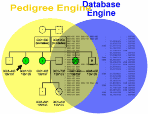
Note that this release of the program, version 0.936, has numerous changes compared to the previous release (version 0.933). Even if you are thoroughly versed with the workings of version 0.933, you are advised to take a careful look at the numerous changes and new features in the program described in the documentation here.
As the old adage says, necessity is the mother of invention. When I first started this project a number of years ago, I had never written a recursive descent parser, never implemented balanced binary sorted trees, and I think at that time I had not even heard of the Postscript graphics language! There certainly was no master plan for this program, only the desire to get work done more easily with fewer data conversion headaches. Nor did I or my colleagues sit down and specify a coding standard for the program, much less a documentation standard. Whatever I could write in a reasonable amount of time that happened to work well enough to get the job done was just that, good enough.
Fortunately, a few early decisions were fundamentally correct, even if my implementations were less than perfect. The program began to take shape back in the days when all I knew was DOS and one of my first decisions was to use a DOS 32-bit protected mode library for the Borland compiler. Since the program used a 32-bit flat memory model from day one, it proved easy to port it over to Solaris and HP-UX when I finally got around to learning Unix.
Another early decision was to add an interactive command interface to the program. Early versions of the program required arguments passed from the command line, and it quickly became evident that hundreds of command-line arguments would be difficult to remember and would impair program flexibility. After reading a book on programming in C by Herbert Schildt which showed how to write a BASIC interpreter, as an experiment I decided to create a version of the program with an interactive command parser. That of course proved to be much nicer than the earlier non-interactive versions.
A third pivotal decision was to add pedigree drawing. When I initially suggested doing this, I remember being told that this was a hard problem which I should not waste my time on since other programs existed which already provided that functionality. In retrospect, I'm exceedingly glad I didn't listen to that advice, since the ability to display pedigree data graphically is probably one of the program's greatest strengths. The graphics were originally created using HP's PCL printer language; Postscript was introduced in a later revision of the program.
The program --and the programmer!-- have now begun to mature, but maturation has occurred, and continues to occur, as a slow process. A number of people in the labs where I have worked and elsewhere have found Madeline useful and a timesaver. As a result, I am encouraged to move the program closer to the ideal that I imagine it could be. Although the program and its code still have numerous shortcomings, you can still use these intermediate releases to help you complete your work more quickly, with less hassle, and fewer errors.
Finally, please note that this version of Madeline is released under the GNU General Public License which grants authors and users certain rights. I encourage you to read the license if you are not already familiar with it. This program is distributed in the hope that it will be useful, but WITHOUT ANY WARRANTY; without even the implied warranty of MERCHANTABILITY or FITNESS FOR A PARTICULAR PURPOSE.
A lot of work goes into a program like this and I am indebted to many people for their help and suggestions. I would especially like to thank the following people:
Compared to previous versions of of Madeline, version 0.936 incorporates many more features of C++ and the C++ Standard Template Library (STL) into the code base. As a result, a modern C++ compiler is a most. You may have trouble compiling Madeline v. 0.936 on older compilers.
At this point in time (November, 2004), we have successfully compiled and tested Madeline v. 0.936 using GNU gcc versions 3.3 or 3.4.2 on Linux (SuSE 7.3, SuSE 9.0, SuSE 9.1, Mandrake 10.0) on Intel and AMD boxes, Macintosh OSX 10.3 on PowerPC, and Solaris 8 on the Sparc platform. We have also successfully compiled v. 0.936 using Intel's icc compiler version 8.1 on SuSE Linux 9.0 with the GNU gcc 3.4.2 C++ libraries.
Presumably due to problems with the compiler's STL implementation, compilation of Madeline 0.936 has failed using Sun's Forte 6.2 compiler on Solaris 8 on the Sparc platform. Compilation has also failed when attempting to use the C++ libraries that were bundled with icc v. 8.1. Interestingly, Intel's icc compiler defaults to using gcc's C++ libraries instead of its own when the version of gcc is greater than or equal to 3.2. This provides some evidence that the gcc C++ libraries may be better than Intel's.
We are hoping to test Madeline on other platforms and with other compilers as time and resources allow. Please report your successes or failures to the primary author, Ed Trager.
Madeline now uses the GNU Autoconf system for automatic configuration. In light of this, we expect that the program can be built successfully on virtually all modern UNIX-like platforms if you have a sufficiently advanced and standards-compliant C++ compiler. If you have any trouble, we recommend you download and compile the latest version of the GCC compiler.
Please review Notes on Installing Madeline Version 0.936 for more information about compiling and installing Madeline on specific platforms.
Madeline was originally designed to meet the needs of the
Finland-United States Investigation of NIDDM Genetics (FUSION) study. Because of this, Madeline has specific knowledge about
FUSION study IDs. A narrow subset of Madeline's functionality makes use of this knowledge.
Click here if you are interested in learning more about Madeline's FUSION-specific functionality.
Paragraphs or headings preceded by "FUSION:"
describe FUSION-specific functionality. This functionality is only available when FusionSupport is
set on.
FusionSupport is off by default.
Note: All current development on Madeline focuses on providing general support for genetic linkage studies. FUSION-specific development ceased long ago.
Included with the distribution of the program is an extensive tutorial
that will guide you through the entire linkage analysis process using Madeline
interactively. The tutorial is located in the tutorial/Documentation
subdirectory under the name MadelineTutorial.html. The
tutorial subdirectory also contains all of the data files
needed to complete the tutorial.
The tutorial can serve as quick introduction to the program and give you a feel to how the program works. After completing the tutorial, you can return to reading the main documentation for an in-depth treatment of the program's features.
Instructions to Madeline are entered at a command prompt. Madeline's command interpreter is not sensitive to capitalization. However, capitalization is often used in this document for clarity of presentation.
Madeline can be run interactively or in batch mode (Fig 2). To run Madeline interactively, type "madeline" at your system prompt and press return. Madeline's "M>" prompt will appear.
Batch files contain a sequence of Madeline commands that have been saved in a text file in
ASCII or
UTF-8 format.
There are two ways to run batch files. The first way is to provide the name of a batch file
as a command line parameter after the name of the program. The second way is to
start Madeline interactively and then use the run command to
execute the batch file. Madeline returns to interactive mode if an error occurs, or when a
batch file terminates without a goodbye or
quit command.
edtrager@retina:~> madeline starting Madeline in interactive mode ______________________________________________________________________________ ______________________________________________________________________________ __ __ _ ______ _______ _ _ __ _ _______ | \ / | / \ | ___ \ | _____| | | | | | \ | | | _____| | \/ | / ^ \ | | \ \ | |___ | | | | | \ | | | |___ | |\ /| | / /_\ \ | | | | | ___| | | | | | |\ \| | | ___| | | \/ | | / ___ \ | |___/ / | |_____ | |______ | | | | \ | | |_____ |_| |_| /__/ \__\ |_______/ |_______| |________| |_| |_| \__| |_______| ______________________________________________________________________________ ______________________________________________________________________________ Version 0.936 Written by Edward H. Trager <ehtrager@umich.edu> COPYRIGHT 2003 THE REGENTS OF THE UNIVERSITY OF MICHIGAN PORTIONS COPYRIGHT 1995 EDWARD H. TRAGER ALL RIGHTS RESERVED Madeline comes with ABSOLUTELY NO WARRANTY. This is free software and you are welcome to redistribute it under certain conditions. For details, type "license" +-----------------------+-----------+-----------------------------------------+ | Variable or State Flag| Setting | Description | +-----------------------+-----------+-----------------------------------------+ | EXTERNAL PROGRAMS | | | +-----------------------+-----------+-----------------------------------------+ | Editor | edith | Program used to edit files | | PostscriptViewer | gv | Program used to view Postscript drawings| | PrintCommand | lpr | System program used to print files | | WebBrowser | mozilla | Program used to view HTML documentation | +-----------------------+-----------+-----------------------------------------+ | EVALUATION SETTINGS | | | +-----------------------+-----------+-----------------------------------------+ | EvaluationInterval | 0.50 cM | Value to write to control file. | | OffEndDistance | 10.00 cM | Value to write to control file | +-----------------------+-----------+-----------------------------------------+ | DRAWING SETTINGS | | | +-----------------------+-----------+-----------------------------------------+ | Color | ON | Draw pedigrees in color | | ReverseShading | OFF | Black is first icon shade | | DividedDrawings | ON | Paginate drawings by founding group | | HighlightRows | ON | Alternately highlight data on drawings | | LabelCreatedIndividual| ON | Label virtuals created by Madeline | | Orientation | AUTOMATIC | Automatic based on drawing dimensions | | PaperMargin | 1.00 cm | Margin (in cm) on all four sides | | PaperSize | USLETTER | 8.5 x 11.0 inches | +-----------------------+-----------+-----------------------------------------+ | OTHER SETTINGS | | | +-----------------------+-----------+-----------------------------------------+ | AutoExclude | ON | Exclude pedigrees automatically | | AutoCheckInheritance | ON | Check inheritance on OPEN | | ConsoleHighlights | ON | Use bold/color highlights on console | | Delimiter | TAB | Delimiter for tables and other output. | | FusionSupport | OFF | FUSION customizations disabled | | HaplotypeDisplay | OFF | Display genotypes delimited with "/" | | Language | American E| Language convention used for date, time | | MapDetails | OFF | LIST MAP summary display | | SaveAlleleFrequencies | OFF | Calculate new frequencies on next OPEN | | Time | | Friday, December 5, 2003 | | Verbosity | VERBOSE | All messages are printed to the console | +-----------------------+-----------+-----------------------------------------+ M> M>quit entering a command in interactive mode Releasing resources ... Goodbye! edtrager@retina:~>madeline chromosome20.script starting Madeline in batch mode open 'linkage/chr20.data.mfh' executing first batch command Calculating allele frequencies for 7. D20S173... Calculating allele frequencies for 10. D20S889... Calculating allele frequencies for 13. D20S898... ...
You can set parameters and run commonly needed commands
automatically each time Madeline is started by providing a script file
called "initial.script". Madeline will first look for a local version
of initial.script in the current working directory from which Madeline
is invoked. Failing to find initial.script there, Madeline will look in
the share/madeline/ subdirectory under the directory prefix where Madeline was
installed. For example, if Madeline was installed in /usr/local, then the program
will look for /usr/local/share/madeline/initial.script.
Any commands that can normally be invoked on the command line or in a batch file
can be placed into initial.script. Assignments to specify default field names or
environmental settings are typically placed in initial.script (Fig. 4).
// // Typical initial.script file: // // // Environment settings: // quiet set language to English Editor="emacs" PostscriptViewer="gv" // // Pedigree drawing-specific settings: // set color off set PaperSize to A4 // margin in centimeters: set PaperMargin to 1.5 set orientation to automatic // // Pedigree database-specific settings: // GenderField='GENDER' FamilyIDField='FAMILY' IndividualIDField='INDIVIDUAL' // // Map standard missing value indicators: // NumericMissingValue[1]=-1 NumericMissingValue[2]=-9 // // Map database-specific settings: // PositionField="POSTN" OrdinalField ="ORDNL"
Note: Starting with Madeline v. 0.933, it is recommended that
site-wide defaults be compiled directly into Madeline by customizing the config.h
source file generated by the configure script run by you or your system administrator
when Madeline is installed. Many (but not all) parameters can be configured in config.h.
Remaining settings can be specified in the initial.script as necessary. If you don't
require any site-specific customizations, you can just leave the global default initial.script
as is.
Madeline processes data stored in tables. A database table is a rectangular array of data. A record is a row in the array. A field is a column in the array. Each record contains one or more identifiers or keys which identify the entity, and the data -- all the measured variables -- for the entity. The measured entity may be an individual in a pedigree, a genetic marker, a position along a genetic map, or something else.
The program currently supports the following table formats:
Note: Of these four formats, we now recommend using only the Madeline native format because it is open, non-proprietary, human-readable, and editable in any text editor (in the case of UTF-8 files, in any UTF-8 capable text editor: see this link). Although supported in versions 0.933, 0.935 and 0.936, the legacy xbase and SAS transport formats are deprecated and we may not support them at all in future versions of the program.
The structure of the Madeline format is described below. Sample PHP code for creating Madeline files from database tables is also provided.
A Madeline-formatted table is a human-readable flat file containing ASCII or UTF-8 characters having the following structure:
The following figure illustrates how the example "relationships.dat"
data file included in the software distribution conforms to this structure:
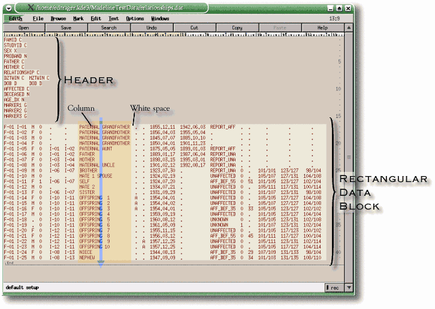
Madeline Table Format. Tables in the Madeline format are flat files divided into a header block consisting of one or more lines containing column labels and optional type designators, and a data block consisting of even-length records divided into space-delimited data columns. (The vertical blue arrow illustrates how data in a single column can, if necessary, contain embedded white space, as long as that white space does not stretch uninterrupted from the first to the last record: vertically uninterrupted white space delimits columns).
The header contains:
Column labels should be CAPITALIZED. Column labels are separated by any amount of white space and can span as many lines as necessary. Each line in the header can contain one or more column labels (This is illustrated above where seventeen column labels span fifteen header lines).
The order of the column labels from left-to-right and top-to-bottom indicates the order of the columns in the data block. Lines in the header can be of varying lengths.
A column type designator consists of single capital letter following after a column label. Any amount of white space can be used between a column label and type designator. The following column type designators are recognized:
Column Type Designators in Madeline Tables
| Column Type Designator | Description | Example | |||||||||
|---|---|---|---|---|---|---|---|---|---|---|---|
| C |
Designates:
|
STUDYID C
|
|||||||||
| X | Designates the gender (sex) column. The gender column may alternatively be designated with a "C" for character codes or with an "N" for numeric gender codes. |
SEX X
|
|||||||||
| N | Designates that a column containing numeric values be treated as numeric data. |
AGE_DX N
|
|||||||||
| D |
Designates that a column contains date data
in ISO-8601 format
(four-digit year followed by a two-digit month and finally a two-digit day).
Note that Madeline permits use of any of the usual date delimiters:
|
DOB D
|
|||||||||
| G | Designates that a column contains genotypes as numeric allele labels separated by a forward slash "/" character. Genotype columns can alternatively be designated with a "C": the program will automatically recognize character columns containing genotypes. |
D12S4321 G
|
|||||||||
| A | Designates that a column contains one of the two alleles that constitutes a genotype. Allele columns must exist as identically-named pairs. |
D12S4321 A
|
At least one blank line must follow after the header in order to separate the header block from the data block.
The data block consists of:
Each record (or row) contains the identifiers and data measured for one entity. For example, a pedigree table contains one row for each individual in a family, where as a map table contains one row for each marker in a genetic map.
The identifiers and data for each record are formatted in:
Note #1: Column type designators are technically optional in most (but not all) cases. The program contains code to automatically detect column types. Certain type promotions, such as from "C" to "G" and from "C" to "X" are permitted and performed automatically when required. The primary exception occurs when completely numeric individual and pedigree identifiers are used: the program automatically detects the columns as being "N" numeric, but you MUST cast them as "C" because the program requires string identifiers for individuals and pedigrees. The best practice is to include column type designators since this increases file readability for humans and prevents surprises.
Note #2: A problem that can occur with hand-edited data files (as opposed to those generated by a script, program, or database system), is embedded tabs or extra spaces or tabs appended to the end of various lines of the data -- but quite invisible when viewed in a typical editor! These make the data block non-rectangular, which is not allowed.
Madeline's recognize command now specifically looks for embedded tabs
and inconsistent data row lengths caused by extra tabs or space characters at the ends of rows. The
rectify command will fix both types of problems in most cases.
You should also open the data file using a good file editor such as
Edith and use the column-highlighting feature (i.e., CTRL+<Left Mouse Button>) to select white space after
the last data column. This quickly reveals whether the lines are all the same length or -- as is
quite likely going to be the case in problematic files -- not (See figure below).
If they are not, a simple CTRL-X
in Edith trims off all of the selected segments.
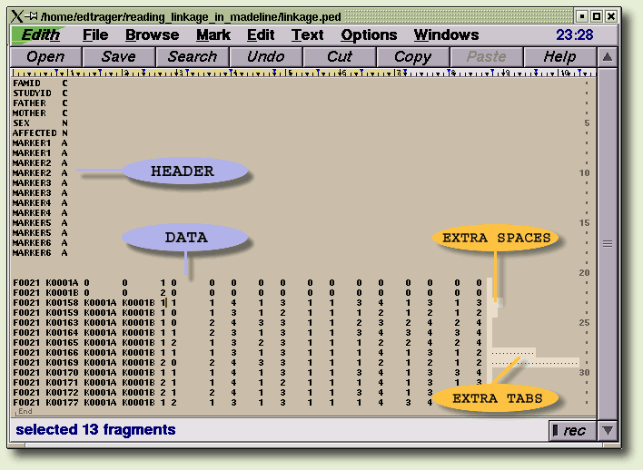
Having trouble getting Madeline to recognize your data file?
Often the culprit is hidden spaces and/or tab characters trailing after the last
column of data, making it non-rectangular. Another culprit could be tab characters
embedded within rows (not illustrated). The rectify command
will handle both types of problems. Alternatively, you can use Edith
or a similar file editor to display embedded tabs and terminal tabs and spaces.
Hold down the CTRL key while pressing
the left mouse button to select the trailing white space and remove it (CTRL-X).
If your data contain strings in non-English languages that use accented Latin letters (such as "ç" and "é" in French, "ñ" in Spanish, and "ü" in German) or non-Latin scripts (Cyrillic, Japanese, Chinese, etc.), then your data must be encoded in the Unicode UTF-8 format and stored using the Madeline table format. You will also need to run Madeline in a Unicode-capable terminal emulator under a UTF-8 locale.
What does this mean? For European users, it means that the Madeline does not support any of the legacy ISO-8859-x character sets, not even ISO-8859-1. For other users, it means that your country's legacy character sets, whether it be KOI-8, JIS, GB18030, or something else, are not supported. The primary issue is that many people's computers are still set to use some legacy encoding system. Fortunately, major Linux distributions are now enabling UTF-8 locales by default. If you are using a recent release of SuSE or Redhat in North America or Europe, your system will be set to use UTF-8 by default. However, if you are using a recent Linux distribution in East Asia (China, Japan, etc.), you should check your locale settings. This document should provide you with most of the information you need to switch over to Unicode under Linux or a similar *nix-based system.
The rules for formatting a UTF-8 table in Madeline format are the same as those for ASCII. In particular, note that columns in the data block must be aligned on byte boundaries with white space (ASCII 0x0020) separating columns. Trying to format such a file manually is not recommended. Instead, store your data in a database and use a scripting language like Perl or PHP to extract the data into the correct format.
See the examples/utf8/utf8.data file as an example of a properly
formatted UTF-8 file:
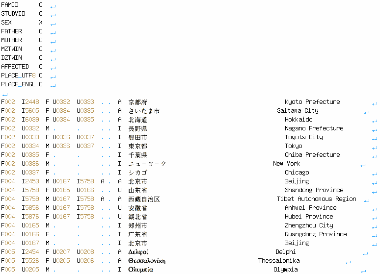
Data files in the Madeline flat file format can contain data in any of the world's scripts encoded in Unicode UTF-8. The last column in the file appears unaligned, but is actually aligned on byte boundaries, not on displayed character boundaries.
Before you can use a flat-file table, you should first run the
recognize command which creates a small, complementary binary
file with a ".mfh"
(
Madeline
File
Header
)
extension. This complementary file stores meta information about
the table (names and number of columns, number of rows, etc.)
in a binary format which the program uses to optimize table access. To open the table, specify
the complementary ".mfh" file name in place of the original data file.
Beginning with version 0.936, the program now automatically senses if you are attempting to
open up the ASCII/UTF-8 data table instead of the complementary .mfh file, and will automatically switch
to the .mfh file if present. If not present, the program will now automatically run
the recognize command for you, and then open the .mfh
file. Even though the process is now automated, any formatting errors in your data file can still create problems.
You are more likely to see these problems when you manually execute recognize than when you don't.
An unannotated data file contains no header describing the fields. What do you do if you receive an unannotated data file from a colleague or client? Let Madeline do some of the work for you!
The recognize command contains code to automatically detect columns in unmarked files.
The program can even often identify the core gender, individual, father, and mother fields
required for pedigree reconstruction. This can save time and tedium. Consider the following excerpt from the
"unannotated.data" file included in the examples subdirectory of the software distribution:
NT5641 M AB0115 FM_012 A A AB0116 190/202 166/169 0/0 172/175 154/154 65 89.94 NT5661 F AB0147 FM_012 A A AB0148 208/211 153/157 201/207 160/175 154/160 50 81.03 NT5675 F AB0119 FM_012 A A AB0120 205/211 153/166 204/207 166/175 157/157 73 82.06 NT5676 F AB0123 FM_012 A A AB0124 190/208 156/166 201/207 175/177 154/157 63 88.76 NT5678 F AB0140 FM_012 A I NT5676 190/208 157/166 201/207 175/177 154/157 60 65.86 NT5679 F AB0115 FM_012 A I AB0116 202/211 157/169 207/207 172/175 154/154 78 82.92 NT5724 F AB0135 FM_012 A I AB0136 205/205 166/169 204/210 166/172 154/157 69 71.82 NT5728 F AB0113 FM_012 A A AB0114 190/190 156/169 204/207 160/175 148/157 64 84.55 NT5749 F AB0121 FM_012 A A AB0122 205/211 157/157 0/0 166/175 154/160 . 87.46 NT5752 F AB0121 FM_012 A I AB0122 205/211 153/157 204/207 166/175 148/154 83 88.57 NT5753 F NT5641 FM_012 U I AB0132 . . . . . . 62.94 NT5757 F AB0130 FM_012 A A AB0131 202/211 157/169 201/207 166/172 154/160 55 70.16 NT5790 F AB0138 FM_012 U I AB0139 208/208 157/160 207/207 172/172 154/154 . 71.18 . . .
Unannotated Table. Having trouble deciphering which column is which? Let Madeline help you!
Running the recognize command on this file produces the following:
M>recognize 'unannotated.data'
Recognizing file "unannotated.dat" to "unannotated.dat.mfh" ...
Skipping a total of 1 line at top.
There are 0 non-empty header lines and 54 data lines.
Data records are 83 bytes long.
The gender field has been identified and will appear in the ".run" file
The individual, father, and mother ID fields have been identified
and will appear in the ".run" command file
# . Field Name Start End Length Prec. Space Type
---- ----------- ----- ----- ------ ----- ----- -----
1. INDIVIDUAL 1 6 6 0 1 C
2. GENDER 8 8 1 0 1 X
3. FATHER 10 15 6 0 1 C
4. CHAR_003 17 22 6 0 1 C
5. CHAR_004 24 24 1 0 1 C
6. CHAR_005 26 26 1 0 1 C
7. MOTHER 28 33 6 0 1 C
8. GENO_001 35 41 7 0 1 G
9. GENO_002 43 49 7 0 1 G
10. GENO_003 51 57 7 0 1 G
11. GENO_004 59 65 7 0 1 G
12. GENO_005 67 73 7 0 1 G
13. NUME_001 75 76 2 0 1 N
14. NUME_002 78 82 5 2 1 N
Binary recognition header file (".mfh") written.
--> If this is a pedigree file, type 'open "unannotated.dat.mfh" '.
--> If this is a genetic map file, type 'load "unannotated.dat.mfh"'
The template batch file unannotated.dat.run has been created.
NOTE: The ".run" file contains commands and parameters to assist
you in opening a flat file database, but generally requires
editing before use.
M>
Clearly the program cannot perform magic. For example, the program was not able to determine the
FamilyIDField (the fourth column in the table) and there are other limitations to what the program
can do. Nevertheless, being able to correctly identify the core pedigree structure and genotype columns in an unannotated
data file can save you from a tedious manual investigation of the data.
When using xbase or SAS transport formats, Madeline column type designators like X,G, and A do not exist. For legacy formats, only use character, numeric, and date column types. For example, the gender attribute can be stored in a character field coded using "M" and "F". Genotypes can also be stored in character fields. Floating-point and integer fields are cast to Madeline's double-precision numeric floating-point type. Also avoid the logical and date-time field types found in dBase and FoxPro as Madeline won't understand these.
The command used to open or manipulate a table depends on the type of table being processed:
open command.load or
graph load command.compose and decompose commands, respectively.
Composed tables can also be merged both row-wise and column-wise using the
merge command.read command. They
can be saved out using the save command.graph open command.Madeline's database engine detects operating system and file byte-ordering at run time, permitting tables from PCs to be opened on UNIX workstations, and vice versa.
The different types of tables are described below in turn.
In a pedigree table, each row (record) contains the data for one individual.
In Madeline, the names of the family and individual ID fields are stored in variables
called FamilyIDField and
IndividualIDField, respectively.
Basic pedigree reconstruction additionally requires knowledge of
the father (FatherIDField),
mother (MotherIDField),
and gender (GenderField)
of each individual. Together, these field variables comprise the five core fields that
must be present in every pedigree table:
FamilyIDField -- key identifierIndividualIDField -- key identifierFatherIDField -- required for pedigree reconstructionMotherIDField -- required for pedigree reconstructionGenderField -- required for pedigree reconstructionThe remaining identifiable data fields in a pedigree table are classified by Madeline into two groups: (1) phenotype and (2) genotype. Madeline automatically classifies all identifiable fields in a pedigree table into one of these three categories. Each identifiable field is tagged with a single-letter identifier shown below:
Core fields are identified by matching field names against the names stored in the
field name variables (i.e., FamilyIDField,
StudyIDField, GenderField, etc.).
Genotype fields are identified by scanning the data. Remaining fields are classified as phenotype fields.
Field classifications are shown in the figure below, illustrating a portion of a typical pedigree table:
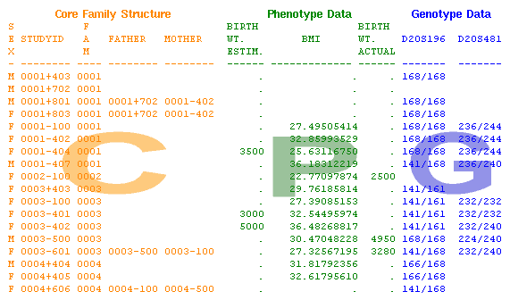
Pedigree Tables. All identifiable fields in a pedigree table are classified into one of three categories in Madeline: "C" for core fields, "P" for phenotype fields, and "G" for genotype fields.
Note: The complete set of core fields consists of the five required core fields shown above, plus optional core fields such as AffectionStatusField, MZTwinField, and DateOfBirthField. See Core Data Fields for a complete listing.
Fields containing only missing value indicators that cannot be categorized
as "C", "P", or "G" will be marked with an asterisk, "*".
Phenotype "P" fields can be tagged by the user as being covariate "V" fields using the
toggle command. Phenotype fields are never automatically classified as
covariate "V" fields.
When a pedigree table containing allele "A" columns instead of genotype columns, such as a Linkage file, is opened in Madeline, the paired and identically-named allele columns automatically appear as single genotype "G" fields.
Below is an excerpt from
the "linkage.ped" data set distributed with the program. Note that while
the data block is in the unchanged Linkage format, Madeline still requires that you provide a conformant header
in Madeline format to identify the columns:
FAMID C STUDYID C FATHER C MOTHER C SEX N AFFECTED N MARKER1 A MARKER1 A MARKER2 A MARKER2 A MARKER3 A MARKER3 A MARKER4 A MARKER4 A MARKER5 A MARKER5 A MARKER6 A MARKER6 A F0021 K0001A 0 0 1 0 0 0 0 0 0 0 0 0 0 0 0 0 F0021 K0001B 0 0 2 0 0 0 0 0 0 0 0 0 0 0 0 0 F0021 K00158 K0001A K0001B 1 1 1 4 1 3 1 1 3 4 1 3 1 3 F0021 K00159 K0001A K0001B 1 0 1 3 1 2 1 1 1 2 1 2 1 2 . . .
Here are the commands to recognize and open this file. Note how the pairs of allele columns are recognized as genotype columns:
M>recognize "linkage.ped" Recognizing file "linkage.ped" to "linkage.ped.mfh" ... ... # . Field Name Start End Length Prec. Space Type ---- ----------- ----- ----- ------ ----- ----- ----- 1. FAMID 1 5 5 0 1 C 2. STUDYID 7 12 6 0 1 C 3. FATHER 14 19 6 0 1 C 4. MOTHER 21 26 6 0 1 C 5. SEX 28 28 1 0 1 N 6. AFFECTED 30 30 1 0 6 N 7. MARKER1 37 41 5 0 4 G 8. MARKER2 46 50 5 0 4 G 9. MARKER3 55 59 5 0 4 G 10. MARKER4 64 68 5 0 4 G 11. MARKER5 73 77 5 0 4 G 12. MARKER6 82 86 5 0 2 G ... M>// Because the LINKAGE file uses zeros to represent M>// missing parents, we need to add zero to the M>// CharacterMissingValue[] array: M>list CharacterMissingValue CharacterMissingValue has 5 elements: CharacterMissingValue[ 1]="." CharacterMissingValue[ 2]="/" CharacterMissingValue[ 3]="0/0" CharacterMissingValue[ 4]="0/ 0" CharacterMissingValue[ 5]="0/ 0" M>cmv[6]="0" M>// Madeline's GenderStatus[] and AffectionStatus[] M>// arrays now contain LINKAGE code mappings by default, so M>// we can immediately open the file: M>open "linkage.ped.mfh" 6. AFFECTED has 3 levels. Calculating allele frequencies for 7. MARKER1... Calculating allele frequencies for 8. MARKER2... Calculating allele frequencies for 9. MARKER3... Calculating allele frequencies for 10. MARKER4... Calculating allele frequencies for 11. MARKER5... Calculating allele frequencies for 12. MARKER6... Pedigree table "linkage.ped.mfh" opened with 13 records ... 1.FAMID Co__1 5.SEX Co__5 9.MARKER3 Go__3 2.STUDYID Co__2 6.AFFECTED Co__6+ 10.MARKER4 Go__4 3.FATHER Co__3 7.MARKER1 Go__1 11.MARKER5 Go__5 4.MOTHER Co__4 8.MARKER2 Go__2 12.MARKER6 Go__6 M>
A map table contains map information related to markers on one or more chromosomes. The key fields in a map table are:
The data fields in a map table are:
The following optional fields may also be present:
An example of a map table is shown below:
MARKERNAME CHROMOSOME ORDINAL POSITION D17S944 17 1 82.6 D17S949 17 2 93.3 D17S1304 17 3 94.0 D17S1351 17 4 96.0 D17S1352 17 5 98.1 D17S1807 17 6 99.2 D17S929 17 7 99.2 D17S1301 17 8 100.0 D17S785 17 9 103.5 D17S674 17 10 105.7
A marker map table.
Note: A single map table can contain marker map data for multiple chromosomes. A single table is easier to maintain than multiple tables.
In traditional metal typography, metal casts of individual letters are "composed" into rows of type for printing on a printing press. In Madeline, we have borrowed the idea of "composing" text to refer to the operation of rearranging a table in which each row contains the alleles for one marker measured on one individual:
FAMID STUDYID MARKERNAME ALLELE1 ALLELE2 ----- ------- ---------- ------- ------- P0001 I00001 D12S1304 121 127 P0001 I00001 D12S127 98 104 P0001 I00001 D12S341 134 142 P0001 I00002 D12S1304 117 119 P0001 I00002 D12S127 102 102 P0001 I00002 D12S341 136 138 . . . . .
Excerpt from a decomposed table. One row contains the alleles for one marker measured on one individual.
... into a table in which each row contains the genotypes for all of the markers measured on one individual ...
FAMID STUDYID D12S1304 D12S127 D12S341 ----- ------- -------- ------- ------- P0001 I00001 121/127 98/104 134/142 P0001 I00001 117/119 102/102 136/138 . . .
Excerpt of the same data after composition. One row contains the genotypes for all markers measured on one individual.
A marker table contains the alleles for a specific marker measured on a specific individual. Output from the ABI Genotyper software is in this table format. This type of table has three key fields:
There are only two essential data fields in a marker table:
Madeline provides support for integrating the information in a marker table into a
pedigree table via the compose and merge commands.
The compose command takes care of converting the paired allele
fields into the single genotype fields expected in a pedigree table. The merge command
allows you to integrate family structure, phenotype, or genotype data from separate tables into a combined table for use
in Madeline.
Output files containing logarithm of odds (LOD) results from certain analysis programs such as Simwalk2 can be converted by Madeline directly into a table format which the program can then use for graphing the results. Output from other analysis programs may require a small amount of manual formatting which is usually not difficult to do.
The convert command may used to produce a table in the right format:
M>convert simwalk file 'sw_chr10.out' to 'chr10.results'
Converting input file "sw_chr10.out" to Madeline-formatted output files ...
...
M>
Converting an analysis result file directly into a Madeline table format.
An analysis results table must contain at least a POSITION and a SCORE column. Other columns may also be present.
Here is a table of results from a non-parametric Simwalk2 analysis already formatted for use by
Madeline. For graphing this data in Madeline, you would have to specify which of the score columns to use
by setting Madeline's GraphScoreField to one of the "STAT" columns:
POSITION STAT_A STAT_B STAT_C STAT_D STAT_E 0.0000 0.073 0.046 0.072 0.069 0.077 4.1691 0.182 0.076 0.180 0.167 0.181 7.9053 0.163 0.076 0.162 0.156 0.183 10.0506 0.298 0.156 0.311 0.300 0.325 18.0591 0.578 0.409 0.614 0.633 0.665 21.3661 0.633 0.527 0.675 0.726 0.779 36.2864 1.526 0.690 1.478 1.445 1.359 39.7003 1.222 0.529 1.201 1.150 1.056
An analysis results table from Simwalk2 formatted for graphing in Madeline.
For more information on how to graph tables of LOD results, see the graph command.
Madeline's database engine supports: character string, numeric (floating point and integer), and date data types.
A logical data type (such as the "L" field type of xbase) or boolean data type is not distinguished from the numeric data type. Use appropriately coded numeric columns for boolean attributes (for example, 1=true, 0=false). Other derived types, such as date-time or monetary types are not supported.
Character data are read from tables by trimming leading and trailing space characters. Thus, blank entries in a database appear as the empty string, "", which Madeline interprets as a missing value indicator. When entered on the command line, literal character data must be delimited by a pair of matching single or double quotes, e.g., "0001-230" or '0980A'.
Madeline's interpretation of character data is affected by the values stored in the
CharacterMissingValue
(aliased as CMV) array. Each value stored in this array is
interpreted as an additional value to treat as a missing value indicator. The
CharacterMissingValue array contains a set of default values that
are appropriate for most data sets. Users can reassign current values, or assign additional values as
needed.
Users planning on using Linkage files with Madeline in particular should note that the character string "0" (zero, used to represent missing parent IDs in Linkage files) is not considered a missing value by default in Madeline. Recall that Madeline treats individual and pedigree identifiers as character strings.
All numeric data types are converted to double-precision floating point numbers.
Literal numeric values are entered on the command line without delimiters. Interpretation of
numeric data is affected by the values stored in the NumericMissingValue
(aliased as NMV) array. Each value stored in this array is
interpreted as an additional value to treat as a missing value indicator.
Users should verify whether Madeline's default numeric missing values
are appropriate for their data and reassign or add values to this
array as necessary.
Madeline does not recognize a logical or boolean data type separate
from the numeric data type. In contexts where a value is to be
interpreted as a logical value, Madeline treats zero (0) as #false,
and any non-zero, non-missing value as #true.
True/false data should thus be coded using a numeric field type
with values of 0, 1, and a numeric missing value indicator
if required.
Dates are converted internally into Julian day integers.
When entered at the command line, dates must be delimited between curly braces, { }.
Dates in tables or entered on the command line should be in ISO-8601 format (a four-digit year followed by a two-digit month and finally a two-digit day). In tables and on the command line, Madeline permits use of any of the following date delimiters:
| YYYY | . - / |
MM | . - / |
DD |
In addition, on the command line you can also use single spaces as delimiters:
M>? {2003 05 17}
{Saturday, May 17, 2003}
M>? ( {2003 05 17} - {1965 07 28} ) / 365.2425
37.8023
M>
Note: Previous versions of Madeline supported entry of dates in non-ISO formats,
such as "{December 11, 1963}". However, the program only supported a few locales (American English,
British English, etc.) and we felt that locale-specific date entry conventions could lead to confusion or even
errors for international collaborations. The program continues to support the display of dates in numerous
locales but date entry has been standardized to the ISO format. For example:
M> set language to Japanese
...
M>? {2003 05 17}
{2003年5月17日 (土曜日)}
Dates must be entered in ISO YYYY MM DD format, but can be displayed using specific locale conventions.
Pope Gregory XIII instituted the calendar that is now used internationally in October of 1582. (However, only the Catholic countries in Europe adopted the Gregorian calendar immediately. Other countries adopted it much later. For example, both England and the American colonies did not adopt it until the middle of the 18th century. Countries such as Thailand did not adopt the international calendar until the late 19th century). Madeline reports all dates since October of 1582 using the Gregorian calendar. In order to have Easter fall at the right time of the year once again, ten days were skipped in October of 1582. Madeline handles this correctly:
M>?{1582.10.04} {Thursday, October 4, 1582} M>?{1582.10.04} + 1 {Friday, October 15, 1582} M>
Ten days were skipped in October of 1582 by Pope Gregory XIII.
Dates prior to October of 1582 are reported using a proleptic calendar that projects the Gregorian-Julian calendar back in time.
By default, Madeline displays dates based on your computer's locale setting. If your computer is set to the "C" or
"POSIX" locale or any other non-UTF-8 locale, Madeline defaults to AmericanEnglish conventions
for displaying dates.
When you run Madeline under a UTF-8 locale, Madeline displays dates in the selected locale if possible. The program
evaluates the following environment variables in order of precedence: LC_ALL, LC_DATE, LC_CTYPE,
and LANG to determine how to display dates. Note that Madeline needs to be run in a
Unicode-enabled terminal emulator,
such as mlterm, for proper display of many languages.
You can also change the conventions used to display dates interactively using the set language command.
Examples are shown below:
edtrager@eyegene:~>LANG=fr_FR.UTF-8 madeline ... +-----------------------+-----------+-----------------------------------------+ | OTHER SETTINGS | | | +-----------------------+-----------+-----------------------------------------+ | AutoExclude | ON |Exclude pedigrees automatically | | AutoCheckInheritance | ON |Check inheritance on OPEN | | ConsoleHighlights | ON |Use bold/color highlights on console | | Delimiter | TAB |Delimiter for tables and other output. | | FusionSupport | OFF |FUSION customizations disabled | | HaplotypeDisplay | OFF |Display genotypes delimited with "/" | | Language | French |Language convention used for date, time | | MapDetails | OFF |LIST MAP summary display | | SaveAlleleFrequencies | OFF |Calculate new frequencies on next OPEN | | Date | |le lundi 22 décembre 2003 | | Verbosity | VERBOSE |All messages are printed to the console | +-----------------------+-----------+-----------------------------------------+ M>? {1983.12.03} {le samedi 3 décembre 1983} M>set language to japanese ... M>? {1983.12.03} {1983年12月3日 (土曜日)} M>
UTF-8-based locale settings read from environment variables are used for determining how to display dates. You can also
change the language settings interactively using the set language command.
Dates may be added and subtracted from one another, with the results being expressed in days.
Date data may be displayed on pedigree drawings. Dates may also be used in an
expression passed to a view command,
a draw command,
or to a subsetting command such as exclude, or to the
sort command (which sorts the order in which siblings appear
on a pedigree drawing).
Most statistical genetics programs for which Madeline provides formatted files as output do not support
date data. However, dates can be written to output files in Madeline's generic
formats. You will need to toggle date fields
on for output since they are toggled off by default.
Madeline supports entry of missing values from the command line, and also provides a simple mechanism for the user to define sets of values that should be mapped as missing values when a data are read from files.
On the command line, Madeline provides the following ways to represent missing values:
#missing for missing numeric dataProtocols in scientific studies often require that missing values be coded to specify reasons for missingness. For example, a set of negative integers outside the range of a measured phenotype may be chosen to represent missing conditions, such as assay pending, no assay, no tube, or similar conditions that result in missing data.
To accomodate such conventions, Madeline permits the user to specify lists of
values that are to be treated as missing values. These lists of missing value
indicators are stored in two arrays. CharacterMissingValue[] is used
whenever character fields, including genotype fields, are referenced.
NumericMissingValue[] is used whenever numeric fields are referenced
(see table below). For expediency, these arrays can be referenced using
abbreviated names, cmv[] and nmv[], respectively.
There is currently no missing value array for dates.
Character and numeric missing value arrays in Madeline.
| Full Name | Abbreviated Name | Default Values |
|---|---|---|
CharacterMissingValue[]
|
cmv[] |
cmv[1] = "."
|
NumericMissingValue[]
|
nmv[] |
nmv[1] = -9999
|
In ASCII and UTF-8 data files, a space-padded blank entry or a single dot (i.e., a period) in a character or numeric column is treated as a "native" missing value. (Therefore, the empty string "" and single dot "." need not be included in the missing value arrays). A typical Madeline-ready data file using single dots as missing value placeholders is shown below:
FAMID C STUDYID C SEX X FATHER C MOTHER C MZTWIN C DZTWIN C AFFECTED C AGE_DX N D9S247 G D9S325 G D9S462 G D9S1017 G D9S1321 G L0012 M02448 F N00332 N00333 . . A 68 0/0 349/349 0/0 . 0/0 L0012 M05605 F N00334 N00335 . . A 63 244/252 349/353 157/167 240/244 234/238 L0012 M06039 F N00334 N00335 . . A 68 252/254 0/353 157/157 228/240 234/238 L0012 N00332 M . . . . I . . . . . . L0012 N00333 F N00336 N00337 . . I . . . . . . L0012 N00334 M N00336 N00337 . . I . . . . . . L0012 N00335 F . . . . I . . . . . . L0012 N00336 M . . . . I . . . . . . L0012 N00337 F . . . . I . . . . . . L0034 M02453 M N00167 M05758 . . A 48 242/244 0/0 . 232/244 234/242 L0034 M05758 F N00165 N00166 . . U 89 242/248 0/0 . 232/0 242/246 L0034 M05759 M N00167 M05758 . . A 45 0/256 0/0 . 232/240 238/242 L0034 M05856 M N00167 M05758 . . U 53 242/256 0/0 . 232/232 238/246 L0034 M05876 F N00167 M05758 . . U 59 244/248 0/0 . 240/244 234/242 L0034 N00165 M . . . . I . . . . . . L0034 N00166 F . . . . I . . . . . . L0034 N00167 M . . . . I . . . . . . L0075 M02454 F N00207 N00208 . . A 61 252/254 355/357 157/169 . 234/236 L0075 M05526 F N00205 N00206 . . A 83 0/0 339/359 0/0 . 0/0 ...
A typical Madeline-ready data file with single dots (periods) as missing value placeholders. Madeline automatically recognizes single dots and blank entries as missing values in ASCII and UTF-8 data files.
Note: To increase human and machine readability, we highly recommend using dots (periods) as missing-value column placeholders in data files, as shown in the example above.
When data are read from a file, all "native" missing values (blank and single dot entries) and any values that match the
values specified in Madeline's CharacterMissingValue[] or
NumericMissingValue[] arrays are
treated as missing values by Madeline. When data are written back out to files, missing values are automatically translated
according to the conventions required by each file format (For example, when Madeline is used to create a file in the Linkage
format, the digit zero (0) is used to represent missing values).
At startup, CharacterMissingValue[], contains a set of default missing
value indicators appropriate for most character and genotype data. NumericMissingValue[]
contains the single missing value of -9999 by default. It is the user's responsibility to recognize whether these
defaults are appropriate for your data and make adjustments as required before attempting to open or
load data files.
New values can be assigned to existing cells or appended to the end of these lists as required:
M>list cmv viewCharacterMissingValuearray CMV has 5 elements: CMV[ 1]="." CMV[ 2]="/" CMV[ 3]="0/0" CMV[ 4]="0/ 0" CMV[ 5]="0/ 0" M>cmv[6]="./." append new value to the end of the list M>list cmv CMV has 6 elements: CMV[ 1]="." CMV[ 2]="/" CMV[ 3]="0/0" CMV[ 4]="0/ 0" CMV[ 5]="0/ 0" CMV[ 6]="./." M>list nmv viewNumericMissingValuearray NMV has 1 element: NMV[ 1]= -9999 M>nmv[1]=-1 overwrite one value M>nmv[2]=-9 and append another value M>list nmv NMV has 2 elements: NMV[ 1]= -1 NMV[ 2]= -9 M>
Assigning missing value indicators. Missing value indicators may be assigned to existing cells or appended to the ends of Madeline's character and numeric missing value lists.
Assignments should be done before a data table
is opened so that the values will be recognized appropriately.
The initial.script script file is an appropriate place to set character and
numeric missing value indicator defaults.
Upon opening a pedigree table, Madeline categorizes each field into one of three categories:
When a field is completely empty or contains only missing values,
Madeline assigns the field to a null category represented by an asterisk, "*".
When required, Madeline allows the user to designate a subset of "P" phenotype fields
as "V" covariate fields using the toggle command. Madeline does not
automatically assign fields to the "V" covariate category.
Field categories are summarized in the table below and described in greater depth
below.
Field Categories in Madeline.
| Category | Symbolic Designation | Description |
|---|---|---|
| Core | C |
Set of five required fields like GenderField that must be
present in all pedigree tables, plus additional optional
fields, like AffectionStatusField, that are not required by
default but may be required for some operations.
|
| Genotype | G | Character fields containing two numeric labels separated by a forward slash character representing allele calls, e.g., "141/142" |
| Phenotype | P | Character, numeric, or date fields that contain categorical or continuous phenotype information. |
| Covariate | V |
A subset of phenotype fields that are to be used as
covariates. The user must use the toggle command to
change the designation of a "P" field to "V".
|
| Null | * | Character, numeric, or date fields that are completely empty or contain only missing value indicators. These fields cannot be operated upon. |
Core "C" data fields provide key information about an individual (see table below).
Madeline identifies core fields by their names (in contrast, "G" and "P"
fields are distinguished by scanning the data in the table). These names are stored in
variables whose values may be reassigned by the user.
In conformance with the requirements of the supported legacy database types, field names must be capitalized, and cannot exceed 10 letters in length. When assigning names to the field variables, Madeline will automatically capitalize and truncate non-conforming names, and will issue warning messages to the user.
Note: Limitations on field name length will likely be relaxed in the next release of the program when support for SAS and dBase/xBase file formats is removed.
Core data fields are either required or optional. The absence of one or more of the five required core fields will generate an error when a pedigree table is opened.
Optional core fields may be required for some operations,
but are not required by default.
Madeline makes use of the additional information provided in optional
core fields whenever they are present. In particular, Madeline's pedigree drawing
functionality is greatly enhanced by the presence of optional core fields such as
AffectionStatusField and MZTwinField, among others.
Core fields representing categorical attributes of an individual, such as the GenderField
and AffectionStatusField have corresponding associative arrays for mapping
user data codes to Madeline internal codes.
Core Data Fields in Madeline.
| Variable Name | Description | Default Value | Allowed Field Types | Associative Array |
|---|---|---|---|---|
| Required Core Fields | ||||
1. IndividualIdField
|
Individual identifier |
"STUDYID"
|
Character only | n/a |
2. FatherIdField
|
Father's identifier |
"FATHER"
|
Character only | n/a |
3. MotherIdField
|
Mother's identifier |
"MOTHER"
|
Character only | n/a |
4. GenderField
|
Gender |
"SEX"
|
Character or Numeric |
GenderStatus[]
|
5. FamilyIdField
|
Family identifier |
"FAMID"
|
Character only | n/a |
| Optional Core Fields | ||||
6. AffectionStatusField
|
Affection status |
"AFFECTED"
|
Character or Numeric |
AffectionStatus[]
|
7. DeathStatusField
|
Death status |
"DECEASED"
|
Character or Numeric |
DeathStatus[]
|
8. ProbandField
|
Index case or proband indicator |
"PROBAND"
|
Character or Numeric |
ProbandStatus[]
|
9. LiabilityClassField
|
Liability class |
"LCLASS"
|
Numeric or Character |
LiabilityClass[]
|
10. MZTwinField
|
Monozygotic twin status indicator |
"TWIN"
|
Character only | n/a |
11. DZTwinField
|
Dizygotic twin status indicator |
"DZTWIN"
|
Character only | n/a |
12. DateOfBirthField
|
Date of birth |
"DOB"
|
Date only | n/a |
13. DateOfDeathField
|
Date of death |
"DOD"
|
Date only | n/a |
It is extremely easy to tell Madeline how to translate coded information stored in your data files into values that the program knows about and can process.
Coded values in the
GenderField,
AffectionStatusField,
DeathStatusField,
ProbandField, and
LiabilityClassField
are mapped to Madeline constants using the set of
associative arrays shown in the table in the preceding section. Madeline provides default mappings that
are appropriate for reading many character-coded and Linkage-coded data tables.
For example, the GenderStatus[] array contains
the following values by default:
M>list GenderStatus GenderStatus has 6 elements: GENDERSTATUS[ 1 ]=0 zero is defined as male in Madeline GENDERSTATUS[ 2 ]=1 one is defined as female in Madeline GENDERSTATUS["F"]=1 GENDERSTATUS["M"]=0 GENDERSTATUS["♀"]=1 For animal studies; requires UTF-8 data files in a UTF-8 locale. GENDERSTATUS["♂"]=0 For animal studies; requires UTF-8 data files in a UTF-8 locale.
These defaults are equivalent to issuing the following sequence of
map commands. Note that Madeline constants are prefixed by
the hash sign (#):
M>map GenderStatus 1 as #male M>map GenderStatus 2 as #female M>map GenderStatus "F" as #female M>map GenderStatus "M" as #male M>map GenderStatus "♀" as #female M>map GenderStatus "♂" as #male
Note how the mapping of 1 as #male and
2 as #female is appropriate for reading data coded
according to Linkage file format conventions. The mapping of ♀ (Unicode
u+2640)
and ♂ (Unicode u+2642) are appropriate for animal studies.
Assignments can be made to the associative arrays directly without using the
map command.
The following assignment statements replicate the default mappings for the
AffectionStatus[] array. The first
three assignments allow Madeline to process files coded using the
Linkage format conventions. The remaining three assignments
support the processing of a substantially more intuitive coding convention
that we prefer:
M>// Assignments to support the Linkage/Genehunter format: M>AffectionStatus[ 0 ]=#missing M>AffectionStatus[ 1 ]=#unaffected M>AffectionStatus[ 2 ]=#affected M>// Assignments to support a substantially more intuitive coding convention: M>AffectionStatus["A"]=#affected M>AffectionStatus["I"]=#missing M>AffectionStatus["U"]=#unaffected
The mappings shown above for GenderStatus[] and
AffectionStatus[] are the default mappings present when
you start a Madeline session. Codes not present in these associative arrays
will be mapped to #missing by default. If your codes
match these codes, then you don't need to do anything. If your codes differ from the defaults, then
you will need to provide the correct mappings in the initial.script,
in a batch file, or on the command line. For example, if your pedigree table used the capitalized words
"MALE" and "FEMALE" to indicate
males and females respectively, then you would want to execute the following:
M>map GenderStatus "FEMALE" as #female M>map GenderStatus "MALE" as #male
For the default values in all associative arrays, see Table 4.4.
Note:
To insure that Madeline recognizes values in core fields correctly,
assignment of values in associative arrays that affect the interpretation of core fields
must be made before any open
or load command.
Different databases impose different restrictions on the length and format of field names. Up to 10 characters can be used for field names in an xbase file, but only up to 8 characters in a SAS transport file. Although Madeline now supports several different file formats, the program originally only supported the xbase file format. As a result of this legacy, Madeline restricts field name identifiers as follows:
Here is an example:
M>AffectionStatusField="AffectionStatus" Field name assignment has been truncated and capitalized to "AFFECTIONS". M>
Field names are restricted to capitalized labels of 10 or fewer characters in length.
Note: Madeline will warn you if you try to assign a name with embedded spaces or control characters to a field name variable. However, the program does not actively check for all possible errors in field identifiers. This is the user's responsibility. Madeline also has no way of knowing in advance what type of database file will be opened. For example, the program will not notice if you enter a ten-letter name for use with a SAS transport file that permits only 8-letter field identifiers.
Note: Support for legacy xbase and SAS transport formats may removed in the next version of the program. Field name limitations would then become less restrictive.
The value in FamilyIDField tells Madeline the name of the
family ID field to look for in a pedigree table.
The default value is "FAMID".
The values in IndividualIDField,
FatherIDField,
and MotherIDField
identify the individual and parent identifier fields for Madeline to look for in a pedigree table.
The default values are "STUDYID", "FATHER", and "MOTHER", respectively.
Note: We recognize that the default value of
IndividualIDField as STUDYID is not a good choice. The default will very
likely become INDIVIDUALID in the next version of the program.
Parent IDs should be present in both the FatherIDField and
MotherIDField of all non-founder individuals.
The program interprets any individual with missing value indicators for
both parents as a founder.
In the event that one of the two parent identifiers is missing for
an individual or individuals in a sibship, Madeline automatically generates a random
eight-letter identifier to represent the missing parent. The randomly-generated IDs
begin and end with exclamation marks to distinguish them from regular IDs. Using
the generated ID, Madeline constructs a virtual parent in memory who will appear on
pedigree drawings (figure below) and in output generated by
the write command.
Madeline assumes that all the sibs with the one identified parent are full sibs sharing
the one identified and other assumed parent.
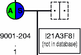
Virtual constructed parent in Madeline. A virtual parent with a randomly-generated ID (male on the right) is constructed when the ID of one parent is missing among a sibship of individuals (not shown). Sibs are assumed to be full sibs.
Note: Lack of one parent usually indicates that a data set has not yet been thoroughly examined for errors or missing data. Unlike other programs, Madeline tolerates certain types of missingness and errors. This enhances the program's utility as a proofing tool. However, in the end you still have to fix your errors ;-).
The default value for GenderField is "SEX". The
GenderField can
be either numeric or character. Madeline detects the field type
when the pedigree table is opened. Madeline defines two symbolic constants for gender:
#female which has a value of 1#male which has a value of 0
The GenderStatus[]
array is used to map external gender codes to Madeline's internal gender constants, #male
and #female, as described above under
Interpretation of Core Data.
Only terminal individuals without offspring may retain a gender attribute
of #missing. During pedigree reconstruction, if Madeline detects any father or
mother with a missing gender attribute, the program will automatically change the
gender of the individual in memory to be consistent with the reconstruction, and will
warn the user of the change (example below). The database file on disk will not be changed.
Madeline will also automatically correct the gender attribute of mislabeled individuals in memory, for example, of a male listed as a mother, or of a female listed as a father (example below), to the extent that these changes still result in logical consistency. Madeline always warns the user of these types of data errors. Again, the data file on disk will not be changed; that is the user's responsibility.
M>open "family.mfh"
...
ConnectIndividual(): Gender in database is incomplete:
Gender of G-10-162's mother, G-10-159, changed from MISSING to FEMALE
ConnectIndividual(): Gender in database is incorrect:
Gender of G-15-012's father, G-15-003, changed from FEMALE to MALE
13 WARNINGS, 11 SEVERE WARNINGS M>
Inconsistencies in Gender. During pedigree reconstruction, Madeline automatically corrects inconsistencies in gender in the data set (as long as such changes do not violate the logical consistency of the reconstruction) and warns the user.
Madeline will warn the user and terminate if conflicting and unresolvable gender roles exist for an individual (for example if an individual is listed as both a mother and a father in the data set).
Note: We recommend coding the GenderField as a
character field using conventional codes such as "M" and "F", or "male"
and "female".
Not only does this enhance human interpretability of the raw data files, but also enhances Madeline's ability to
automatically identify columns when the recognize command is used.
Numerically-coded fields, such as those in Linkage/Genehunter files,
generally cause unecessary confusion and introduce a greater potential for errors.
The MZTwinField should remain blank (or use a single dot) for non-twins, and should
contain a single-letter identifier for each twin pair or group of monozygotic siblings. For example, "A" can
be used to designate the first twin pair in a family, "B" the second pair, and so on.
Since version 0.90 of the program, the MZTwinField has been
considered an optional core field.
The optional DZTwinField, used to show dizygotic twins on pedigree drawings,
should be coded in the same manner to designate dizygotic twins.
The AffectionStatusField
may be either character or numeric. Madeline defines
two symbolic constants for describing the affection status of sampled individuals:
#unaffected which has a value of 0#affected which has a value of 1
Madeline provides the AffectionStatus[] associative array
for mapping affection status codes.
Note:
Coding the AffectionStatusField as a character
field using mnemonic codes is recommended to enhance interpretability of the data in the absence of
additional metadata. Numeric fields tend to cause confusion and may increase the potential for
human error.
The optional DeathStatusField may be either character
or numeric. The default value of DeathStatusField is "DECEASED".
Madeline defines the constants #alive, with a value of 0,
and #dead,
with a value of 1.
The DeathStatus[]
associative array contains a set of defaults for mapping the
DeathStatusField. This is shown below:
M> M>?DeathStatusField "DECEASED" M>?#alive 0 M>?#dead 1 M>list DeathStatus DeathStatus has 4 elements: DeathStatus[0]=0 DeathStatus[1]=1 DeathStatus["N"]=0 DeathStatus["Y"]=1 M>
The DeathStatusField, DeathStatus array, and #alive and #dead constants.
Note:
Coding the DeathStatusField as a character
field using mnemonic codes is recommended to enhance interpretability of the data in the absence of additional meta data.
Consider how coding a column using "L" for "living" and "D" for "deceased" is more meaningful than
using "1" for "living" and "0" for deceased
-- especially when you realize that Madeline's default encoding is exactly the opposite, with
"1" being "deceased" and
"0" being "living"!
The optional ProbandField must be numeric. Madeline assumes that the probands
or index cases will be coded using a value of 1, and all other individuals
with a value of 0.
Some output formats, such as Genehunter, have the option of including liability class
information. The LiabilityClassField may be numeric or character.
Madeline does not interpret the values in this field, but simply passes the values on directly. This means that if a program like
Genehunter requires a numeric encoding of liability classes, you must insure that the source
data are encoded numerically in a conformant manner.
The DateOfBirthField and
DateOfDeathField are optional core
date fields.
When present, Madeline performs checks to insure that dates in these fields are
reasonable, and looks for twins based on date of birth who have not been
designated as such in the MZTwinField or DZTwinField.
Genotype "G" data are character fields that contain allelic marker data
separated by the forward slash "/" character. The allele labels themselves
must be numeric, non-alphabetic labels, e.g. "1/2" or "141/142".
The names of genotype fields should be the capitalized names of the markers themselves.
This allows Madeline to automatically place the genotype fields into map order
whenever a map database for the markers is loaded using the
load command.
Make sure that marker names in the map table are capitalized to correspond
with the required capitalization of field names.
When a database is opened, Madeline automatically estimates allele frequencies for all genotype fields using gene counting ignoring family relationships. Allele frequencies are estimated from all records in a database.
Allele frequencies calculated from one pedigree table may be saved out
using the save command. A table of allele
frequency information can subsequently be read into Madeline using the
read command. The format of the allele
frequencies table is nearly identical to the format used by Mendel v. 4.1.
You need only modify the header at the top of an allele frequency table to
conform with the Mendel program convention.
Phenotype "P" fields are any remaining fields that are not core "C"
or genotype "G" fields.
Phenotype fields may be character, numeric, or date fields,
and are assumed to contain categorical or continuous phenotype information.
Because date fields cannot be written to output from the
write command,
date fields are the only type of phenotype field not flagged for output
when a pedigree table is opened.
For some types of output, it may be necessary to designate certain phenotype fields as
representing covariates. Madeline therefore maintains a separate covariate or
"V" field category which is a subset of the "P" category.
Covariate fields are automatically recognized as phenotype
fields when writing any format that does not distinguish between phenotype and
covariate fields. "P" fields can be marked as "V" fields using
the toggle command.
When a pedigree table is opened, most core "C" fields, all genotype "G" fields,
and all phenotype "P" fields (except date fields), are flagged,
or toggled on, for output by default. Madeline indicates which fields
in a database are toggled for output by placing the letter "o" after the
category indicator "C","G", or "P" (example below).
A number after the "o" indicates the order in which fields will
appear in pedigree drawings and in output from the write command.
Fields may be manually reordered using the set field order command.
M>list fields
1.FAMID Co__1 20.D20S482 Go__6 39.D20S96 Go_25
2.STUDYID Co__2 21.D20S849 Go__7 40.D20S119 Go_26
3.SEX Co__3 22.D20S905 Go__8 41.D20S481 Go_27
4.FATHER Co__4 23.D20S846 Go__9 42.D20S836 Go_28
5.MOTHER Co__5 24.D20S892 Go_10 43.D20S888 Go_29
6.TWIN Co__6 25.D20S115 Go_11 44.D20S886 Go_30
7.AFFECTED Co__7+ 26.D20S851 Go_12 45.D20S197 Go_31
8.BMI Po__1 27.D20S917 Go_13 46.D20S178N Go_32
9.INS_FAST Po__2 28.D20S894 Go_14 47.D20S866 Go_33
10.INS_2H Po__3 29.D20S189 Go_15 48.D20S196 Go_34
11.BW_REAL Po__4 30.D20S898 Go_16 49.D20S857 Go_35
12.GLU_FAST Po__5 31.D20S114 Go_17 50.D20S480 Go_36
13.GLU_2H Po__6 32.D20S912 Go_18 51.D20S211 Go_37
14.GAD_DUP Po__7 33.D20S477 Go_19 52.D20S840 Go_38
15.D20S103 Go__1 34.D20S874 Go_20 53.D20S120 Go_39
16.D20S117 Go__2 35.D20S195 Go_21 54.D20S100 Go_40
17.D20S906 Go__3 36.D20S909 Go_22 55.D20S102 Go_41
18.D20S193 Go__4 37.D20S107 Go_23 56.D20S171 Go_42
19.D20S889 Go__5 38.D20S170 Go_24 57.D20S173 Go_43
M>
Fields Categorization and Ordering in Madeline. Core "C" fields
are detected by name. Genotype "G" are detected by scanning the data:
all remaining fields are assumed to be phenotype "P" fields. Fields
are ordered for output respectively within the three groups, "C",
"G", and "P".
The plus "+"
sign after AFFECTED indicates that Madeline has detected this field as
the AffectionStatusField: categorical levels of this field
will be used to color icon symbols on pedigree drawings.
A field listing is shown when a pedigree table is first opened
or at any other time using the list fields
command.
The order of genotype fields is automatically set to map order when
a marker map database is loaded using the load command.
Load can be issued either before (the preferred method) or after an
open command. Genotype fields whose names
match the names of markers in the map database will be set to the map order.
Fields toggled on for output are displayed in pedigree drawings
created with the draw command.
When a write command is executed, the set of core "C" fields required by the
specific format being produced will generally be output regardless of the on/off
output flag status. For example, Madeline will output the GenderField even if
you toggle it off because it is required for almost all output formats.
This behavior is required to insure proper file construction. Genotype "Go"
fields toggled for output will be written, along with phenotype "Po"
(and possibly covariate "Vo") fields toggled for output if
the analysis format supports phenotype fields. Some analysis programs, such as
Genehunter and Siblink, do not use phenotype data beyond affection status
(which is a core field).
Fields may be toggled on or off for output using the
toggle command.
Madeline makes use of marker map information to:
Go" fields for output.
The load command is used to load a table containing
genetic maps for one or more chromosomes. A genetic map table may contain only one map for each
chromosome. At a minimum, the map table must have columns specifying the
chromosome, rank or ordinal position of the marker within the
map for a given chromosome, name of the marker, and the position of the
marker in centiMorgans:
Minimum Required Fields in a Map Table
| Variable For Storing Field Name | Default Value | Description |
|---|---|---|
ChromosomeField
|
"CHROMOSOME"
|
Numeric field storing the chromosome number. |
OrdinalField
|
"ORDINAL"
|
Numeric field storing the ordinal position or rank of the marker on the map for this chromosome. |
MarkerField
|
"MARKERNAME"
|
Character field storing the name of the marker |
PositionField
|
"POSITION"
|
Numeric field storing the map position from the p terminus in centiMorgans. |
Additional columns for sex-specific maps may also be present: see the load
command for details.
A map may be viewed using the list map command:
M>load 'marshfield.map.mfh' Marker maps based on marshfield.map.mfh are now installed. M>list map for chromosome 7 Map Position (Kosambi cM) ----------------------------- Ch Or Marker Name Sex-avg. Female Male -- -- ----------- --------- --------- --------- 7 1 035XB9 0.0000 . . 7 2 GATA24F03 0.0001 . . 7 3 GATA61G06 3.7001 . . 7 4 TATC010 6.4001 . . 7 5 GATA119B03 10.0001 . . 7 6 TATT019 17.3001 . . 7 7 GATA137H02N 22.0001 . . 7 8 GATA41G07 26.0001 . . 7 9 GATA137A12 30.5001 . . 7 10 GGAA3F06 35.0001 . . 7 11 AGAT103 37.7001 . . 7 12 GATA13G11 43.0001 . . 7 13 GATA026 48.8001 . . 7 14 GATA31A10 51.0001 . . 7 15 ATA31F09 55.1001 . . 7 16 TAT028 57.3001 . . 7 17 GATA24D12 63.0001 . . 7 18 GATA4E04 65.8001 . . 7 19 GATA118G10 72.0001 . . 7 20 GATA21D12 77.0001 . . 7 21 GATA73D10N 84.0001 . . 7 22 GATA87D11 88.4001 . . 7 23 GATA3F01 91.0001 . . 7 24 ATA78C09NZ 96.6001 . . 7 25 GATA5D08 102.0001 . . 7 26 GATA23F05 107.0001 . . 7 27 ATAC037 112.9001 . . 7 28 TTTA001 118.1001 . . 7 29 AGAT133 119.1001 . . 7 30 GGAA6D03N 121.0001 . . 7 31 ATA55A05 123.2001 . . 7 32 GATA145G10 127.6001 . . 7 33 GATA43C11 130.0001 . . 7 34 GATA63F08 143.0001 . . 7 35 GATA32C12 143.0002 . . 7 36 GATA104 148.0002 . . 7 37 AGAT049 150.8002 . . 7 38 GATA189C06 156.0002 . . 7 39 TATG002 161.0002 . . 7 40 GATA30D09N 167.0002 . . 7 41 MFD442-GTTT 171.6002 . . M>
Loading and viewing marker maps. A map table is
loaded using the load command. The
list map command is used to print a table
showing marker name, chromosome, mapped order, and position
in centiMorgans.
Madeline produces four types of log files (table below). The first is a
summary file that has a ".log" extension by default and records each command that
was entered and a summary of execution results. The second is a
detail file that has a ".dtl" extension by default. It provides details of command
results, such as which pedigrees and individuals were included or excluded and
why. The third log file is an error log that has a ".err"
extension by default. It records warning and error conditions that occur.
The fourth type of log file, added beginning with version 0.936,
contains a log of the commands that have been executed. This file has a ".cmd"
extension. This file can be edited or used directly as a command script with the
run command.
Four Types of Log Files
| Type of File | Default Name | Purpose |
|---|---|---|
| Summary |
madeline.log
|
Records commands and summaries of execution results. |
| Detail |
madeline.dtl
|
Records details regarding inclusion and exclusion of individuals and pedigrees. |
| Error |
madeline.err
|
Records warning and error conditions. |
| Command |
madeline.cmd
|
Records the commands that have been executed. |
You can change the names of the log files individually or en masse, as shown below:
M>?LogFile "madeline.log" M>LogFile="MyLogFile.log" LogFile has been changed from "madeline.log" to "MyLogFile.log" M>DetailFile="MyDetailLogFile.dtl" DetailFile has been changed from "madeline.dtl" to "MyDetailLogFile.dtl" M>ErrorFile="AreYouKiddingMeIDontMakeMistakes" ErrorFile has been changed from "madeline.err" to "AreYouKiddingMeIDontMakeMistakes" M>AllLogFiles="MySuperDuperAnalysis" All log files now have "MySuperDuperAnalysis" as the base name: LogFile = "MySuperDuperAnalysis.log" DetailFile = "MySuperDuperAnalysis.dtl" ErrorFile = "MySuperDuperAnalysis.err" CommandFile= "MySuperDuperAnalysis.cmd" M>
As warnings or error conditions are detected while executing commands, Madeline's prompt changes interactively to display the number and type of conditions. For example:
1 SYNTAX ERROR 10 WARNINGS M>
... clearly indicates that one syntax error and ten warnings have occurred. The program tracks warnings and errors in four categories:
A syntax error refers to an error in typing a command on the command line or in a batch file. A warning indicates a manageable data condition, such as having only one instead of both parents listed. A severe warning indicates a more severe condition or logical inconsistency such as having a male listed as the mother of an individual. Madeline will try to manage this type of situation, for example by changing the sex of the "male" mother to "female". Such a change does not guarantee that the situation is remedied, much less correct. Later in the same table, the "male" mother may turn out to be listed as the "father" of another child! This would raise a fatal error condition and termination of the program because there is no way to rectify such inconsistent information. The warning and error conditions may be reviewed in the error log.
When a pedigree table is opened, Madeline reconstructs pedigrees based on the
core data fields. Individuals with both parents missing are founders. Individuals
with one or both parents specified are non-founders. Ideally, non-founder individuals
should always have both parents specified. In reality, this doesn't always happen.
In cases where one parental ID is
present and the other is missing, Madeline creates a random ID for the missing parent. Random IDs are always
eight characters in length and begin and end with an exclamation point (e.g.,
"!EW12M5!", "!G79ER5!", etc.). When a set of siblings all
share one parent but are missing an identifier for the other parent, Madeline makes
the assumption that all of the sibs are full sibs.
After reconstructing pedigrees, Madeline classifies individuals into the following categories:
Classes of Individuals in Madeline
| Category | Description |
|---|---|
| In Database: | |
| Attached | Individuals in the database who have parents and/or offspring. |
| Childless Spouses |
Married individuals in the database who do
not have children and who are not otherwise
attached to a pedigree.
Note bene:Currently Madeline can only detect marriages without offspring when FUSION IDs are employed. |
| Unattached | Individuals in the database who remain unconnected. These may be singleton controls, or erroneously disconnected individuals. |
| Not In Database: | |
| Not In Database | Parents without records in the database who are inserted by Madeline. The identifiers for these parents are known from the records of their children. |
The distribution of individuals by category is summarized in a table printed by the program:
M> open "test/test.data.mfh"
.
.
.
----------------------------- --------- --------- ---------
Pedigrees and Individuals Included Excluded Total
----------------------------- --------- --------- ---------
Pedigrees ................... 590 0 590
Individuals ................. 3,317 0 3,317
+ In database .............. 2,178 0 2,178
| + Attached .............. 2,164 0 2,164
| + Childless spouses ..... 14 0 14
| + Unattached ............ 0 0 0
+ Not in database .......... 1,139 0 1,139
M>
Summary table of pedigree count and distribution of individuals by category in Madeline. After a database is opened and pedigrees reconstructed, Madeline displays a table showing the number of pedigrees and distribution of individuals by category.
Attached individuals are individuals in the database who have either parents, or offspring, or both. Unattached individuals are in the database, but remain unconnected because they dont have parents or offspring. A legitimate class of unattached individuals is a set of unrelated singleton controls. The appearance of other unattached individuals is often due to data coding errors in the identifiers.
Madeline provides _IsUnattached, _ChildlessSpouse, and _IsInDatabase
as references which return boolean status information regarding
the categorization of an individual. These references can
be easily used in queries to find out about the categorization of individuals:
M>view for _IsUnattached
N00444 in L0049 (rec. no. 104) * unattached *
M00005 in L1006 (rec. no. 921) * unattached *
2 individuals in 2 pedigrees matched as follows:
Individuals .............. 2
+ In database ........... 2
| + Attached ........... 0
| + Childless spouses .. 0
| + Unattached ......... 2
+ Not in database ....... 0
M>
References returning boolean status information about individuals, such as _IsUnattached, can be easily incorporated into queries in Madeline.
Before writing a file in a specific format using the write command,
Madeline determines
which individuals in a pedigree have data that can be used in an analysis of that pedigree. Madeline
does this by examining the phenotype "Po" and genotype "Go" fields toggled on
for output. Madeline uses this information when deciding which individuals are required in output. This is
described in more detail in Data Evaluation and Management.
After the file has been written, Madeline displays a summary table showing the distribution of included and excluded pedigrees and individuals by category:
M>write to "test/test.ped" in genehunter format
.
.
.
----------------------------- --------- --------- ---------
Pedigrees and Individuals Included Excluded Total
----------------------------- --------- --------- ---------
Pedigrees ................... 574 16 590
Individuals ................. 3,247 70 3,317
+ In database .............. 2,140 38 2,178
| + Attached .............. 2,140 24 2,164
| | + With data .......... 2,139 15 2,154
| | + Without data ....... 1 9 10
| | + Marked for exclusion 0 0 0
| + Childless spouses ..... 0 14 14
| + Unattached ............ 0 0 0
+ Not in database .......... 1,107 32 1,139
M>
Summary table after a write command in Madeline.
Madeline displays a summary table showing the distribution of included and excluded pedigrees and
individuals by category. Attached individuals (in bold) are sub-categorized
based on whether they have data or not, or have been marked for exclusion by the user.
When present, Madeline relies on information contained in the MZTwinField,
DZTwinField, and DateOfBirthField to evaluate monozygotic
and dizygotic twinships. When the optional DateOfBirthField is included,
Madeline verifies that birth dates of twins match. Verification is extended to
dizygotic twins when the optional DZTwinField is also included.
When the DateOfBirthField is included, Madeline looks for twins who are not
marked in the either MZTwinField or DZTwinField (if present).
Apparent twins of opposite sex are categorized as dizygotic twins.
Apparent same-sex twins are assigned to a special twin of unknown type
category. Twins whose type is unknown are shown with a question mark between them in
pedigree drawings.
If Madeline encounters single, unpaired individuals marked as twins in the MZTwinField or
DZTwinField, the program automatically removes the twin flag and informs the user of the
change. The flag is only altered in memory -- the data table itself remains unchanged.
Messages about twinships are recorded in the summary and detail log files.
Madeline automatically detects consanguinity in pedigrees. Messages about consanguinity are recorded in the summary and detail log files. Consanguineous marriages are shown with double lines on pedigree drawings.
There is no limit to the number of spouses that an individual in a pedigree may have. Currently, pedigree drawings can only display up to 10 spouses of a single individual.
Founders are individuals with both parents missing. Original founders are the most ancestral founders who appear at the top of the v-shaped descent trees on pedigree drawings.
Madeline can model pedigrees having multiple original founders. When the
DividedPages flag is on (the default), Madeline's draw
command will draw pedigrees consisting of an ancestral founder with one or more
founding spouses on a single page. Pedigrees consisting of two or
more founding groups will be printed on multiple pages.
Note: Pedigree drawing functionality in version 0.936, while useful, still leaves much to be desired. We hope to improve the drawing facilities greatly in the next release.
Prior to writing output in a specific format, Madeline determines which individuals in
a pedigree have data that can be used for analysis by examining the genotype "Go"
fields and, if appropriate, the phenotype "Po" and covariate "Vo" fields
toggled on for output.
In general, an individual is considered to have genotype data if he is typed for
at least one marker among the set of "Go" fields.
Missingness among phenotype fields "Po" and covariate fields "Vo"
turned "on" for output is not considered when deciding whether to include
individuals for output.
After flagging individuals in a pedigree who have usable data, Madeline decides whether the entire pedigree is usable or not. Madeline's decisions depend on the specific format keyword associated with the write command. For example, using the GenehunterNpl keyword (for a non-parametric analysis) will result in a different set of pedigree exclusions than the genehunter keyword (for a parametric analysis), although there will be overlap in the sets.
Only required individuals in included pedigrees are written to output. Required individuals consist of individuals who:
For example, records for unsampled parents are often required to show relationships
among siblings. Terminal individuals without offspring who do not have data are
excluded from output. Individuals who have been marked for exclusion by the user
using the exclude command will be
included, but without their data, only if they are required to maintain pedigree
structure. Otherwise, they will be excluded.
It is possible to turn off Madeline's data evaluation machinery for most formats in order
to force the inclusion of all pedigrees and individuals in output by issuing the command
set autoexclude off. Modern programs like Merlin,
Mendel, and Allegro are smart enough to trim uninformative
individuals from data sets as required.
Madeline's detail log file records which pedigrees were excluded from output. Below is an example detail log produced after requesting an output file in GenehunterNpl format:
.
.
.
GenehunterPedigreeHasData(): excluding pedigree 0547: contains only a single affected
individual.
GenehunterPedigreeHasData(): excluding pedigree 0557: contains only a single affected
individual.
GenehunterPedigreeHasData(): excluding pedigree 0558: lacks an individual with data.
GenehunterPedigreeHasData(): excluding pedigree 0560: contains only a single affected
individual.
GenehunterPedigreeHasData(): excluding pedigree 0572: contains only a single affected
individual.
GenehunterPedigreeHasData(): excluding pedigree 0583: contains only a single affected
individual.
GenehunterPedigreeHasData(): excluding pedigree 0587: contains only a single affected
individual.
.
.
.
Excerpt from a Madeline detail log file produced after requesting output in GenehunterNpl format. Madeline's detail log file records which pedigrees were excluded from output and why.
In addition, a draw command executed after a
write command will automatically produce
annotated pedigree drawings showing which individuals:
An example is shown below. In this example, the user marked individuals with a body
mass index (BMI) greater than or equal to 35 for exclusion using the
exclude command and then requested an output file in
GenehunterNpl format.
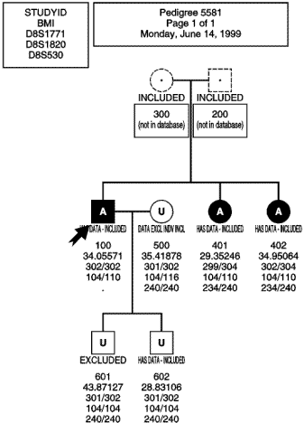
Annotated pedigree drawing produced by draw after an exclude for bmi>=35
followed by a write command.
Madeline dummied-in the two founding parents, "200" and
"300", who are indicated by dashed lines. They were included ("INCLUDED") in output.
Two individuals, "500" and "601", were marked for exclusion by the user. The terminal
individual, "601" with a bmi of 43.8, was not included in the Genehunter output ("EXCLUDED"), but "500" was
retained with data excluded in order to preserve pedigree structure
("DATA EXCL INDV INCL"). The remaining individuals are all
annotated as having genotype data and were included in output ("HAS DATA - INCLUDED").
Affected individuals are shaded and labeled with "A", while unaffected individuals are
unshaded and labeled with "U".
Madeline provides powerful mechanisms for querying and subsetting records in pedigree
tables. General database management systems match query criteria one record at a time.
In contrast, Madeline's query engine recognizes that individuals are connected in
a network of relationships that begins with each individual's parents, mates, and offspring.
Madeline provides references that begin with the underscore
character, "_", for referring to the records of related
individuals within a single query statement. For example:
M>// Query for individuals born to very young mothers: M>view for _mother.age-_self.age<=17 ...
You can also reference aggregate or summary information related to an entire sibship, such as the mean sibship value of a variable, as easily as you can reference values related to single individuals. These two mechanisms -- referencing related individuals and referencing sibship aggregate data -- make it easy to get answers to many questions in Madeline that would be quite tedious to obtain in a general database management system. Refer to Table 4.5. Individual Attributes and Table 4.8. Aggregate Functions for complete lists and numerous query examples.
Note: We are exploring ways in which we might expand Madeline's set of aggregate data functions. The next version might include the ability to calculate pedigree-wide or affecteds-only calculations.
Madeline allows the user to look at meta information about an individual and his or her
relatives using references or attributes.
References are a subset of keywords which begin with an underscore
character,"_", to distinguish them from similarly-named variables
or fields in databases. There are two types of references:
_NumberOfOffspring_father
Madeline provides references to many items of internal information about an individual, such
as the number of offspring (_NumberOfOffspring) and number of mates (_NumberOfMates)
an individual has, and total number of individuals in the individual's pedigree (_NumberInPedigree):
M>go 384 M>? _id "N00562" M>? _NumberOfMates 2 M>? _NumberOfOffspring 2 M>? _NumberInPedigree 13
Table 4.5 lists all references to internal information.
Madeline also maintains references which point to relatives of an individual.
The references to mates, _mate[], and offspring, _offspring[],
are treated as arrays. Alternate references such as _spouse for _mate[1]
and _FirstChild for _offspring[1], are also provided for convenience:
M>? _spouse._id
"N00564"
M>? _mate[1]._id Equivalent to _spouse._id
"N00564"
M>? _mate[2]._id
"N00563"
References can be chained using the dot operator, ".",
in order to access information related to more
distant relatives. For example, a paternal grandmother
may be referenced using _father._mother.
Convenience references such as _PaternalGrandmother
are also provided:
M>? _father._mother._NumberOfOffspring 2 M>? _PaternalGrandmother.caff_broad "I" M>? _PaternalGrandmother._id "N00569"
A complete list of references to relatives is provided in Table 4.5.
In addition to references to individual information and relatives, Madeline provides aggregate functions that allow one to look at aggregate or summary information -- such as means and standard deviations -- of the offspring:
M>go 391 M>? _self._id "N00569" M>? _NumberOfOffspring How many offspring? 2 M>? _FirstChild.sex Gender of first child? "F" M>? _SecondChild.sex Gender of second child? "M" M>? _OffspringCountTrue( sex="M" ) How many offspring are male? 1 M>? _OffspringCountTrue( caffected="A" ) How many offspring are affected? 2 M>? _OffspringMean( age_dx ) Mean age of diagnosis? 39.5 M>show _Offspring[1].bmi Body mass index of first child 31.1327 M>show _Offspring[2].bmi Body mass index of second child? 32.7896 M>show _OffspringMean(bmi) Mean BMI? 31.9612 M>show _OffspringStdDev(bmi) Standard deviation of BMI? 1.17156 M>
Aggregate Functions In Madeline. Aggregate functions allow one to look at summary information such as means and standard deviations of attribute data of the offspring of individuals.
All aggregate functions take as an argument an expression which evaluates to a numeric result. Table 6.2 lists the aggregate functions available in Madeline.
The view command retrieves a subset of records that match
query criteria. The exclude
command allows the user to mark a subset of records for exclusion from output.
The unexclude command performs the opposite function
-- unmarking a subset of records previously marked for
exclusion. The draw command
can also be invoked with a query expression in order to draw a
subset of pedigrees. Example usage is shown below:
M>view for _noffspring>=3 and _omean(bmi)>=50 2113-100 in 2113 (rec. no. 32) 2113-500 in 2113 (rec. no. 35) 2 individuals in 1 pedigree matched as follows: Individuals .............. 2 + In database ........... 2 | + Attached ........... 2 | + Childless spouses .. 0 | + Unattached ......... 0 + Not in database ....... 0 M>exclude for _noffspring>=3 and _omean(bmi)>=50 2113-100 has been marked for exclusion 2113-500 has been marked for exclusion 2 individuals in 1 pedigree marked for exclusion as follows: Individuals .............. 2 + In database ........... 2 | + Attached ........... 2 | + Childless spouses .. 0 | + Unattached ......... 0 + Not in database ....... 0 M>draw pedigrees for _noffspring>=3 and _omean(bmi)>=50 1 pedigree in result set calling "gs madeline.ps"
Query and Subsetting Commands. In this example, the
view command is used to identify parents having three offspring whose
mean body mass index is greater than or equal
to 50. The query result set contains one pair who are excluded using exclude.
The draw command is then invoked with the same query expression in order to
draw the relevant pedigree. The command draw pedigree '2113' could also
have been used.
Madeline's draw command produces drawings of
pedigrees using Adobe Postscript
language procedures and document structuring conventions:
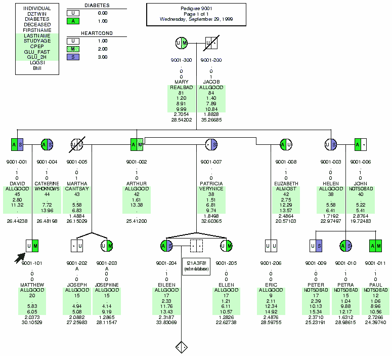
An example pedigree drawn by Madeline. In this example, two categorical variables indicating disease conditions are graphically displayed on the left and right halves of the icons. The status of the first condition, on the left side, is coded using "U" for unaffected and "A" for affected. On the right side, the status of the second condition is coded using "U" for unaffected, "M" for moderate, and "S" for severe. Missing values are indicated by dots, ".". The icon drawn with a dashed line perimeter indicates an individual whose record was not found in the database. No ID was provided in the FatherIDField of the gender-unknown offspring, and so the program has assigned a random ID of !21A3F8! to the missing father. The displayed data were invented to illustrate the drawing capabilities of the program).
Pedigree drawings can display any number of field variables present in a dataset.
The toggle command is used to select fields for inclusion
on a pedigree drawing.Toggle output flags toggles which fields appear as labels
under the icons on a pedigree drawing. The set field order
command is used to order selected fields within their respective categories, "C"
,"P", or "G". On drawings, core "Co" fields always appear first,
followed by phenotype "Po" fields, and finally genotype "Go"
fields.
Toggle icon flags toggles on or off
the set of categorical variables to be
displayed graphically by shading or coloring regions of the male and female icons.
Madeline divides the icon into pie-slice shading regions based on the number of
categorical variables selected. The program does not impose a limit
on the number of categorical variables that can be graphed simultaneously.
The manner in which subtrees are divided across pages, the paper orientation, size, margins,
and color may all be set using various set commands.
The pedigree drawing routines are currently limited. DividedDrawings is set on
by default, which causes subtrees of a pedigree originating with different original founding groups
to be printed on separate pages. In the current version, turning DividedDrawings off
has no affect.
Note: DividedDrawings will cease to exist in the next
version of the program.
Orientation may be set to portrait, landscape,
automatic, or MultiPage. When
orientation is set to automatic or MultiPage,
Madeline decides on the orientation of individual
pedigrees depending upon the width and height of each drawing.
In the event that a drawing would require excessive reduction to fit on a single
page, Madeline will automatically include Postscript
commands to print the drawing in poster-style across several physical pages.
Madeline's Postscript drawing routines are efficient, typically permitting the
construction of hundreds of drawings per second on a modern workstation.
The internal variable PostscriptViewer holds the name of a Postscript
viewing application. The configuration scripts which you run to set up Madeline
will normally detect the presence of a program such as gv on Linux and
similar operating systems. On Windows or Mac OS X, you may need to manually assign
the name of an accessible viewer such as
GhostView or GSView to this variable.
Such an assignment can be made in initial.script.
14.GAD_DUP Po__7 33.D20S477 Go_19 52.D20S840 Go_38 15.D20S103 Go__1 34.D20S874 Go_20 53.D20S120 Go_39 16.D20S117 Go__2 35.D20S195 Go_21 54.D20S100 Go_40 17.D20S906 Go__3 36.D20S909 Go_22 55.D20S102 Go_41 18.D20S193 Go__4 37.D20S107 Go_23 56.D20S171 Go_42 19.D20S889 Go__5 38.D20S170 Go_24 57.D20S173 Go_43 M>toggle output flags for 1,3-6,20-57 M>PostscriptViewer="gv" M>draw pedigrees for bmi>=45 Drawing pedigree 0009, 0009-300's subtree (page 1 of 1) ... Drawing pedigree 0086, 0086-300's subtree (page 1 of 1) ... Drawing pedigree 0213, 0213+300's subtree (page 1 of 1) ... Drawing pedigree 0235, 0235-300's subtree (page 1 of 1) ... Drawing pedigree 0305, 0305-300's subtree (page 1 of 1) ... Drawing pedigree 0322, 0322-300's subtree (page 1 of 1) ... Drawing pedigree 0547, 0547-300's subtree (page 1 of 1) ... Drawing pedigree 0572, 0572-300's subtree (page 1 of 1) ... Drawing pedigree 0808, 0808+300's subtree (page 1 of 1) ... Drawing pedigree 1082, 1082-300's subtree (page 1 of 1) ... Drawing pedigree C161, C161+500's subtree (page 1 of 1) ... 11 pedigrees in result set. Calling "gv madeline.pedigree.ps" ...
Drawing pedigrees in Madeline. Toggle output flags specifies
which fields will appear on the pedigree drawings. Draw pedigrees for ...
specifies a subset of pedigrees that match the query criteria. Madeline calls the
Postscript viewing application named in PostscriptViewer
(gv in this case).
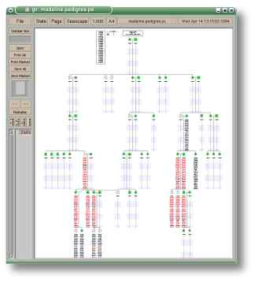
The Postscript viewer gv displaying a pedigree drawing created by Madeline.
The write command is used to produce locus, pedigree,
and control or parameter files for analysis. Keywords like Mendel and
GenehunterNpl are used to specify the analysis file format.
For most formats which require a control or parameter file, a single write command
suffices to produce both the pedigree and control file. In these cases, the control
file often contains the required locus information.
For some other formats, the
command write locus file ... is used to produce the locus file separately, while
write pedigree ... is used to create the pedigree file.
Section 3. Write Formats, documents what is required for
every supported format.
This section describes Madeline's commands. Commands are presented in alphabetical order. A heading shows the name of each command. Below the heading, the syntax for the command is given. Note the following conventions:
Table 3.1. Command syntax conventions used in this document.
| Symbol | Description |
|---|---|
| [ ] |
Square brackets indicate optional items in the syntax.
For example, draw pedigree[s] means that
draw pedigree and draw pedigrees are
both valid.
|
| | |
A bar indicates that either the option preceding or
following the bar is valid. For example,
centimeters | cm
indicates that either centimeters or its abbreviation
cm, can be used.
|
A typical command syntax chart is shown below:
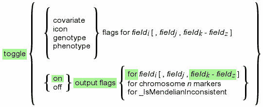
A typical command syntax chart
The syntax charts shows you how to construct a command with valid options. For example, piecing together the options highlighted in green above leads one to command constructs such as the following:
M>toggle on output flags for 12-15
A description follows after the syntax. At least one example of command usage is provided.
Commands with multiple usage patterns may be broken down into multiple sub-sections.
banner
Displays the program banner. Also see: hello,
and status.
M>banner
______________________________________________________________________________
______________________________________________________________________________
__ __ _ ______ _______ _ _ __ _ _______
| \ / | / \ | ___ \ | _____| | | | | | \ | | | _____|
| \/ | / ^ \ | | \ \ | |___ | | | | | \ | | | |___
| |\ /| | / /_\ \ | | | | | ___| | | | | | |\ \| | | ___|
| | \/ | | / ___ \ | |___/ / | |_____ | |______ | | | | \ | | |_____
|_| |_| /__/ \__\ |_______/ |_______| |________| |_| |_| \__| |_______|
______________________________________________________________________________
______________________________________________________________________________
Version 0.936
Written by Edward H. Trager
<ehtrager@umich.edu>
COPYRIGHT © 2004
THE REGENTS OF THE UNIVERSITY OF MICHIGAN
PORTIONS COPYRIGHT 1995 EDWARD H. TRAGER
ALL RIGHTS RESERVED
Madeline comes with ABSOLUTELY NO WARRANTY. This is free software and
you are welcome to redistribute it under certain conditions. For details,
type "license"
M>
check inheritance
Checks for simple Mendelian inheritance inconsistencies among autosomal markers within nuclear families. Madeline detects the following types of errors:
At the nuclear family level, Madeline's algorithm detects the same inconsistencies as Level 1 and Level 2 of Jeff O'Connell's PedCheck program.
When AutoCheckInheritance is
set on (the default),
Madeline automatically runs check inheritance
whenever a new pedigree table is opened using open. Any inheritance
inconsistencies detected are reported as INHERITANCE INCONSISTENCIES in the error log
(madeline.err by default).
When AutoCheckInheritance is
set off, inheritance
checking does not occur until you manually execute the command. In this case, inconsistencies are
reported in the general log (madeline.log by default) and are
not listed in the error log at all.
A draw pedigrees command executed after
check inheritance produces pedigree drawings
in which inconsistent markers are flagged in red on color drawings and in bold text
on black and white drawings (see figure below). To view only pedigrees with Mendelian
inconsistencies, use the command, draw pedigrees for _IsMendelianInconsistent.
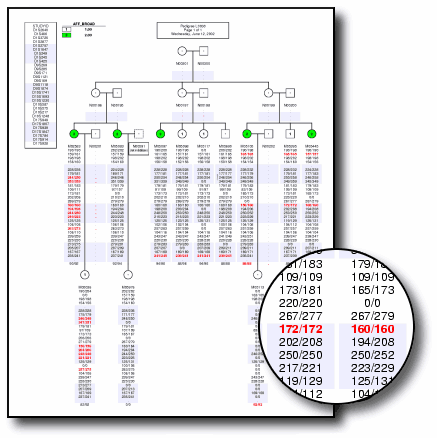
The command check inheritance followed by
draw pedigrees produces drawings highlighting
mendelian inheritance inconsistencies in red (bold text
on black and white drawings).
Programs such as PedCheck and Merlin have additional levels of error analysis that Madeline does not. Madeline examines each nuclear family and marker in isolation and cannot detect errors that require a wider view of the data. Also, Madeline does not currently handle the case of X-linked markers. Use Madeline as a rapid and convenient tool for detecting many of the possible errors that may be present in your data. After resolving errors that can be detected by Madeline, use PedCheck, MERLIN, or another program to be sure that all errors have been eliminated. Gonçalo Abecasis, the author of Merlin, provides a good example of how much LOD scores can be influenced by even a few problematic genotypes in your data.
Note: The next version of Madeline will have a way of annotating X-linked markers and will check Mendelian inheritance among X-linked markers correctly.
clear exclusions
Clears exclusion flags from all individuals previously marked for exclusion using
the exclude command.
To clear exclusion flags from only a subset of individuals,
use the unexclude command.
See: exclude,
unexclude.
M>exclude for bmi>=35 213 individuals in 162 pedigrees marked for exclusion as follows: Individuals .............. 213 + In database ........... 213 | + Attached ........... 212 | + Childless spouses .. 1 | + Unattached ......... 0 + Not in database ....... 0 M>clear exclusions M>
compose “InputFile” [ to “OutputFile” ]
The compose command converts a table in which each record contains the alleles of a
single marker for a single individual to a Madeline pedigree table which contains a
single record for each individual, marker names as column headings, and genotypes as
field data. This command is designed for converting the output from genotyping machine
software (such as ABI Genotyper) or from a normalized database storage format into
the pedigree table format required by Madeline.
A typical input file looks like this:
FAMID INDIVIDUAL MARKERNAME ALLELE1 ALLELE2 IGNORED 0001 0001-100 d20s100 112 114 G323 0001 0001-100 d20s898 120 122 G364 0001 0001-100 d20s129 98 100 G311 0002 0002-100 d20s100 116 116 G112 0002 0002-100 d20s898 115 118 G918 0002 0002-100 d20s129 94 96 G454 . . . . . . . . . . . . . . . . . .
Before running compose,
be sure to specify the names of the three required key fields
(FamilyIDField,
IndividualIDField, and
MapMarkerField)
and the two allele fields (Allele1Field
and Allele2Field). The input table may contain
additional fields, but only FamilyIDField,
IndividualIDField, and the marker fields will appear
in the output. For example, as shown above,
the "IGNORED" field of the input table does not appear in output.
If an output file name is not provided, Madeline creates an output file with a ".trp" extension for the Mbase flat file output and a ".tfh" extension for the binary Mbase header if a .mfh file already exists.
A typical command session appears below:
M>FamilyIDField = "FAMID" M>IndividualIDField = "INDIVIDUAL" M>MapMarkerField = "MARKERNAME" M>Allele1Field = "ALLELE1" M>Allele2Field = "ALLELE2" M>compose "marker.mfh" to "genotypes.data" Composing "marker.mfh" to "genotypes.data" Composed file created. M>
Output looks like this:
FAMID INDIVIDUAL D20S100 D20S898 D20S129 0001 0001-100 112/114 120/122 98/100 0002 0002-100 116/116 115/118 94/96 . . . . . . . . . . . . . . .
Core family structure information fields (gender, parental IDs, twin status) or other
phenotype or genotype data can be added to the composed genotype table using the
merge command.
Note:
The "compose" command was
called "transpose" in previous versions of
the program. The name was changed to complement the decompose command name.
| convert |
|
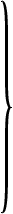 |
Convert certain types of files into the flat-file format that Madeline can use directly. The various versions of this command are described below.
The first form of the convert command allows you to convert a comma-, space-, tab- or other-character
delimited file to a space-delimited,
column-aligned Madeline file that can be read by the recognize command.
The keywords comma, space or tab
can be used to specify comma-, space-, or tab-delimited files, respectively.
Alternatively, you can specify another character delimiter within single or double quotes. If you specify more than one character within quotes, only the first character will be recognized.
Specifying an output file with the keyword to is optional. If an output file is not specified,
Madeline will create an output file having the same name as the input file, but with a ".mod"
(i.e., modified) extension at the end. See:
recognize.
M>convert "*" delimited file "mydata.stars" to "mydata.dat"
Converting "mydata.stars" to "mydata.dat"
3547 lines were written.
M>
Converts a genetic map file produced by Crimap into a Madeline-formatted map file. Conversion of both sex-averaged and sex-specific maps is supported.
Specifying an output file with the keyword to is optional. If an output file is not specified,
Madeline uses the name of the input file with ".map" appended to the end
as the name of the output file.
Converts a genetic map file produced by the Marshfield Center for Medical Genetics' online
Build Your Own Map
web service. Most web browsers provide a Save As or Save Frame As menu option.
Simply save the file returned to your web browser
in the native HTML format (be sure to save the specific frame containing your map!). Convert ignores
the HTML markup in the file while looking for the embedded genetic map.
Madeline converts both the sex-averaged and sex-specific maps produced by this online resource.
Note: When converting a map of Chromosome X markers, be sure to manually change the "Chromosome X" to "Chromosome 23" in the header of the Marshfield file so that Madeline can correctly assign a numeric chromosome number in the converted file.
Specifying an output file with the keyword to is optional. If an output file is not specified,
Madeline uses the name of the input file with ".map" appended to the end
as the name of the output file.
Converts a Simwalk2
parametric or non-parametric results file to Madeline-formatted (1)map and (2)results
tables which can be used by the graph load and graph open commands, respectively,
for plotting the results.
See: graph.
Converts files in the Weber Lab format from the Marshfield clinic into Madeline-formatted pedigree tables. Weber Lab files
are in a composed format. If you need to decompose files so that data from Marshfield can be stored in
normalized database tables,
see decompose.
| decompose | 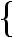 |
madeline
weber |
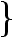 |
file “InputFile” [ to “OutputFile” ] |
Decompose composed tables so that the marker data can be efficiently stored in normalized form in a database.
Decompose a Madeline-formatted pedigree table.
Note: This version of the command is not yet supported in version 0.936 of the program.
The Weber Lab format is used in Dr. Weber's lab at the Marshfield Clinic. Data in these files are in a composed format using tabs as delimiters between columns. Records begin with numeric columns for the family ID, individual ID, father ID, mother ID, and sex. Following these, for each typed marker there are columns for allele 1, allele 2, a confidence value, and finally an indicator value. The indicator value is generally missing unless the genotypes were bad: bad genotypes are usually assigned quality values of zero:
Chromosome 17
MARKER_01 MARKER_02 ...
Family_ID Individual_ID Father_ID Mother_ID Sex Allele_1 Allele_2 Confidence Indicator ...
0098 2592 285 286 2 149 145 0.99 279 279 0.99 ...
0098 6061 285 286 2 161 157 0.99 0 0 0.00 ...
0098 6088 285 286 2 157 149 0.99 0 0 0.00 ...
. . . . . .
. . . . . .
. . . . . .
Madeline captures the allele and confidence columns but ignores the indicator column. The following example uses the file "weber_example.dos_file" which is included in the examples subdirectory of the software distribution:
M>decompose weber file 'weber_example.dos_file'
Decomposing input file "weber_example.dos_file"
to "weber_example.dos_file.dcmp"
This file appears to contain genotype data for 5 markers on chromosome 17
File written.
M>
The decomposed output is tab-delimited to facilitate importation into a database system:
FAMID C STUDYID C MOTHER C FATHER C SEX X MARKERNAME C ALLELE1 N ALLELE2 N CONFIDENCE N INDICATOR C 0098 02592 00286 00285 F MARKER_01 145 149 0.99 0098 02592 00286 00285 F MARKER_02 279 279 0.99 0098 02592 00286 00285 F MARKER_03 208 208 0.99 0098 02592 00286 00285 F MARKER_04 106 122 0.99 0098 02592 00286 00285 F MARKER_05 159 159 0.99 0098 06061 00286 00285 F MARKER_01 157 161 0.99 0098 06061 00286 00285 F MARKER_02 0 0 0.00 0098 06061 00286 00285 F MARKER_03 196 200 0.99 0098 06061 00286 00285 F MARKER_04 101 104 0.99 . . .
If you need to convert decomposed tables into a composed format for use in Madeline, see compose.
| draw pegigree[s] |
“FamilyIdi” [ , “FamilyIdj” , “FamilyIdk” - “FamilyIdz” ]
for Expressionlogical |
Draws pedigrees to the file named in
PedigreeDrawingFile. The output file typically contains multiple drawings.
The resulting drawings are displayed using the Postscript viewer named in
PostscriptViewer. On Linux, this is
often Gv.
Specify one or more pedigree (family) identifiers (IDs) separated by commas, or an alphabetically increasing range of pedigrees IDs with a dash. Be sure to enclose pedigree IDs in quotes:
M>draw pedigrees "F0001", "F0003", "F0005" - "F0017"
Drawing pedigree F0001 ...
Printing drawing scaled to 0.91.
Drawing pedigree F0003 ...
Printing drawing scaled to 0.94.
Drawing pedigree F0005 ...
Printing virtual portrait drawing scaled to 1.02 on
4 physical pages wide by 2 physical pages tall.
(You may not be able to view entire drawing in Postscript viewing application).
Physical page print order index:
[5][6][7][8]
[1][2][3][4]
...
Calling viewer "gv madeline.pedigree.ps" ...
M>
A subset of pedigrees in which one or more individuals in each pedigree
matches a query expression may be drawn using the syntax,
draw pedigrees for ExpressionLogical:
M>draw pedigrees for _IsMendelianInconsistent
Drawing pedigree F0129 ...
Printing drawing scaled to 0.92.
Drawing pedigree F0177 ...
Printing drawing scaled to 0.86.
...
Calling viewer "gv madeline.pedigree.ps" ...
M>
Orientation, paper size, margins, and color versus black-and-white printing may be set using
set commands. In version 0.936, the left-to-right sort order of siblings
within sibships and multiple spouses connected to a single spouse may be explicitely
set using the sort command. A typical command session and a
typical drawing are shown below:
M>// Load a marker map: M>load "mydata.map.mfh" M>// Open a data table (with CAFF_BROAD as the affection status indicator): M>AffectionStatusField="CAFF_BROAD" M>open "mydata.ped.mfh" M>// Toggle off columns that we don't need or want to show: M>toggle output flags off for FAMID,SEX,FATHER,MOTHER,AGE_LAST_EXAM M>// Toggle off markers for chromosomes that we don't want to show: M>toggle output flags off for chromosome 1 markers M>toggle output flags off for chromosome 5 markers M>toggle output flags off for chromosome 12 markers M>// Add the restricted affection category, CAFF_RESTR, to the icon display: M>toggle icon flag for CAFF_RESTR M>// We are going to use a black and white printer (color defaults to "on"): M>set color off M>// Set margins to 2 cm on all edges (default is 1 cm): M>set PaperMargin to 2 M>// Force all drawings to print in Landscape (default is Automatic): M>set orientation to landscape M>// Change the name of the output file: M>PedigreeDrawingFile="MyCompletePedigreeSet.ps" M>// Draw all pedigrees: M>draw pedigrees for #true ... calling "gv MyCompletePedigreeSet.ps" ... ... M>
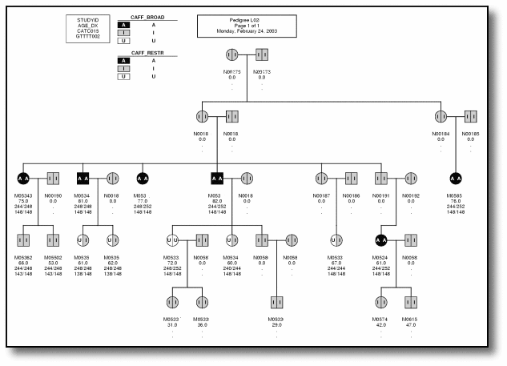
Typical output produced by Madeline's draw command.
In this example, a set color off command preceded the
draw command in order to produce black and white output
suitable for printing.
Madeline v. 0.936 can draw most single- and multiple-founder pedigrees. When a pedigree has more than one founding ancestral group, subtrees of the pedigree originating from different founding ancestral groups are printed on separate pages. A founding ancestral group consists of an ultimate founder and his or her one to many spouses. Currently, there is no option for printing complex pedigrees of this sort on a single page. This limitation will be remedied in the next version of the program.
The options for orientation are landscape, portrait, and automatic.
When orientation is set to portrait
or landscape, pedigree drawings are scaled to fit the dimensions of the
physical page. The scaling factor required to reduce large pedigrees to
small pages may result in loss of legibility (or new corrective lenses!) --in these
cases automatic is preferred.
When automatic is selected, Madeline chooses the best orientation based
on the dimensions of the virtual drawing. If rescaling
to fit a single physical page is likely to result in reduced legibility,
the program automatically divides the drawing for printing across two or
more physical pages (poster mode). Madeline automatically selects the number and orientation of
physical pages that requires the least amount of rescaling.
Madeline produces a schematic index for assembling the individual pages after printing in poster mode.
The program may use up to 5 pages across and 5 pages down, or a total of not more than
25 pages, for printing a drawing in automatic poster mode. Normally only 2 to 4 pages
are required for large drawings. Pages overlap by exactly the number of centimeters specified
in PaperMargin.
Due to the way that Madeline's Postscript routines manage the splitting of a large drawing for printing across multiple physical pages in poster mode, Postscript viewing applications like gv, Ghostview, or GSView will generally only display the last section, or the viewer may appear to cycle through the individual pages of a split drawing without pausing. This limitation does not impair the correct printing of such drawings on a Postscript printer.
Up to ten mates of a single individual may be drawn. At the time of this writing, the drawing routines are being extensively revised to provide better support for drawing consanguinous loops and other complicated pedigree structures not handled well by the current version of the program.
Edit or view a file using the editor specified in the editor
variable. This allows you to edit or view files without having to leave Madeline. You
can use either a console-based editor like vi (or Vim),
or an X-windows editor like Edith.
M>editor="vi" M>edit "map.data" CHROMOSOME N ORDINAL N MARKERNAME C POSITION N THETA N DISTANCE N POSITION_F N THETA_F N DISTANCE_F N POSITION_M N THETA_M N DISTANCE_M N 23 1 DXS1060 15.12 0.02169 2.17 7.66 0.04359 4.37 22.77 0.00000 0.00 23 2 DXS8051 17.29 0.04874 4.89 12.03 0.09878 10.01 22.77 0.00000 0.00 23 3 DXS987 22.18 0.05389 5.41 22.04 0.10769 10.94 22.77 0.00000 0.00 23 4 DXS1226 27.59 0.05922 5.95 32.98 0.11775 12.00 22.77 0.00000 0.00 23 5 DXS1214 33.54 0.03783 3.79 44.98 0.07591 7.65 22.77 0.00000 0.00 23 6 DXS8102 37.33 0.00000 0.00 52.63 0.00000 0.00 22.77 0.00000 0.00 23 7 DXS1068 37.33 0.00540 0.54 52.63 0.01080 1.08 22.77 0.00000 0.00 23 8 DXS8015 37.87 0.04329 4.34 53.71 0.08701 8.79 22.77 0.00000 0.00 23 9 DXS993 42.21 0.02638 2.64 62.50 0.05340 5.36 22.77 0.00000 0.00 :wq 1,1 Top M>
exclude [families] for Expressionlogical
Mark individuals for exclusion. If exclude families is
used, all individuals who match the criteria and their spouses and descendants
will be excluded. See: clear,
unexclude
M>exclude for _familyID="0049"
0049-100 has been marked for exclusion
0049-401 has been marked for exclusion
0049-701 has been marked for exclusion
0049-801 has been marked for exclusion
0049-802 has been marked for exclusion
M>
go nrecord
Go to a specified record, nrecord, in a database. Records are
numbered from 0 to n-1 where n is the total number of records in the
table (virtual parents do not contribute to this count, and you cannot go to the (non-existant) record of
a virtual parent).
M>go 197 M>show studyid "0052-100" M>view record ...
Note: This command is slated for significant revision
(Record numbering should start at 1; should support "go to record 787"
and "go to individual "I0245-12"", etc...).
|
goodbye
quit |
Terminate the current Madeline session. Equivalent to the quit command.
See: quit.
M>goodbye
Releasing resources ...
Goodbye!
| graph |
|
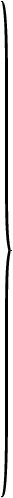 |
All of the commands used to create and annotate a graphical plot begin with the word
graph . All variables associated with
graphs also begin with the word graph. For a complete
list, use the lookup command:
M>lookup "graph"
graph is a command.
GraphAnnotations is an associative array. It accepts character string keys and maps them to character string values.
GraphDrawingFile is an internal variable. Its current value is "madeline.graph.ps".
GraphPositionField is an internal variable. Its current value is "POSITION".
GraphScoreField is an internal variable. Its current value is "SCORE".
GraphTitle is an internal variable. Its current value is "Multipoint Analysis".
GraphXAxisLabel is an internal variable. Its current value is "Map Position (cM)".
GraphXAxisMajorTick is an internal variable. Its current value is 0.000.
GraphXAxisMaximum is an internal variable. Its current value is 0.000.
GraphXAxisMinimum is an internal variable. Its current value is 0.000.
GraphXAxisMinorTick is an internal variable. Its current value is 0.000.
GraphYAxisLabel is an internal variable. Its current value is "LOD Score".
GraphYAxisMajorTick is an internal variable. Its current value is 0.000.
GraphYAxisMaximum is an internal variable. Its current value is 0.000.
GraphYAxisMinimum is an internal variable. Its current value is 0.000.
GraphYAxisMinorTick is an internal variable. Its current value is 0.000.
M>
The various graph commands are described below.
Loads a marker map for annotating a graph.
A Logarithm of Odds (LOD) plot provides more information to the viewer when labels
showing the location of genetic markers are included on the plot. Madeline makes it
trivially easy to include such labels on a plot. All you need to do is to
load a marker map.
Normally, you will have already prepared a marker map in Madeline format
for use in the analysis itself. The graph load
command is identical to the load
command. Once a marker map has been loaded, Madeline will automatically include marker
labels on graphs:
M>graph load "chr17.map.mfh"
Marker maps based on chr17.map.mfh are now installed.
Opens a Madeline-formatted results file for plotting. Opening a results table automatically sets reasonable defaults for the x- and y-axis minima, maxima, and tick intervals:
M>graph open "chr17.results.mfh"
Low=-50.00 High=218.78 Range=268.78 Magnitude=1
Stt=-50.00 End =220.00 NewRange=270.00
TickBasis=10.00
...
M>
Analysis results must be placed into a table containing at least a
POSITION and a SCORE column. Other columns may also be
present.
The name of the POSITION column is controlled by the
value of GraphPositionField. The name
of the SCORE column is controlled by
GraphScoreField. Of course, the easiest
thing to do is to comply with Madeline's defaults and use "POSITION" and
"SCORE" as the names of the respective columns in your results table. The
results table is prepared using the recognize
command. Once Madeline has recognized an ASCII results table, you are ready to
plot the data:
M>graph plot 'chr17.multipoint.mfh'
Graph printed to "madeline.graph.ps"
Calling external viewer using the command "gv madeline.graph.ps" ...
Here is the resulting plot:
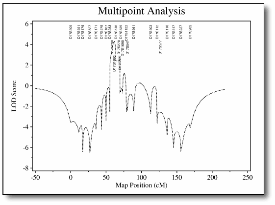
Default LOD plot generated by graph load and graph plot with no additional options.
convert
command for converting analysis results automatically. A typical session will look like this:
M>convert simwalk file 'sw_chr10.out' to 'chr10.results' Converting input file "sw_chr10.out" to Madeline-formatted output files ... ... M>graph load 'chr10.results.map.mfh' Marker maps based on chr10.results.map.mfh are now installed. M>graph open 'chr10.results.mfh' M>graph plot Graph printed to "madeline.graph.ps" Calling external viewer using the command "gv madeline.graph.ps" ... M>
As you can see above, just two commands -- graph load
and graph plot -- are sufficient for
quick visualization of results. However, the plot is not perfect.
The marker labels are overlapping portions of the highest peak, and the default title
is not informative. Below, we will add annotations and perfect the plot.
Here are the remaining commands used to obtain a publication-ready plot:
M>GraphTitle="Chromosome 17 Multipoint Analysis" M>GraphXAxisMaximum=225 M>GraphYAxisMaximum+=9 M>graph add red bar "CANDIDATE-1" from 12.5 to 26.7 centiMorgans, 5.0 lodunits M>graph add green bar "CANDIDATE-2" from 50.3 to 74.1 centiMorgans, 5.0 lodunits M>graph add blue bar "CANDIDATE-3" from 147.2 to 157.41 centiMorgans, 5.0 lodunits M>graph add arrow "This is Great!" at 61.5 centiMorgans, 6.3 lodunits M>graph plot Graph printed to "madeline.graph.ps" Calling external viewer using the command "gv madeline.graph.ps" ...
GraphTitle is the variable that holds
the title. Additional variables maintain the labels for the
X- and Y-axes themselves.
The X- and Y-axis ranges and tick intervals were determined automatically by the program
based on the data when the graph open command was executed.
The X-axis on the default graph stretches out to 250 centiMorgans, making the plot off-center.
Changing GraphXAxisMaximum to 225 (centiMorgans) fixes this.
We then add 9 (lodunits) to GraphYAxisMaximum so that there
will be enough room for the "raining" label markers, plus some to spare for additional bar annotations.
Additional variables maintain the X- and Y-axis minimums and major and minor tick intervals.
We next add three bar annotations to indicate regions occupied by known candidate genes. Note that the program allows us to specify positions directly in centiMorgans (shown) or centimeters (not shown). In the example shown above, a different color is used for each bar. If you do not specify a color, gray is used by default.
Finally, just to demonstrate the capabilities of the program, we add a label with an arrow pointing at the largest peak. Labels without arrows are also possible, as are labels with arrows pointing in any direction. The arrow defaults to the 45-degree angle shown below.
The final plot is shown below:
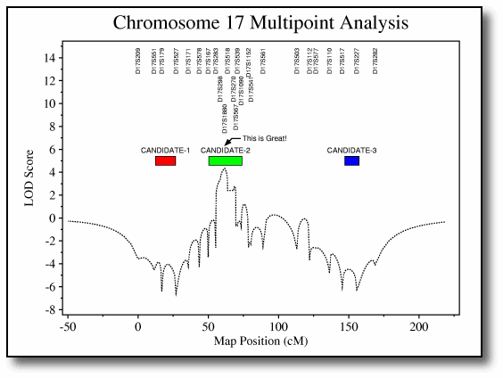
Final annotated plot.
On systems such as Linux, you can use a utility such as ps2pdf to convert a Madeline-generated
Postscript file to PDF. You should also be able to import Madeline-generated Postscript files directly into
programs like Adobe Illustrator.
|
hello
status |
Displays the current setting of Madeline's boolean state flags and other
status information. Identical to the status command.
M>hello
+-----------------------+-----------+-----------------------------------------+
| Variable or State Flag| Setting | Description |
+-----------------------+-----------+-----------------------------------------+
| EXTERNAL PROGRAMS | | |
+-----------------------+-----------+-----------------------------------------+
| Editor | edith | Program used to edit files |
| PostscriptViewer | gv | Program used to view Postscript drawings|
| PrintCommand | lpr | System program used to print files |
| WebBrowser | netscape | Program used to view HTML documentation |
+-----------------------+-----------+-----------------------------------------+
| EVALUATION SETTINGS | | |
+-----------------------+-----------+-----------------------------------------+
| EvaluationInterval | 0.50 cM | Value to write to control file. |
| OffEndDistance | 10.00 cM | Value to write to control file |
+-----------------------+-----------+-----------------------------------------+
| DRAWING SETTINGS | | |
+-----------------------+-----------+-----------------------------------------+
| Color | ON | Draw pedigrees in color |
| ReverseShading | OFF | Black is first icon shade |
| DividedDrawings | ON | Paginate drawings by founding group |
| HighlightRows | ON | Alternately highlight data on drawings |
| LabelCreatedIndividual| ON | Label virtuals created by Madeline |
| Orientation | AUTOMATIC | Automatic based on drawing dimensions |
| PaperMargin | 1.00 cm | Margin (in cm) on all four sides |
| PaperSize | USLETTER | 8.5 x 11.0 inches |
+-----------------------+-----------+-----------------------------------------+
| OTHER SETTINGS | | |
+-----------------------+-----------+-----------------------------------------+
| AutoExclude | ON | Exclude pedigrees automatically |
| AutoCheckInheritance | ON | Check inheritance on OPEN |
| ConsoleHighlights | ON | Use bold/color highlights on console |
| Delimiter | TAB | Delimiter for tables and other output. |
| FusionSupport | OFF | FUSION customizations disabled |
| HaplotypeDisplay | OFF | Display genotypes delimited with "/" |
| Language | American E| Language convention used for date, time |
| MapDetails | OFF | LIST MAP summary display |
| SaveAlleleFrequencies | OFF | Calculate new frequencies on next OPEN |
| Time | | Tuesday, May 6, 2003 |
| Verbosity | VERBOSE | All messages are printed to the console |
+-----------------------+-----------+-----------------------------------------+
M>
Invokes HTML-based help. Madeline will invoke the world
wide web browser named in WebBrowser with the URL
named in WebAddress. The default WebBrowser
is usually "mozilla". The default WebAddress refers to the installed local copy of
the Madeline documentation or, if unavailable, to the current URL of the online documentation.
The quoted string argument to help
is added to the end of the URL as a bookmark reference.
Valid bookmarks include all tokens recognized by the program (i.e., commands, variables,
arrays, symbolic constants ...) as well as topical and section bookmarks such as "contents" and "tutorial".
M>help "contents"
Calling mozilla with "file:///usr/local/share/madeline/docs/madeline.html#contents" ...
(If you don't find what you want in the HTML documentation, try the LOOKUP command).
M>
See Lookup if you need to determine the name or correct spelling
of a command, variable, or other token.
| list |
|
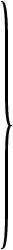 |
Displays current values in a list of items. The list may consist of:
Usage of each form of the command is provided below.
List the fields (columns) in a pedigree table:
M>open "chr8.dbf" . . . M>toggle off output flags for D8S270-GATA101F01 M>list fields 1.FAMID Co__1 10.D8S504 Go__1 19.D8S1757 Go_10 2.STUDYID Co__2 11.D8S550 Go__2 20.D8S270 G 3.SEX Co__3 12.D8S258 Go__3 21.D8S1778 G 4.FATHER Co__4 13.D8S1771 Go__4 22.D8S276 G 5.MOTHER Co__5 14.D8S1820 Go__5 23.GATA101F01 G 6.TWIN Co__6 15.D8S283 Go__6 24.D8S514 Go_11 7.BMI Po__1 16.D8S285 Go__7 25.D8S284 Go_12 8.NAFFECTE Co__7+ 17.D8S260 Go__8 26.D8S534 Go_13 9.STUDYAGE Po__2 18.D8S530 Go__9 27.D8S1836 Go_14 M>
For each field, the following information is displayed:
load and set field order commands.toggle icon flags ...".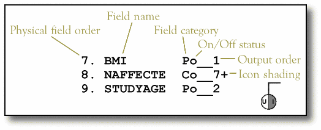
Occasionally you might see an asterisk "*" in field category for a field containing no data. "V" for covariate and "A" for allele are also possible.
Lists genetic maps. By itself, list map lists maps for all chromosomes
which may be present in the map table. Alternatively, specify a chromosome as shown here:
M>load 'm.map.mfh' Marker maps based on m.map.mfh are now installed. M>list map for chromosome 22 Map Position (Kosambi cM) ----------------------------- Ch Or Marker Name Sex-avg. Female Male -- -- ----------- --------- --------- --------- 22 1 GATA198B05N 0.0000 . . 22 2 AGAT120 9.9000 . . 22 3 GGAA10F06 11.6000 . . 22 4 TTA015 13.3000 . . 22 5 ATTT019 13.8000 . . 22 6 AGAT055Z 23.0000 . . 22 7 GATA21F03 27.0000 . . 22 8 GATA6F05 30.4000 . . 22 9 GATA11B12 34.0000 . . 22 10 TCAT006Z 36.0000 . . 22 11 ATA37D06 41.0000 . . 22 12 GTAT005Z 44.2000 . . 22 13 TTAT020 46.1000 . . 22 14 UT7136 51.0000 . . 22 15 SCA10 51.2000 . . 22 16 GATA030 56.2000 . . 22 17 TCTA015 59.4000 . . M>
Information displayed by the list map command is affected by the setting of
MapDetails.
When MapDetails is set on, inter-marker
distances and recombination fractions are also displayed:
M>set MapDetails on ... M>list map for chromosome 22 Sex-averaged Map Female-specific Map Male-specific Map ------------------- ------------------- ------------------- Ch Or Marker Name Kosambi Dist (RF) Kosambi Dist (RF) Kosambi Dist (RF) -- -- ----------- --------- --------- --------- --------- --------- --------- -------------- Chromosome 22 -------------- 22 1 GATA198B05N 0.0000 . . 9.9000 (0.0977) 22 2 AGAT120 9.9000 . . 1.7000 (0.0170) 22 3 GGAA10F06 11.6000 . . 1.7000 (0.0170) ... M>
MapDetails is
off by default.
See the load command for more information about genetic maps.
See the convert command for ways to import genetic maps into Madeline.
Displays a summary table showing the included, excluded, and total number of pedigrees and individuals processed by a preceding command:
M>open "MyData.mfh" ... M>write to "MyMerlinFile" in merlin format ... M>list stats ----------------------------- --------- --------- --------- Pedigrees and Individuals Included Excluded Total ----------------------------- --------- --------- --------- Pedigrees ................... 107 5 112 Individuals ................. 895 21 916 + In database .............. 857 21 878 | + Attached .............. 857 20 877 | | + With data .......... 439 0 439 | | + Without data ....... 418 20 438 | | + Marked for exclusion 0 0 0 | + Childless spouses ..... 0 0 0 | + Unattached ............ 0 1 1 + Not in database .......... 38 0 38
Lists the values in an internal or user array or associative array:
M>// M>// CharacterMissingValue[ ] stores the list of M>// missing value indicators for character fields: M>// M>list CharacterMissingValue CharacterMissingValue has 5 elements: CharacterMissingValue[ 1]="." CharacterMissingValue[ 2]="/" CharacterMissingValue[ 3]="0/0" CharacterMissingValue[ 4]="0/ 0" CharacterMissingValue[ 5]="0/ 0" M>// M>// GenderStatus[ ] is an associative array M>// which maps table values for gender to M>// Madeline's internal gender values: M>// M>list GenderStatus GenderStatus has 4 elements: GenderStatus[1]=0 <-- i.e., #male GenderStatus[2]=1 <-- i.e., #female GenderStatus["F"]=1 GenderStatus["M"]=0 M>
See the Table 4.4. System Arrays table for a list of arrays and associative arrays.
List allele frequencies for one or more genetic markers in a pedigree table. When a pedigree table is opened,
Madeline automatically calculates allele frequencies using gene counting. Gene counting does not take familial
relationships into account. Gene counting is sufficient if your data contains large numbers of pedigrees
and/or controls. For smaller data sets containing fewer pedigrees, you may want to run a program such as
Mendel to calculate allele frequencies
taking familial relationships into account. You can then use the read command
to read the results from Mendel or another program into Madeline. An alternative approach is to calculate allele
frequencies in Madeline using gene counting on a large data set containing many pedigrees or controls, save the
results using the save command, open a smaller data set for analysis, and use
the read command to read in the previously-saved allele frequencies.
You can specify markers either by name or by field ordinal. The example below uses the
"chr12.corrected.data" data set included in the examples
subdirectory of the software distribution:
M>open 'chr12.corrected.data.mfh' Calculating allele frequencies for 11. MARKER01... Calculating allele frequencies for 12. MARKER02... Calculating allele frequencies for 13. MARKER03... Calculating allele frequencies for 14. MARKER04... Calculating allele frequencies for 15. MARKER05... ... 1.FAMID Co__1 6.MZTWIN Co__6 11.MARKER01 Go__1 2.STUDYID Co__2 7.DZTWIN Co__7 12.MARKER02 Go__2 3.SEX Co__3 8.AFFECTED_B Po__1 13.MARKER03 Go__3 4.FATHER Co__4 9.AFFECTED_R Po__2 14.MARKER04 Go__4 5.MOTHER Co__5 10.AGE_DX Po__3 15.MARKER05 Go__5 ... M>list allele frequencies for 11, MARKER02, 13-15 11. MARKER01: 302 5/ 94 0.0532 304 2/ 94 0.0213 307 1/ 94 0.0106 308 9/ 94 0.0957 312 8/ 94 0.0851 316 9/ 94 0.0957 320 58/ 94 0.6170 324 2/ 94 0.0213 12. MARKER02: 263 1/ 82 0.0122 271 16/ 82 0.1951 275 16/ 82 0.1951 279 41/ 82 0.5000 283 8/ 82 0.0976 13. MARKER03: 236 39/ 98 0.3980 240 3/ 98 0.0306 244 5/ 98 0.0510 248 25/ 98 0.2551 252 4/ 98 0.0408 256 22/ 98 0.2245 14. MARKER04: 137 11/ 96 0.1146 141 5/ 96 0.0521 145 21/ 96 0.2188 149 13/ 96 0.1354 153 22/ 96 0.2292 157 21/ 96 0.2188 161 3/ 96 0.0312 15. MARKER05: 101 3/ 82 0.0366 104 24/ 82 0.2927 105 6/ 82 0.0732 106 7/ 82 0.0854 107 1/ 82 0.0122 110 1/ 82 0.0122 116 11/ 82 0.1341 119 18/ 82 0.2195 122 9/ 82 0.1098 125 2/ 82 0.0244
List the files in the current working directory. File owner permissions, size in bytes, and name are displayed.
If you need more comprehensive functionality, see the system command.
M>list files
----- ------------- -------------------------
Perms Size in Bytes File Name
----- ------------- -------------------------
rw- 5,624 all.map
rw- 1,400 all.map.mfh
rw- 2,843 chr10.map
rw- 2,946 chr20.map
rw- 21,263 complete.data
rw- 3,800 complete.data.mfh
rwx 2,935,774 madeline-0.936
rw- 0 madeline.cmd
rw- 5,707 madeline.dtl
rw- 0 madeline.err
rw- 5,777 madeline.log
rw- 55,506 madeline.pedigree.ps
rw- 12,414 test.dtl
rw- 477 test.err
rw- 9,355 test.log
rw- 296 test2.cmd
rw- 21,263 青光眼.data
rw- 3,800 青光眼.data.mfh
M>
Load a genetic map table. A map table may contain genetic maps for one or more chromosomes. The table must contain fields for chromosome number, marker name, ordinal position of the marker in the map for the chromosome, and sex-averaged distance in centiMorgans (see table below). The table may also optionally contain fields for sex-specific maps.
| Name of Variable Storing Field Name |
Default Value | Description |
| MapChromosomeField | "CHROMOSOME" | Chromosome |
| MapOrdinalField | "ORDINAL" | Ordinal position (rank) of the marker on the map for this chromosome |
| MapMarkerField | "MARKERNAME" | Name of the marker |
| MapPositionField | "POSITION" | Map position (usually from p terminus) in centiMorgans |
| Optional Fields | ||
| MapFemalePositionField | "POSITION_F" | Map position in centiMorgans for female-specific maps. |
| MapMalePositionField | "POSITION_M" | Map position in centiMorgans for male-specific maps. |
| MapPositionBPField | "POSITIONBP" |
Physical map position in base pairs.
Note:
This field is defined but not currently used by Madeline.
|
The map database can contain maps for any number of chromosomes, but may contain only
one map for each chromosome. As soon as Madeline detects that a map database has been
installed, genotype fields in an open pedigree table will automatically be placed in
map order. When possible, execute load prior to any
open command. When a pedigree table is subsequently
opened, genotype fields will then automatically appear in map order from the outset.
M>load "amd.map.mfh"
Marker maps based on amd.map.mfh are now installed.
M>list map for chromosome 23
Map Position (Kosambi cM)
-----------------------------
Ch Or Marker Name Sex-avg. Female Male
-- -- ----------- --------- --------- ---------
22 1 GATA198B05N 0.0000 . .
22 2 AGAT120 9.9000 . .
22 3 GGAA10F06 11.6000 . .
22 4 TTA015 13.3000 . .
22 5 ATTT019 13.8000 . .
22 6 AGAT055Z 23.0000 . .
22 7 GATA21F03 27.0000 . .
22 8 GATA6F05 30.4000 . .
22 9 GATA11B12 34.0000 . .
22 10 TCAT006Z 36.0000 . .
22 11 ATA37D06 41.0000 . .
22 12 GTAT005Z 44.2000 . .
22 13 TTAT020 46.1000 . .
22 14 UT7136 51.0000 . .
22 15 SCA10 51.2000 . .
22 16 GATA030 56.2000 . .
22 17 TCTA015 59.4000 . .
M>
Note:
Most genetic maps created by Crimap and online resources can be quickly converted to the
Madeline table format using the convert command.
Lookup a command, variable, array name, symbolic constant, or keyword by supplying a quoted string
containing at least the first few letters. Lookup searches the token tree for matches:
M>lookup "_p" _PaternalGrandfather is a pointer belonging to an individual that points to another individual. _PaternalGrandmother is a pointer belonging to an individual that points to another individual. _PercentGenotyped is a variable belonging to an individual in a pedigree. _PercentMendelianInconsistent is a variable belonging to an individual in a pedigree. M>lookup "#" #affected is a numeric constant. It's value is 1. #alive is a numeric constant. It's value is 0. #dead is a numeric constant. It's value is 1. #e is a numeric constant. It's value is 2.71828. #false is a numeric constant. It's value is 0. #female is a numeric constant. It's value is 1. #male is a numeric constant. It's value is 0. #missing is a numeric constant. It's value is 2.22507e-308. #pi is a numeric constant. It's value is 3.14159. #true is a numeric constant. It's value is 1. #unaffected is a numeric constant. It's value is 0. M>lookup "gene" genehunter is a keyword. GenehunterNPL is a keyword. GenehunterQTL is a keyword. generic is a keyword. M>
Also see: help.
| map AssociativeArrayName Key |
as
to |
Value |
Creates a one-to-one association, between a Key and a Value.
The key and value are stored in an associative
array, AssociativeArrayName. The map command is primarily a
syntactical convenience, since Madeline also permits direct assignments to
associative arrays, making the following statements equivalent:
M>map AffectionStatus "AFF" as #affected M>map AffectionStatus "AFF" to #affected M>AffectionStatus["AFF"]=#affected
Depending upon how they are defined and used, associative arrays in Madeline
may accept keys and values of a single type or multiple types. For example, the
AffectionStatus array used to map affection status
codes accepts both numeric and character keys since a data set may use
either numeric or character codes to represent affection status. The values in
AffectionStatus must however be numeric because the program uses numeric codes
internally:
M>// Map a character code for the key - OK: M>map AffectionStatus "DISEASE" as #affected M>// Map a numeric code for the key - OK: M>map AffectionStatus 20 as #affected M>// Map a numeric value (via a symbolic constant here) - OK: M>map AffectionStatus "DISEASE" as #affected M>// Map a character value - Should generate an error: M>map AffectionStatus "DISEASE" as "AFFECTED" MapAssignmentCommand(): The value you specified is a character string value, but this associative array only accepts numeric values. map AffectionStatus "DISEASE" as "AFFECTED" 1 SYNTAX ERROR M>
You can determine the types of keys and values accepted by an associative array using the
lookup command:
M>lookup "AffectionStatus"
AffectionStatus is an associative array. It accepts any keys and maps them to numeric values.
| merge “InputFile1” [ , “InputFile2” , ... “InputFilen” ] [ to “OutputFile” ] [ in |
alpha
physical “UserDefinedFile” |
order ] |
Merges any number of input tables to an output table. All input tables must contain
identically-named FamilyIDField and IndividualIDField names which are used
as the keys for constructing records in the output table.
Output is in Madeline's Mbase format which consists of a rectangulra ASCII or UTF-8 data table
and an associated binary header file. The binary header file usually has the same name as the
data table, but with a .mfh extension.
The to "OutputFile" clause is optional. When present, data are written to the
specified output file and an associated header is created with a .mfh extension.
When absent, Madeline creates a file name based on the name of the first table by adding
a .mrg extension to the end. The associated binary header will have a .mfh extension.
In the event that a .mfh file already exists, Madeline uses an extension of .cfh
instead.
The in alpha | physical | "UserDefinedFile" order clause is also optional.
When absent, the default alpha order is used. When alpha order is used,
fields from all input tables are arranged alphabetically in the output table. When
physical order is specified, fields in the output table are arranged in the same order
that they appear in the source tables starting with the first table. Even though the key index fields
FamilyIDField and IndividualIDField are present in every input table,
they only appear
once in the output table, as you would expect.
As an alternative to
alpha and physical order, you can specify the order of fields precisely by creating
a text file containing the field names in the order you want separated by white space (i.e., spaces
and/or carriage returns). For example, you can create a text file containing the marker fields listed
in genetic map order (along with any other fields from the source tables).
Assuming this file was called "map.order", the clause in "map.order" order would instruct
Madeline to read field order from this file.
When physical or "UserDefinedFile" order are used, make sure that the only
fields duplicated in all source tables are the key index fields, FamilyIDField and
IndividualIDField. Other fields cannot appear multiple times. Be especially careful with
core fields like GenderField, FatherIDField, and MotherIDField which may quite
possibly appear in more than one table. If it is not possible to remove non-index fields that appear
multiple times, simply rename them so that name conflicts do not occur.
When alpha order is used, fields that appear more than once are not a problem
and will appear only once in the output table. The field type, width, and numeric
precision of duplicate fields are based on the first table in which the fields
appear. The data for such fields are also pulled from the first table in which the
fields appear.
As you would expect, tables are merged horizontally or side-by-side. Note that
Madeline also permits you to merge tables vertically, but only in the case where
alpha order is used. For example, if you had two tables containing identical fields
but with one containing one set of individuals in your study, and the other containing
another set of individuals, merge ... in alpha order will permit you to join the two tables
vertically. The restriction that fields be sorted in alphabetic order is necessary so that
Madeline can map individual field data correctly even though it appears that field names are
"duplicated". After a "vertical" merge, one can always do a subsequent merge in which a
preferred field order is specified -- Madeline allows you to "merge" a single table in order
to redefine field order!
Individuals present in some but not all tables will naturally have missing values in the result table for columns that only existed in input tables where those individuals did not appear.
M>// M>// merge uses FamilyIDField and IndividualIDField M>// as the keys for merging: M>// M>FamilyIDField ="FAMID" M>IndividualIDField="INDIVIDUAL" M>merge 't1.dbf','t2.dbf','t3.dbf','t4.dbf','t5.dbf' to 'out.dat' in 'map.order' order Building field and record trees ... Writing 2711 records to "out.dat" 5 databases merged to "out.mfh" in 8.5 seconds M>open 'out.mfh' ...
Merge is part of Madeline's arsenal of commands designed to ease the task
of manipulating flat files. Also see: convert,
rectify, compose,
and decompose.
Open a pedigree table. Madeline currently supports the following table formats:
Note: Of these four formats, we now recommend using only the Madeline native format which is open, non-proprietary, and human-readable and editable in any text editor (in the case of UTF-8 files, any UTF-8 capable text editor: see A Quick Primer On Unicode and Software Internationalization Under Linux and UNIX). The remaining three formats are deprecated and we may not support them at all in future versions of the program.
Madeline's database engine detects file byte-ordering at run time,
permitting database files from PCs to be opened on Unix RISC workstations, and vice-versa.
The user does not need to tell Madeline the file type. Madeline does not make use of
index files associated with data tables, such as the .cdx files used by FoxPro.
To open an ASCII or UTF-8 flat-file table, use recognize to
first create a Madeline binary guide/index file associated with the flat-file table. The
binary guide files normally have a ".mfh" extension
(Madeline file
header). ".mfh" files are platform-specific, but Madeline is
theoretically smart enough to recognize them across platforms.
When Madeline opens a pedigree table, the following events occur:
loaded and contains a map for markers in the database,
the genotype fields are automatically ordered according to the map.AffectionStatusField, DateOfBirthField, or DateOfDeathField
are included.AutoCheckInheritance is set
on (the default), the data are checked for simple Mendelian inheritance errors.M>AffectionStatusField="CAFF_BROAD" M>open "cicada.2002.04.26.data.mfh" 12. CAFF_BROAD has 3 levels. WARNING #0001: SetFieldFlags(): 8. CAFFECTED contains no data! Calculating allele frequencies for 16. D1S245... Calculating allele frequencies for 17. D1S249... Calculating allele frequencies for 18. D1S425... Calculating allele frequencies for 19. D1S466... . . . . . . Pedigree table "cicada.2002.04.26.data.mfh" opened with 878 records NOTE: Dates of birth missing for twins M05224 and M05688 in pedigree L0261. Consanguinity detected between N00562 and N00563 in pedigree L0299. NOTE: Dates of birth missing for twins N00101 and N00103 in pedigree L0329. NOTE: Dates of birth missing for twins M06008 and M06069 in pedigree L0703. NOTE: Dates of birth missing for twins M06297 and M06353 in pedigree L0919. NOTE: Pedigree L1006 has 1 unconnected individual. Pedigrees reconstructed in 0.0000 seconds Checking simple Mendelian inheritance in nuclear families... : ============================================================== Inheritance inconsistency: PEDIGREE MOTHER FATHER MARKER -------------------------- -------- ------ ------ ------ INHERITANCE #0001: L0004 M05758 N00167 D1S425 INHERITANCE #0002: L0035 N00403 N00402 D10S1237 INHERITANCE #0003: L0038 M02583 N00201 D1S245 INHERITANCE #0004: L0038 M02583 N00201 D1S425 INHERITANCE #0005: L0038 M02583 N00201 D9S1118 . . . . . . ============================================================== ================================================ Summary of Mendelian Inheritance Inconsistencies by Marker ================================================ # MARKERNAME NUCLEAR FAMILIES ---- ------------------ ---------------- 16. D1S245 6 17. D1S249 1 18. D1S425 4 19. D1S466 1 . . . . . . 45. D17S949 4 46. D17S1807 4 ------------------------------------------------ Inconsistencies present among 30 of 32 markers. ================================================ 1.FAMID Co__1 17.D1S249 Go__2 33.D10S217 Go_18 2.STUDYID Co__2 18.D1S425 Go__3 34.D10S575 Go_19 3.SEX Co__3 19.D1S466 Go__4 35.D10S587 Go_20 4.FATHER Co__4 20.D1S1647 Go__5 36.D10S1230 Go_21 5.MOTHER Co__5 21.D1S1660 Go__6 37.D10S1237 Go_22 6.MZTWIN Co__6 22.D1S2640 Go__7 38.D10S1248 Go_23 7.DZTWIN Co__7 23.D1S2757 Go__8 39.D10S1693 Go_24 8.AFFECTED Po__1 24.D1S2877 Go__9 40.D10S1741 Go_25 9.CAFFECTED * 25.D1S3725 Go_10 41.D17S784 Go_26 10.AGE Po__2 26.D9S169 Go_11 42.D17S914 Go_27 11.AFF_BROAD Po__3 27.D9S171 Go_12 43.D17S928 Go_28 12.CAFF_BROAD Co__8+ 28.D9S269 Go_13 44.D17S939 Go_29 13.AFF_RESTR Po__4 29.D9S285 Go_14 45.D17S949 Go_30 14.CAFF_RESTR Po__5 30.D9S1118 Go_15 46.D17S1807 Go_31 15.AGE_DX Po__6 31.D9S1121 Go_16 47.D17S1847 Go_32 16.D1S245 Go__1 32.D9S1874 Go_17 ----------------------------- --------- --------- --------- Pedigrees and Individuals Included Excluded Total ----------------------------- --------- --------- --------- Pedigrees ................... 112 0 112 Individuals ................. 916 0 916 + In database .............. 878 0 878 | + Attached .............. 877 0 877 | + Childless spouses ..... 0 0 0 | + Unattached ............ 1 0 1 + Not in database .......... 38 0 38 1 WARNING, 121 INHERITANCE INCONSISTENCIES M>
Specifies that "detail" messages are not shown on the screen. Summary log messages still
appear on the screen, and both detail and summary messages are still written to the
.dtl and .log files, respectively. See:
silent, verbose.
M>quiet
Madeline is now in quiet mode.
M>
|
goodbye
quit |
Terminates the program session. Equivalent to goodbye. See:
goodbye.
M>quit
Releasing resources ...
Goodbye!
Read allele frequencies calculated by an external program or saved during a previous session into Madeline.
When the "from ..." clause is omitted, Madeline attempts to read allele
frequencies from a default file called "madeline.alf.mfh".
When a pedigree table
is opened, the program automatically calculates allele frequencies using gene counting which does not
take familial relationships into account. These allele frequencies can be saved to a table for later use using
the save command.
Gene counting is sufficient for estimating allele frequencies from large data sets containing many pedigrees or unrelated controls. For smaller data sets containing fewer pedigrees, better estimates can be obtained using a program like Mendel which can account for familial relationships in its calculations.
The following fields are required to be present in an allele frequency table:
| Variable | Description | Default value |
| MapMarkerField | Name of the marker field. | "MARKERNAME" |
| AlleleField | Name of the allele field. | "ALLELE" |
| FrequencyField | Name of the allele frequency field. | "FREQUENCY" |
The output from Mendel v. 4.1 is already in a tabular format. You need only change the header to correspond with Madeline requirements:
LOCUS ALLELE ESTIMATED STANDARD NAME NAME FREQUENCY ERROR MARKER01 302 0.0445 0.0308 MARKER01 304 0.0218 0.0216 MARKER01 307 0.0215 0.0213 MARKER01 308 0.1384 0.0549 ...
summary.out result file from Mendel v. 4.1 ...
MARKERNAME C ALLELE N FREQUENCY N STDERR N MARKER01 302 0.0445 0.0308 MARKER01 304 0.0218 0.0216 MARKER01 307 0.0215 0.0213 MARKER01 308 0.1384 0.0549 ...
... and the same file after adding the header that Madeline requires.
Once the header is in the right format, use the recognize command to recognize
the table. You can now read the table. Only the allele frequencies of markers
which are present in the allele frequency table are adjusted: the allele frequencies of other markers which are
not in the allele frequencies table remain unadjusted. Warnings are issued when markers present in the allele
frequencies table are not present in the pedigree table.
Note: Since actual allele counts are not available for allele frequencies read in from external sources, Madeline arbitrarily multiplies the frequencies by 10,000 in order to display allele "counts". Due to rounding error, the counts will sometimes only sum up to 9,999 instead of 10,000. This does not affect locus files or allele frequency tables produced by the program.
Example:
M>open 'chr12.corrected.data.mfh' Calculating allele frequencies for 11. MARKER01... ... M>read allele frequencies from "chr12frequencies.data.mfh" WARNING #0001: Marker "MARKER06" was not found in the pedigree table. ... Allele frequencies have been read from chr12frequencies.data.mfh 4 WARNINGS M>list allele frequencies for marker01, marker02 11. MARKER01: 302 445/ 9999 0.0445 304 218/ 9999 0.0218 307 215/ 9999 0.0215 308 1384/ 9999 0.1384 312 1225/ 9999 0.1225 316 1007/ 9999 0.1007 320 5290/ 9999 0.5291 324 215/ 9999 0.0215 12. MARKER02: 263 221/10000 0.0221 271 2190/10000 0.2190 275 2409/10000 0.2409 279 4734/10000 0.4734 283 446/10000 0.0446 4 WARNINGS M>
Recognize a column-aligned, space-delimited rectangular ASCII or
UTF-8 data file
(i.e., a "flat file") as a database table by creating a binary header file that
contains key information about the number of records in the table, number of columns, column names,
column data types, and other relevant information. A table in the correct format for processing
by recognize will typically
have a header declaring the column names and data types at the top, followed by a rectangular
data grid, as shown in the example below:
FAMID C STUDYID C SEX X FATHER C MOTHER C
MZTWIN C DZTWIN C CAFFECTED C AGEDX N
DXS1010 G DXS1074 G DXS1550
Z0400 Y02221 M Y02225 Y02224 . . A 57 200/200 163/163 146/146
Z0400 Y02222 M Y02225 Y02224 . . A 61 200/200 163/163 146/146
Z0400 Y02223 F . . . . U 0 198/198 151/159 146/148
Z0400 Y02224 F X00018 Y02223 . . U 0 198/200 151/163 146/146
Z0400 Y02225 M . . . . U 0 200/200 165/165 150/150
Z0400 Y02226 F X00018 Y02223 . . U 0 198/200 159/163 146/148
Z0400 Y02227 M Y02225 Y02224 . . U 0 198/198 151/151 146/146
Z0400 Y02228 M X00036 Y02230 . . A 54 200/200 163/163 146/146
Z0400 Y02229 F X00036 Y02230 . . U 0 196/200 163/163 146/146
Z0400 Y02230 F Y02231 X00022 . . U 0 192/200 157/163 146/152
A flat-file table in the correct format typically has a header (blue area with dotted border) declaring column names and data types, followed by a rectangular grid of data.
By default, Madeline adds ".mfh" to the name
of the input file to create the name of the output file. Optionally, you can specify a
name for the binary header file using the "to" clause.
If necessary, a flat file in the appropriate space-delimited column format can usually
be created using Madeline's
rectify
or convert
commands.
When the data file is in the correct form, the program quickly parses the file and creates
an ".mfh" header file:
M>recognize 'z0400.data'
Starting to recognize file "z0400.data" to "z0400.data.mfh" ...
Skipping a total of 13 lines at top.
There are 4 non-empty header lines and 80 data lines.
Data records are 299 bytes long.
The gender field has been identified.
The individual, father, and mother ID fields have been identified.
# . Field Name Start End Length Prec. Space Type
---- ----------- ----- ----- ------ ----- ----- -----
1. FAMID 1 5 5 0 2 C
2. STUDYID 8 13 6 0 9 C
3. SEX 23 23 1 0 1 X
4. FATHER 25 30 6 0 9 C
5. MOTHER 40 45 6 0 9 C
6. MZTWIN 55 55 1 0 1 C
7. DZTWIN 57 57 1 0 1 C
8. CAFFECTED 59 59 1 0 1 C
9. AGE 61 61 1 0 4 N
10. DXS1001 66 72 7 0 2 G
11. DXS1047 75 81 7 0 2 G
12. DXS1055 84 90 7 0 2 G
13. DXS1060 93 99 7 0 2 G
14. DXS1068 102 108 7 0 2 G
15. DXS1073 111 117 7 0 2 G
16. DXS1106 120 126 7 0 2 G
17. DXS1205 129 135 7 0 2 G
18. DXS1214 138 144 7 0 2 G
19. DXS1226 147 153 7 0 2 G
20. DXS1227 156 160 5 0 4 G
21. DXS8015 165 171 7 0 2 G
22. DXS8043 174 180 7 0 2 G
23. DXS8045 183 189 7 0 2 G
24. DXS8051 192 198 7 0 2 G
25. DXS8055 201 207 7 0 2 G
26. DXS8080 210 214 5 0 4 G
27. DXS8083 219 225 7 0 2 G
28. DXS8091 228 232 5 0 4 G
29. DXS8102 237 243 7 0 2 G
30. DXS8106 246 252 7 0 2 G
31. DXS986 255 261 7 0 2 G
32. DXS987 264 270 7 0 2 G
33. DXS990 273 279 7 0 2 G
34. DXS991 282 288 7 0 2 G
35. DXS993 291 297 7 0 2 G
Binary recognition header file ("z0400.data.mfh") written.
This appears to be a PEDIGREE TABLE which can be opened using:
open "z0400.data.mfh"
M>
As illustrated above, the recognize command is
often able to determine what type of data table you have and
will remind you, based on table type, what command to use to open the file.
If recognize finds that the data rows in a table are not of a consistent length
or contain embedded tabs or extra spaces or tabs,
the command will abort as shown below:
FAMID C STUDYID C SEX X FATHER C MOTHER C MZTWIN C DZTWIN C CAFFECTED C AGEDX N DXS1010 G DXS1074 G DXS1550 Z0400 Y02221 M Y02225 Y02224 . . A 57 200/200 163/163 146/146 Z0400 Y02222 M Y02225 Y02224 . . A 61 200/200 163/163 146/146 Z0400 Y02223 F . . . . U 0 198/198 151/159 146/148 Z0400 Y02224 F X00018 Y02223 . . U 0 198/200 151/163 146/146 Z0400 Y02225 M . . . . U 0 200/200 165/165 150/150 Z0400 Y02226 F X00018 Y02223 . . U 0 198/200 159/163 146/148 Z0400 Y02227 M Y02225 Y02224 . . U 0 198/198 151/151 146/146 Z0400 Y02228 M X00036 Y02230 . . A 54 200/200 163/163 146/146 Z0400 Y02229 F X00036 Y02230 . . U 0 196/200 163/163 146/146 Z0400 Y02230 F Y02231 X00022 . . U 0 192/200 157/163 146/152
Same table as above, but with extra embedded tabs or extra spaces or tabs at the ends of lines(blue areas with dotted border) that create a non-rectangular data array will ...
M>recognize 'z0400.data' Starting to recognize file "z0400.data" to "z0400.data.mfh" ... HEADER block spans lines 1 to 3. DATA block spans lines 5 to 40. It appears that the DATA block contains TAB characters. Please examine the file carefully to verify if this is the true problem. If this is the problem, try running the RECTIFY command which will expand tabs to the appropriate number of spaces in most cases. Then rerun RECOGNIZE after correcting all problems. WARNING #0001: AssignRecordTypes(): The file is not in the required format. No ".mfh" or ".run" files were created 1 WARNING M>
... require using rectify, convert, or manual editing, as the program suggests here.
A non-rectangular data grid can be caused by many things. Just a few embedded tabs or extra spaces among the data rows will be enough to give you problems. To avoid such problems, we recommend that you store both phenotype and genotype data in a relational database system and use a scripting language like Perl, PHP, or Python to extract the data into the correct format.
A detailed description of the recognize command and the table format expected by Madeline
is provided below.
In its simplest form, a database table has two parts:
An ASCII or UTF-8 flat file that contains a rectangular array of data with spaces separating aligned columns can be considered a simple form of a database table:
0001 0001-100 F 0001-200 0001-300 23.45 14.2 141/142 0001 0001-200 M . . . 10.2 138/141 0001 0001-300 F . . 78.21 15.2 140/142 . . . . . . . . . . . . . . . . . . . . . . . . . . . . . . . .
A simple flat file data table.
The biggest problem with this table "format" is that it has no header containing "meta data". Meta data are simply "data about the data". The omission of meta data to tell the user what each column represents is a serious obstacle and, without this information, the file is in fact completely useless to an uninformed user.
A secondary problem, perhaps of more concern to a computer program than to a person, is that the file lacks meta data declaring 1) the data type of each column (character, numeric, date, etc.), 2) the total number of columns, or 3) the total number of rows (records) in the table.
Madeline tackles the "meta data" problem by constructing a separate binary header file
which is used to open the table indirectly. The binary header file is built by the
recognize command and usually has a ".mfh" (i.e., Madeline Flat
file Header) extension. The combination of a ".mfh" binary header
and an ASCII or UTF-8 flat file table is referred to as the Madeline Database, or Mbase
file format.
Madeline can determine much of the key meta data just by examining the flat file table
itself. From a table with unlabeled columns (such as illustrated above), the
recognize command can:
Always determine:
Almost always determine:
...and often determine:
The ability to determine the gender, individual, father, and mother ID fields provides a fruitful start to deciphering a file with unmarked columns. This is most useful when you receive unlabeled data files from your absent-minded colleagues and collaborators!
Still, there is no way for Madeline to know what all columns in an unmarked file represent. In the absence of additional information, Madeline provides default names based on whether the columns contain character, numeric, or date data. This is usually not what you want, unless you are in a great hurry!
The solution is to provide column names and
column data types at the top of the flat file before the first record.
When present, the recognize command reads this "header" before
parsing the rectangular data array. Madeline requires this header in many cases.
The only information that you need to provide in the header at the top of a flat file data table is:
The following set of single-letter options is permitted for designating column type:
The column type designation is technically optional. If not provided, Madeline will make a determination. The program determines data type by looking at what characters are present in a column and how they are formatted. For example, if a "/" slash occurs in a column, the column cannot be numeric. additional processing is used to decide if the column contains dates or genotypes, or something else. If you are uncertain whether Madeline will make the correct determination, then provide column types. Providing column type designators also assists your human colleagues and collaborators.
A column type designator must follow immediately after a column name by at least one space. Column names must themselves be separated from one another by one or more spaces. Other than this, column names and types can appear on any number of lines. The only other requirement is that the lines of the header must be shorter in length than those of the records. This rule is maintained so that the program knows which lines are header lines and which are data records.
The four core fields FamilyIDField, IndividualIDField, FatherIDField, and MotherIDField must always be treated as "C" character fields, even when the identifiers themselves consist of only numbers. This is necessary requirement of the algorithms the program uses to sort and store individuals. So, at a minimum, it may be necessary to supply the field types of these core fields. Here is an example:
FAMID C INDIVIDUAL GENDER C FATHER MOTHER STUDYAGE GLUCOSE D20S119 0001 0001-100 F 0001-200 0001-300 23.45 14.2 141/142 0001 0001-200 M . . . 10.2 138/141 0001 0001-300 F . . 78.21 15.2 140/142 . . . . . . . . . . . . . . . . . . . . . . . . . . . . . . . .
A data table with a header declaring column names. Only a few columns (FAMID,GENDER) are labeled with type designators.
In the example above, the INDIVIDUAL, FATHER, and MOTHER
columns (corresponding to the IndividualIDField, FatherIDField, and MotherIDField,
respectively) contain dash characters,
so the program will automatically interpret them as "C" character fields without
being marked so (the program can see that they are not date fields).
However, FAMID consists entirely of digits and would be interpreted as "N"
numeric were it not designated "C". The above example is now ready to
be processed by the recognize command.
There are a couple of special situations to pay attention to when constructing the flat file header.
First, only a gender field containing character string labels such as "M" and "F" or "male" and "female" should be designated as being of type "X". You can also designate such a gender field with the more generic "C" (as was done above), or not designate any type at all, and Madeline will figure it out for you.
Secondly, Madeline provides the opportunity to specify a special column type of "A" for allele fields. Allele fields are present in file formats such as the Genehunter/Linkage format where two contiguous space-delimited columns contain the allele labels that taken together represent the genotype for one marker. Since two columns are present, in the flat file header you must show the same column name twice -- once for the first allele column, and once for the second allele. The column names should be the marker names. For example:
FAMID C STUDYID C FATHER C MOTHER C SEX X NAFFECTE N D20S100 A D20S100 A D20S200 A D20S200 A 0001 0001-200 M . 0 0 0 0 0001 0001-300 F . 0 0 0 0 0001 0001-100 0001-200 0001-300 M 1 1 1 4 5 0001 0001-401 0001-200 0001-300 F 0 1 2 5 5 0001 0001-402 0001-200 0001-300 F 0 2 2 4 4 0001 0001-403 0001-200 0001-300 F 1 1 2 4 4 0001 0001-404 0001-200 0001-300 M 0 2 2 4 4 0001 0001-408 0001-200 0001-300 M 1 2 2 4 5 0001 0001-409 0001-200 0001-300 M 1 1 1 4 4 . . . . . . . . . . . . . . . . . . . . . . . . . . . . . .
A data table in Genehunter/Linkage format has paired allele columns. Notice the repeated marker name labels in the header that has been added for Madeline.
Errors will result with unpaired "A" fields, so be careful! Madeline will combine the paired allele fields into genotype fields, as shown below. The column "Start" and "End" values confirm that Madeline has merged pairs of columns:
M>recognize "flat.test"
Recognizing file "flat.test" to "flat.test.mfh" ...
Skipping a total of 11 lines at top.
There are 10 non-empty header lines and 27 data lines.
Data records are 45 bytes long.
The gender field has been identified.
# . Field Name Start End Length Prec. Space Type
---- ----------- ----- ----- ------ ----- ----- -----
1. FAMID 1 4 4 0 1 C
2. STUDYID 6 13 8 0 1 C
3. FATHER 15 22 8 0 1 C
4. MOTHER 24 31 8 0 1 C
5. SEX 33 33 1 0 1 X
6. NAFFECTE 35 35 1 0 2 N
7. D20S100 38 40 3 0 2 G
8. D20S200 43 45 3 0 0 G
Madeline recognition header written.
Type 'open "flat.test.mfh" ' to open the database.
M>
Recognizing a table with paired allele columns (see above).
After recognizing a file, the ".mfh" file is used as the parameter to the
open, load,
compose, merge, or
read command.
In order for Madeline to use a flat file table, the data block must contain aligned columns that are delimited by space characters. Extra space characters are used to pad column widths so that the columns always line up. In addition, the data block must be truly rectangular, which means that all data lines must be of equal length.
Embedded tab characters are usually replaced by space characters when a file is viewed in an editor or word processor on screen, leading to the false impression of a rectangular array with even line lengths, when in fact lines are actually of varying byte-lengths (A single tab contributes only one byte to the row length even though up to eight spaces may be used for displaying the tab's "space" on screen). Extra (but invisible!) space or tab characters after the last column in a table can also result in varying line lengths.
The rectify command (1) replaces all tab characters embedded in the data block
with the appropriate number of space characters, and (2) trims or pads lines so that all records
become equal in length.
Although most file editors default to a tab interval of eight character-columns, this is often a
user-settable variable and some users will choose to use narrower tab intervals.
Rectify contains an algorithm for determining what tab interval --from one to
eight spaces--
must have been used in order to create the impression of aligned columns when the file was
originally hand-edited in a file editor on screen.
Sometimes a set of different tab intervals would all result in aligned columns in an editor. Madeline chooses the smallest tab expansion interval that will produce aligned columns in the result file. Pathological cases (i.e., corrupted files) may exist that the algorithm cannot handle: manual review of the results is recommended.
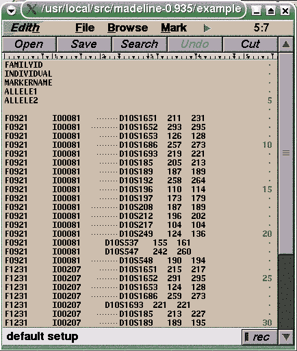
The tabset_3_7 demonstration file in the
examples/DataSetsContainingTabsAndUnevenLines subdirectory of the software
distribution contains a number of tabs between the second and third data columns (shown as
small dots). The data columns appear unaligned because the file was originally edited
with a different (unknown) tab interval.
M>rectify 'tabset_3_7'
Rectifying file "tabset_3_7" to "tabset_3_7.mod" ...
HEADER block spans lines 1 to 5.
DATA block spans lines 7 to 40.
There are 2 equally valid tab expansion solutions:
Tab size = 7
Tab size = 3
Madeline will convert the file using a tab setting of 3 spaces.
Writing header lines to tabset_3_7.mod...
Writing tab-expanded data rows to tabset_3_7.mod...
Rectified file "tabset_3_7.mod" has been written.
M>
The rectify algorithm finds two possible tab
expansion solutions for the "tabset_3_7" file
and chooses the smallest expansion.
FAMILYID INDIVIDUAL MARKERNAME ALLELE1 ALLELE2 F0921 I00081 D10S1651 211 231 F0921 I00081 D10S1652 293 295 F0921 I00081 D10S1653 126 128 F0921 I00081 D10S1686 257 273 F0921 I00081 D10S1693 219 221 F0921 I00081 D10S185 205 213 F0921 I00081 D10S189 187 189 F0921 I00081 D10S192 258 264 F0921 I00081 D10S196 110 114 F0921 I00081 D10S197 173 179 F0921 I00081 D10S208 187 189 F0921 I00081 D10S212 196 202 F0921 I00081 D10S217 104 104 F0921 I00081 D10S249 124 136 F0921 I00081 D10S537 155 161 F0921 I00081 D10S547 242 260 F0921 I00081 D10S548 190 194 F1231 I00207 D10S1651 215 217 F1231 I00207 D10S1652 291 295 F1231 I00207 D10S1653 124 128 F1231 I00207 D10S1686 259 273 F1231 I00207 D10S1693 221 221 F1231 I00207 D10S185 213 227 F1231 I00207 D10S189 189 195 . . . . .
The tabset_3_7 file after rectification.
Load and run a batch file. Batch files can themselves contain nested run
commands. When commands from a batch file are being processed, Madeline displays
the "M-Batch>" prompt in place of the "M>" prompt, and returns to the
"M>" prompt after successful completion of batch commands. Madeline goes into
quiet mode whenever a batch file is invoked with run:
issue verbose after run if you want to return to
verbose mode.
Contents of load.bat:
run task.bat
Contents of task.bat:
quiet open "thursday.dbf" write to "mendel.ped" in mendel format load "geneticmap.dbf" write to "siblink.ped" in siblink format
Here is the interactive session:
M>run "load.bat"
M-Batch> Running batch file "load.bat"... ***
M-Batch> run task.bat
M-Batch> Running batch file "task.bat"... ***
M-Batch> quiet
Madeline is now in quiet mode
M-Batch> open "thursday.dbf"
... ...
M-Batch> write to "mendel.ped" in mendel format
... ...
M-Batch> load "geneticmap.dbf"
Marker maps based geneticmap.dbf are now installed
M-Batch> write to "siblink.ped" in siblink format
... ...
M-Batch>
M-Batch> Finished batch file "task.bat"... ***
M-Batch>
M-Batch> Finished batch file "load.bat"... ***
M>
Batch processing can also be invoked from the command line.
In addition, a script named "initial.script"
can be automatically invoked at program startup.
Save allele frequencies calculated by Madeline using gene counting to a table on disk. If the
"from ..." clause is omitted, a default name of "madeline.alf"
is used. The saved table is in Madeline format and can be read back into the program using the
read command.
A typical operation is to use Madeline to obtain allele frequencies from a large
data file containing many pedigrees, save these frequencies, open up a smaller subset of pedigrees for analysis, and
use the the read command to restore allele frequencies based on the larger
data set.
M>open "full.data.mfh" ... M>save allele frequencies Table of allele frequencies for 5 markers written to "madeline.alf" ... M>open "analysis.subset.data.mfh" ... M>read allele frequencies from "madeline.alf.mfh" Allele frequencies have been read from madeline.alf.mfh M>list allele frequencies for marker03 13. MARKER03: 236 3828/10000 0.3828 240 431/10000 0.0431 244 535/10000 0.0535 248 2400/10000 0.2400 252 647/10000 0.0647 256 2159/10000 0.2159
| set turn |
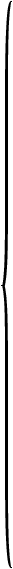 |
|
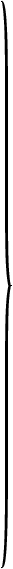 |
The set and turn commands are identical. See
turn for a complete description.
Show the value of a single expression. You can abbreviate show to "?".
The commmand is equivalent to "what is"
but requires less typing.
To display values in any kind of list, including field lists, arrays, and marker maps,
use the list command instead. See list,
what is.
M>show sin(pi/4) 0.707107 M>? DateToJulian({2004.04.22}) 2,453,118 M>? PedigreeDrawingFile "madeline.pedigree.ps" M>
Suppress detail and summary log messages from the screen (messages are still
written to the log files). Identical to silent.
See silent.
Suppress detail and summary log messages from the screen (messages are still
written to the log files). Identical to silence.
See silence.
Sets the sort order for displaying siblings in a sibship and multiple spouses on pedigree drawings. Expression can be any expression that can be evaluated by Madeline. The default sort order is ascending.
M>// M>// show siblings in descending order by date of birth: M>// M>sort on dob descending M>draw pedigree '0535' Drawing page 1 of 1 page for pedigree 0535... M>// M>// show siblings in ascending order by the number of offspring they have: M>// M>sort on _NumberOfOffspring ascending M>draw pedigree '0535' Drawing page 1 of 1 page for pedigree 0535... M>
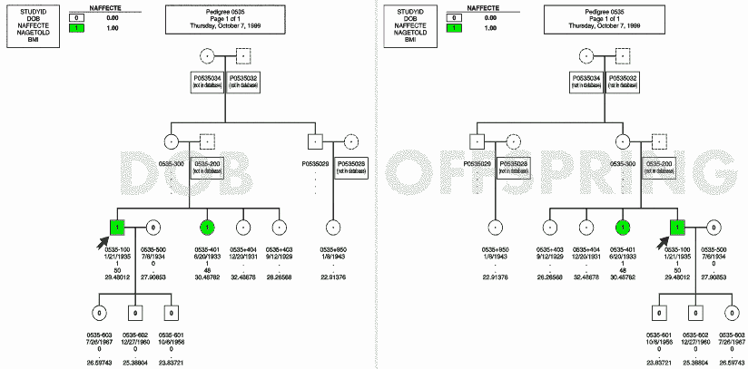
Pedigree drawings created after using the sort command.
The drawing on the left has sibships sorted by date of birth descending.
The drawing on the right has sibships sorted by the number of offspring that
each sib has. Both drawings represent the same pedigree.
For more information on drawing pedigrees, see the draw and
set commands.
Displays the current setting of Madeline's boolean state flags and other
status information. Identical to the hello command.
M>status
+-----------------------+-----------+-----------------------------------------+
| Variable or State Flag| Setting |Description |
+-----------------------+-----------+-----------------------------------------+
| EXTERNAL PROGRAMS | | |
+-----------------------+-----------+-----------------------------------------+
| Editor | edith |Program used to edit files |
| PostscriptViewer | gv |Program used to view Postscript drawings |
| PrintCommand | lpr |System program used to print files |
| WebBrowser | netscape |Program used to view HTML documentation |
+-----------------------+-----------+-----------------------------------------+
| EVALUATION SETTINGS | | |
+-----------------------+-----------+-----------------------------------------+
| EvaluationInterval | 0.50 cM |Value to write to control file. |
| OffEndDistance | 10.00 cM |Value to write to control file |
+-----------------------+-----------+-----------------------------------------+
| DRAWING SETTINGS | | |
+-----------------------+-----------+-----------------------------------------+
| Color | ON |Draw pedigrees in color |
| ReverseShading | OFF |Black is first icon shade |
| DividedDrawings | ON |Paginate drawings by founding group |
| HighlightRows | ON |Alternately highlight data on drawings |
| LabelCreatedIndividual| ON |Label virtuals created by Madeline |
| Orientation | AUTOMATIC |Automatic based on drawing dimensions |
| PaperMargin | 1.00 cm |Margin (in cm) on all four sides |
| PaperSize | USLETTER |8.5 x 11.0 inches |
+-----------------------+-----------+-----------------------------------------+
| OTHER SETTINGS | | |
+-----------------------+-----------+-----------------------------------------+
| AutoExclude | ON |Exclude pedigrees automatically |
| AutoCheckInheritance | ON |Check inheritance on OPEN |
| ConsoleHighlights | ON |Use bold/color highlights on console |
| Delimiter | TAB |Delimiter for tables and other output. |
| FusionSupport | OFF |FUSION customizations disabled |
| HaplotypeDisplay | OFF |Display genotypes delimited with "/" |
| Language | American E|Language convention used for date, time |
| MapDetails | OFF |LIST MAP summary display |
| SaveAlleleFrequencies | OFF |Calculate new frequencies on next OPEN |
| Date | |Friday, April 23, 2004 |
| Verbosity | VERBOSE |All messages are printed to the console |
+-----------------------+-----------+-----------------------------------------+
M>
Transfers a quoted command to the shell for execution by the operating system. This allows you to obtain directory and file information, copy or move files, or run analysis software without having to exit Madeline.
M>system "ls -l test/*.dbf"
-rw-rw-rw-a 8061 Tue Dec 02 14:34:24 1997 chr20dic.dbf
-rw-rw-rw-a 550246 Tue Jan 13 15:08:10 1998 c14.dbf
-rw-rw-rw-a 777954 Tue Dec 02 14:40:18 1997 chr20.dbf
-rw-rw-rw-a1001786 Mon Feb 16 14:53:10 1998 sib20.dbf
-rw-rw-rw-a 369746 Thu Feb 26 11:10:16 1998 draw.dbf
M>
| toggle |
|
Toggle database field category and status flags.
Madeline automatically categorizes fields in a database table as being core "C",
genotype "G", or phenotype "P" fields.
Core "C" fields contain core information used to reconstruct pedigrees
and classify individuals, such as the StudyIDField, GenderField, and
AffectionStatusField.
Genotype "G" fields contain marker information. The names of genotype fields should correspond
with the marker names exactly. Fields that are not "C" or "G" fields are classified as
phenotype "P" fields.
Core fields are determined by matching up field names in the database table with names stored in internal variables. Genotype fields are determined by sampling the data to find character fields that contain numeric labels separated by slash characters. By elimination, remaining fields are classified as phenotype fields.
Certain output formats may require knowing which of the phenotype fields are to be used as covariates.
Hence, there is also a covariate "V" category. By
default, "C", "G" and all "P" fields except date fields are marked for
output with the "o" flag. Excepting core fields which Madeline handles
automatically in most cases, only the fields marked for output with the "o" flag
will be processed and appear in output from write, draw, and
and similar commands.
The most common use of the toggle command is to toggle the output flags
on or off. Occasionally you might need to change the status of a phenotype
"P" field to that of a covariate "V" field. Covariate "V" fields are
still recognized as phenotype "P" fields when writing formats that do
not require covariates.
M>open "/m55/newtest.dbf" ... ... 1.STUDYID Co__1 19.D20S889 Go__4 37.D20S481 Go_22 2.SEX Co__2 20.D20S482 Go__5 38.D20S836 Go_23 3.FATHER Co__3 21.D20S905 Go__6 39.D20S888 Go_24 4.MOTHER Co__4 22.D20S115 Go__7 40.D20S886 Go_25 5.TWIN Co__5 23.D20S851 Go__8 41.D20S197 Go_26 6.FUSION2 Po__1 24.D20S917 Go__9 42.D20S178N Go_27 7.CONTROL Po__2 25.D20S189 Go_10 43.D20S866 Go_28 8.CPEP Po__3 26.D20S898 Go_11 44.D20S196 Go_29 9.GLU_FAST Po__4 27.D20S114 Go_12 45.D20S857 Go_30 10.GLU_2H Po__5 28.D20S912 Go_13 46.D20S480 Go_31 11.STUDYAGE Po__6 29.D20S477 Go_14 47.D20S211 Go_32 12.LOGSI Po__7 30.D20S874 Go_15 48.D20S840 Go_33 13.BMI Po__8 31.D20S195 Go_16 49.D20S120 Go_34 14.TP Po__9 32.D20S909 Go_17 50.D20S100 Go_35 15.NAFFECTE C + 33.D20S107 Go_18 51.D20S102 Go_36 16.D20S103 Go__1 34.D20S170 Go_19 52.D20S171 Go_37 17.D20S117 Go__2 35.D20S96 Go_20 53.D20S173 Go_38 18.D20S906 Go__3 36.D20S119 Go_21 M>toggle output flags for 6-7,glu_fast,glu_2h,12-14 M>toggle covariate flag for studyage M>list fields 1.STUDYID Co__1 19.D20S889 Go__4 37.D20S481 Go_22 2.SEX Co__2 20.D20S482 Go__5 38.D20S836 Go_23 3.FATHER Co__3 21.D20S905 Go__6 39.D20S888 Go_24 4.MOTHER Co__4 22.D20S115 Go__7 40.D20S886 Go_25 5.TWIN Co__5 23.D20S851 Go__8 41.D20S197 Go_26 6.FUSION2 P 24.D20S917 Go__9 42.D20S178N Go_27 7.CONTROL P 25.D20S189 Go_10 43.D20S866 Go_28 8.CPEP Po__1 26.D20S898 Go_11 44.D20S196 Go_29 9.GLU_FAST P 27.D20S114 Go_12 45.D20S857 Go_30 10.GLU_2H P 28.D20S912 Go_13 46.D20S480 Go_31 11.STUDYAGE Vo__2 29.D20S477 Go_14 47.D20S211 Go_32 12.LOGSI P 30.D20S874 Go_15 48.D20S840 Go_33 13.BMI P 31.D20S195 Go_16 49.D20S120 Go_34 14.TP P 32.D20S909 Go_17 50.D20S100 Go_35 15.NAFFECTE C + 33.D20S107 Go_18 51.D20S102 Go_36 16.D20S103 Go__1 34.D20S170 Go_19 52.D20S171 Go_37 17.D20S117 Go__2 35.D20S96 Go_20 53.D20S173 Go_38 18.D20S906 Go__3 36.D20S119 Go_21 M>
The most frequent use of the toggle command is to toggle fields
on or off for output. When the keyword on is included,
fields in the specified range are forced on. When off is used,
they are forced off. When on or off are ommitted, fields
that were on are turned off, and those that were off are turned on:
M> toggle on output flags for 15-17, CAFF_BROAD, D1S211 - D3S455
You can turn all of the markers for a specific chromosome on or off by specifying for chromosome n
as part of the toggle command.
This version of the command only works when a marker map is already loaded, since the marker map
provides the association between marker names and chromosomes.
See the load command.
M> load "allmarkers.map.mfh" ... M> toggle on output flags for chromosome 22 markers
Omitting the keyword on or off has the result of
turning the specified columns off. It is also possible to omit the
keyword markers. For example, the following is
legal and results in turning off markers for chromosome 17:
M> toggle output flags for chromosome 17
Toggle icon flag enables you to designate one or more categorical variables
to display graphically on the male and female icons of a pedigree drawing.
By default, the AffectionStatusField is automatically toggled with the icon flag on
when a pedigree table is opened.
You can designate any number of additional fields for graphical display.
The number of fields you select determines the number of pie-slice regions into which
the icons on the drawing will be divided. Each pie-slice region will be shaded to
display the categorical level of the respective variable. Fields toggled with the icon
flag on are displayed in the field list with a plus sign, "+" at the end.
For example:
... 15. AFFECTED C + 16. HEARTCOND N + ...
When the icon flag of a field is toggled on, Madeline automatically determines how many non-missing categorical levels are present in the field:
15. AFFECTED has 3 levels. 16. HEARTCOND has 3 levels.
Madeline also automatically constructs three associative arrays for each such categorical variable. The
names of the arrays are constructed by taking the variable name ("affected" in this case)
and appending "_color", "_gray", and "_label", respectively:
M>lookup 'affected'
Affected_Color is an associative array. It accepts character string keys and maps them to character string values.
Affected_Gray is an associative array. It accepts character string keys and maps them to numeric values.
Affected_Label is an associative array. It accepts character string keys and maps them to character string values.
M>
These arrays are used when drawing pedigrees. In this example, Affected_Label stores a set of
labels for labeling each level on the pedigree drawing:
M>list Affected_Label
Affected_Label has 3 elements:
Affected_Label["A"]="A"
Affected_Label["I"]="I"
Affected_Label["U"]="U"
M>
The Affected_Gray array stores a set of evenly-spaced numeric gray values ranging
from 0 (black) to 1 (white) for use when drawing pedigrees
in black and white (i.e., when set color off):
M>list Affected_Gray
Affected_Gray has 3 elements:
Affected_Gray["A"]=0
Affected_Gray["I"]=0.5
Affected_Gray["U"]=1
M>
(You can set ReverseShading on to make 0 represent white and 1 represent
black if required).
Here's what a pedigree in black and white will look like with these default settings:
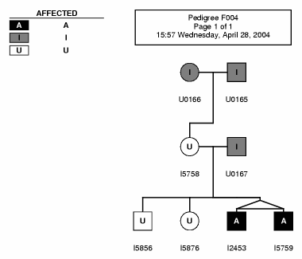
An example pedigree drawn with color set off using the
default values in Affected_Label and Affected_Gray shown above.
Finally, the "_Color" array stores a set of red-green-blue (RGB) color triplets
as strings which are used when drawing pedigrees in color (color is on
by default). Each color component varies from 0 (no intensity) to 1 (full intensity):
M>list Affected_Color
Affected_Color has 3 elements:
Affected_Color["A"]="0.13 0.43 0.92"
Affected_Color["I"]="0.97 0.89 0.01"
Affected_Color["U"]="0.26 0.99 0.24"
M>
Here's what a pedigree in color will look like with these default settings:
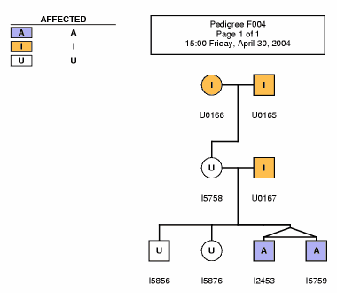
An example pedigree drawn with color set on using the
default values in Affected_Label and Affected_Color shown above.
Because these parameters are stored in arrays, you can easily change the values to suit your needs:
M>// M>// Change labels: AFF=Affected, IND=Indeterminate. M>// "U"s are unaffected (no labels): M>// M>Affected_Label["A"]="AFF" M>Affected_Label["I"]="IND" M>Affected_Label["U"]="" M>// M>// Change colors: M>// M>Affected_Color["I"]=lightgray M>// M>// Draw pedigree: M>// M>draw pedigree "F004" Drawing pedigree F004, U0166's subtree (subtree 1 of 1) ... M>
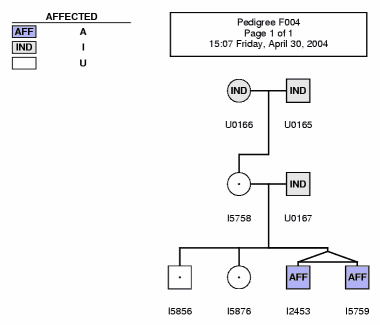
Example pedigree drawn after modifying values in the
Affected_Label and Affected_Color arrays.
Keep in mind that normally not more than three characters will fit on the labels
within the male or female symbols when displaying one categorical variable. When displaying
more than one categorical variable, not more than one character can be displayed within the
pie-slice divisions. As shown above, you can assign a null string, "", to an element in
the "_Label" array when you don't want a label shown on the drawing.
Watch out for two conditions! First, selecting too many categorical variables will cause the icons on the drawing to be divided into illegibly narrow pie-sliced regions. Although Madeline imposes no limit, four categorical variables is about the limit for human legibility.
Secondly, guard against selecting a variable with too many levels. At best, the human eye can only distinguish about eight shades of gray. Even if you choose to draw pedigrees in color, if you have more than about eight or nine categorical levels, the drawing is likely going to be difficult to decipher, so its up to you to determine how to present your data legibly. Madeline however imposes no limit on the number of levels that can be drawn. The program uses a preset table of easily-distinguishable colors for the first nine levels of a categorical variable (figure below): after that, colors are generated randomly.
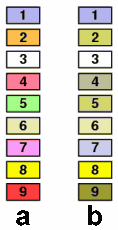
(a) Set of nine preset colors used to represent levels of a categorical variable on pedigree drawings. (b) The same set of colors as they might appear to an individual with a red-green color vision deficiency.
Putting all of this together, we have:
M>open 'utf8.data.mfh' ... M>toggle icon flag for heartcond 8. AFFECTED has 3 levels. 9. HEARTCOND has 3 levels. M>heartcond_label["1"]="H" M>heartcond_label["2"]="B" M>heartcond_label["3"]="M" M>heartcond_color["1"]=yellow M>heartcond_color["2"]=orange M>heartcond_color["3"]=red M>affected_color["A"]=green M>affected_color["I"]=lightgray M>affected_color["U"]=white M>draw pedigree 'F004' Drawing pedigree F004, U0166's subtree (subtree 1 of 1) ... M>>
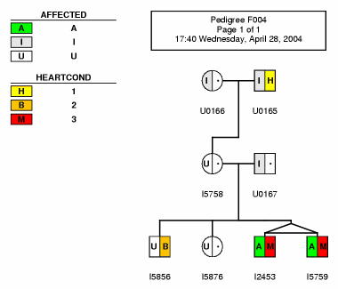
Pedigree resulting from commands shown above.
| set turn |
|
In Madeline, the set and turn commands are identical.
Just select the command verb that makes
the most sense to you in English.
Descriptions of all forms of the command follow.
The first set of descriptions covers boolean flags that can be turned on or off. See Table 5.5 for a tabular summary of all boolean state flags.
When AutoCheckInheritance is on (the default), Mendelian inheritance checking is
performed whenever a new pedigree table is opened using the open command. See
check inheritance for a detailed description. See: check,
open.
AutoExclude instructs Madeline, on a subsequent write command, to automatically
exclude individuals and, if necessary, pedigrees with insufficient data. Individuals with no usable genotypes
are excluded unless their presence is required to maintain pedigree structure.
If AutoExclude is off, no pedigrees will be excluded.
Autoexclude is on by default. See also:
exclude,
write.
M>turn AutoExclude off
Autoexclude is now off
M>
When color is on (the default), pedigrees are drawn in color.
When color is off, pedigrees are drawn in black and white.
The setting of ReverseShading, described below, affects whether black or white
is used to represent the first shade of gray on black and white pedigree drawings: see below.
In reality, this toggle affects a single boolean flag located near the top of the Postscript
file. (named madeline.pedigree.ps by default)
that Madeline generates after a draw command has been issued. Thus,
any saved pedigree drawing can be printed in color or in black-and-white at any time by simply
changing the boolean INCOLOR flag in the Postscript file from true
to false or vice-versa:
%%%%%%%%%%%%%%%%%%%%%%%%%%%%%%%%%%%%%%%%%%%% % % Boolean toggle for color shading/printing: % %%%%%%%%%%%%%%%%%%%%%%%%%%%%%%%%%%%%%%%%%%%% /INCOLOR true def
Changing the boolean state of the INCOLOR flag in the Postscript pedigree drawing file generated
by Madeline allows you to print a saved drawing in either black-and-white or color at any time.
When ConsoleHighlights is on (the default), Madeline will
apply bold or color attributes to certain text displayed in your terminal.
Set ConsoleHighlights off disables terminal text attributes.
M>lookup 'h' h is an internal variable. Its current value is 0.000. HaldaneToTheta is a function taking and returning a number. HaplotypeDisplay is a keyword. hello (status) is a command. help is a command. HighlightRows is a keyword. horizontal is a keyword. html is a keyword. M>turn consoleHighlights off M>lookup 'h' h is an internal variable. Its current value is 0.000. HaldaneToTheta is a function taking and returning a number. HaplotypeDisplay is a keyword. hello (status) is a command. help is a command. HighlightRows is a keyword. horizontal is a keyword. html is a keyword. M>
By default, Madeline uses a TAB character as the delimiter when displaying certain tabular data. You can change this to a comma, space, or any other single-character delimiter. This facilitates cutting tabular data out of Madeline for pasting into other programs:
M>view data CAFFECTED,AGE_DX for AGE_DX>=90 L0197 M05266 . 91 L0878 M06267 . 91 ... M>set delimiter to comma M>view data CAFFECTED,AGE_DX for AGE_DX>=90 L0197,M05266,.,91, L0878,M06267,.,91, ... M>set delimiter to space M>view data CAFFECTED,AGE_DX for AGE_DX>=90 L0197 M05266 . 91 L0878 M06267 . 91 ... M>set delimiter to "*" M>view data CAFFECTED,AGE_DX for AGE_DX>=90 L0197*M05266*.*91* L0878*M06267*.*91* ...
Madeline was originally written for use in the Finland-United States
Investigation of NIDDM Genetics (FUSION). In that study, individual identifiers were
originally coded in a way which revealed the relationship of an individual
to the proband. When FusionSupport is turned on,
the program makes use of the relationship information revealed by
the FUSION identifiers to reconstruct pedigrees even when
certain individuals are not present in the pedigree table. While the program
continues to maintain this option, it is of no use in other investigations
and is therefore off by default.
When HaplotypeDisplay is on, genotypes are shown with alleles delimited by "|" on
pedigree drawings. When off, alleles are shown delimited by "/". Off is the default
setting.
Note:
Madeline is not capable of inferring haplotypes and has no way of knowing whether alleles
in a pedigree file are arranged to show haplotypes or not. If alleles in a pedigree
table have been arranged to show haplotypes known or inferred from an external program,
then Madeline provides a convenient way to draw pedigrees of such data using
set HaplotypeDisplay on followed by draw pedigree commands.
After a genetic map has been loaded using the load command, you can use list map
or list map for chromosome n to display the genetic map in a tabular format:
M>load 'map.data.mfh' Marker maps based on map.data.mfh are now installed. M>list map for chromosome 23 Map Position (Kosambi cM) ----------------------------- Ch Or Marker Name Sex-avg. Female Male -- -- ----------- --------- --------- --------- 23 1 DXS1060 15.1200 7.6600 22.7700 23 2 DXS8051 17.2900 12.0300 22.7700 23 3 DXS987 22.1800 22.0400 22.7700 . . . . . . . . . . . . . . . . . .
When MapDetails is turned on,
Kosambi inter-marker distances and recombination fractions
are also shown:
M>set MapDetails on M>list map for chromosome 23 Sex-averaged Map Female-specific Map Male-specific Map ------------------- ------------------- ------------------- Ch Or Marker Name Kosambi Dist (RF) Kosambi Dist (RF) Kosambi Dist (RF) -- -- ----------- --------- --------- --------- --------- --------- --------- -------------- Chromosome 23 -------------- 15.1200 7.6600 22.7700 (0.1468) (0.0760) (0.1468) 23 1 DXS1060 15.1200 7.6600 22.7700 2.1700 4.3700 . (0.0217) (0.0436) . 23 2 DXS8051 17.2900 12.0300 22.7700 4.8900 10.0100 . (0.0487) (0.0988) . 23 3 DXS987 22.1800 22.0400 22.7700 5.4100 10.9400 . (0.0539) (0.1077) . . . . . . . . . . . . .
MapDetails is off by default.
When drawing pedigrees in black and white, Madeline normally uses black for the first
level of a displayed categorical variable (such as the AffectionStatusField
which is toggled for display by default), white for the last level, and evenly-spaced
intermediate shades of gray for every level in between. If your AffectionStatusField
is coded using "A" for affected, "I" for indeterminate, and "U" for unaffected, then affected
individuals will be shown on your pedigree drawings in black, unaffected in white, and
indeterminate in 50% gray.
When ReverseShading is turned on, the opposite would apply: the first
level would appear in white, the second level in gray, and so on out to the last level which
would be in black. This is useful, for example, if you happend to have the AffectionStatusField
coded using 1 for unaffected and 2 for affected, as is the
custom in Linkage/Genehunter files. In this case with just two non-missing levels present,
individuals marked with 1 will appear white, while the affecteds marked with 2 would
appear black, just as you would expect.
Note that Madeline provides other ways for you to adjust the color of the male or female icons
on a pedigree drawing: see the toggle icon flags for all the
details.
Note:
The Postscript pedigree files produced by Madeline's draw command contain a single
boolean flag, REVERSE_SHADING, which can be toggled at any time to reverse the
shading of a black and white drawing. The drawing can also be switched from black and white
to color, or vice versa, by changing the INCOLOR flag:
%%%%%%%%%%%%%%%%%%%%%%%%%%%%%%%%%%%%%%%%%%%% % % Boolean toggle for color shading/printing: % %%%%%%%%%%%%%%%%%%%%%%%%%%%%%%%%%%%%%%%%%%%% /INCOLOR true def /REVERSE_SHADING false def
Reorder fields by specifying field names or field indices separated by commas, or a range of contiguous field names or indices separated by a dash. Fields are ordered within their category (i.e., "C","P", or "G"). Covariate "V" fields are simply a subset of phenotype "P" fields and, thus, are numbered along with phenotype fields.
If you specify the order of some but not all of the fields within a given category, the remaining fields will be ordered after your fields based on their physical order in the database.
When specifying field order, you can mix and match any sequence of "C", "P",
and "G" fields within a single set command. Specified fields not already
toggled for output are ignored. Issuing a load command after
a set field order command resets the order of all "Co" and "Po"
fields, while "Go" field ordering is set to the map order.
To avoid this behaviour, just issue load prior to any
set field order command.
Madeline controls the order of C core fields when writing most output formats.
Reordering of core fields is honoured by the view record and
draw pedigree commands, and by the
CommaDelimited and
SpaceDelimited write
formats.
Issuing set field order without the to clause resets the
order of "Co" and "Po" fields to their natural order,
while the order of "Go" fields will depend on whether a map table is
loaded or not.
M>open 'chr20.data.mfh' ... ... 1.STUDYID Co__1 19.D20S889 Go__5 36.D20S836 Go_22 2.SEX Co__2 20.D20S103 Go__6 37.D20S888 Go_23 3.FATHER Co__3 21.D20S115 Go__7 38.D20S886 Go_24 4.MOTHER Co__4 22.D20S851 Go__8 39.D20S197 Go_25 5.TWIN Co__5 23.D20S912 Go__9 40.D20S178N Go_26 6.CPEP Po__1 24.D20S917 Go_10 41.D20S866 Go_27 7.GLU_FAST Po__2 25.D20S898 Go_11 42.D20S196 Go_28 8.GLU_2H Po__3 26.D20S114 Go_12 43.D20S857 Go_29 9.STUDYAGE Po__4 27.D20S477 Go_13 44.D20S480 Go_30 10.LOGSI Po__5 28.D20S874 Go_14 45.D20S211 Go_31 11.BMI Po__6 29.D20S195 Go_15 46.D20S120 Go_32 12.TP Po__7 30.D20S909 Go_16 47.D20S102 Go_33 13.AFFECTED C 31.D20S107 Go_17 48.D20S173 Go_34 14.ISTYPED Po__8 32.D20S170 Go_18 49.D20S171 Go_35 15.D20S117 Go__1 33.D20S96 Go_19 50.D20S840 Go_36 16.D20S906 Go__2 34.D20S119 Go_20 51.D20S189 Go_37 17.D20S482 Go__3 35.D20S481 Go_21 52.D20S100 Go_38 18.D20S905 Go__4 M>load 'chr20.map.mfh' Marker maps based on chr20.map.mfh are now installed. Note: genotype fields ordered according to current map Field ordering now set based on chr20.map.mfh M>list fields 1.STUDYID Co__1 19.D20S889 Go__4 36.D20S836 Go_23 2.SEX Co__2 20.D20S103 Go__1 37.D20S888 Go_24 3.FATHER Co__3 21.D20S115 Go__7 38.D20S886 Go_25 4.MOTHER Co__4 22.D20S851 Go__8 39.D20S197 Go_26 5.TWIN Co__5 23.D20S912 Go_13 40.D20S178N Go_27 6.CPEP Po__1 24.D20S917 Go__9 41.D20S866 Go_28 7.GLU_FAST Po__2 25.D20S898 Go_11 42.D20S196 Go_29 8.GLU_2H Po__3 26.D20S114 Go_12 43.D20S857 Go_30 9.STUDYAGE Po__4 27.D20S477 Go_14 44.D20S480 Go_31 10.LOGSI Po__5 28.D20S874 Go_15 45.D20S211 Go_32 11.BMI Po__6 29.D20S195 Go_16 46.D20S120 Go_34 12.TP Po__7 30.D20S909 Go_17 47.D20S102 Go_36 13.AFFECTED C 31.D20S107 Go_18 48.D20S173 Go_38 14.ISTYPED Po__8 32.D20S170 Go_19 49.D20S171 Go_37 15.D20S117 Go__2 33.D20S96 Go_20 50.D20S840 Go_33 16.D20S906 Go__3 34.D20S119 Go_21 51.D20S189 Go_10 17.D20S482 Go__5 35.D20S481 Go_22 52.D20S100 Go_35 18.D20S905 Go__6 M>set field order to father,mother,logsi,studyage,sex,twin,tp,bmi M>list fields 1.STUDYID Co__5 19.D20S889 Go__4 36.D20S836 Go_23 2.SEX Co__3 20.D20S103 Go__1 37.D20S888 Go_24 3.FATHER Co__1 21.D20S115 Go__7 38.D20S886 Go_25 4.MOTHER Co__2 22.D20S851 Go__8 39.D20S197 Go_26 5.TWIN Co__4 23.D20S912 Go_13 40.D20S178N Go_27 6.CPEP Po__5 24.D20S917 Go__9 41.D20S866 Go_28 7.GLU_FAST Po__6 25.D20S898 Go_11 42.D20S196 Go_29 8.GLU_2H Po__7 26.D20S114 Go_12 43.D20S857 Go_30 9.STUDYAGE Po__2 27.D20S477 Go_14 44.D20S480 Go_31 10.LOGSI Po__1 28.D20S874 Go_15 45.D20S211 Go_32 11.BMI Po__4 29.D20S195 Go_16 46.D20S120 Go_34 12.TP Po__3 30.D20S909 Go_17 47.D20S102 Go_36 13.AFFECTED C 31.D20S107 Go_18 48.D20S173 Go_38 14.ISTYPED Po__8 32.D20S170 Go_19 49.D20S171 Go_37 15.D20S117 Go__2 33.D20S96 Go_20 50.D20S840 Go_33 16.D20S906 Go__3 34.D20S119 Go_21 51.D20S189 Go_10 17.D20S482 Go__5 35.D20S481 Go_22 52.D20S100 Go_35 18.D20S905 Go__6 M>
Sets the language and locale conventions used for displaying dates and times in Madeline.
M>quiet
M>set language to AmericanEnglish
M>?{1776.07.04}
{Thursday, July 4, 1776}
M>set language to BritishEnglish
M>?{1776.07.04}
{Thursday, July 4, 1776}
M>set language to Japanese
M>?{1776.07.04}
{1776年7月4日 (木曜日)}
M>set language to Italian
M>?{1776.07.04}
{giovedé, 4 luglio 1776}
M>set language to Chinese
M>?{1776.07.04}
{1776年7月4日 (星期四)}
M>set language to Thai
M>?{1776.07.04}
{วันพฤหัสบดีที่่ 4 กรกฏาคม พ.ศ. 2319 }
M>
In landscape and portrait modes,
Madeline resizes a pedigree drawing
to fit on a single physical page in the desired orientation.
For large pedigrees, the reduction necessary to fit a drawing
on a single page may result in labels that are too small to read.
In general, the default automatic mode is a better
choice.
When orientation is set to automatic,
Madeline chooses the best orientation for a drawing based on it's
height and width.
If Madeline determines that the reduction necessary to fit the drawing
on a single page may make the labels difficult to read or illegible,
the program inserts additional Postscript code to print the drawing
as a "poster" across multiple physical pages.
The program selects the number and orientation of
physical pages that require the least amount of rescaling of a drawing.
A schematic index is produced as a guide for assembling the drawing
after printing. See draw for more information.
M>set orientation to landscape
...
M>
Sets the paper size to the specified standard printer paper size. Madeline does not send special commands to multi-tray printers, so be sure that the correct paper size is in the selected printer tray.
M>iset papersize to usletter
...
M>
Sets the paper margins on all four sides to the specified value in centimeters. The default margin size is one centimeter. If a multiple-page drawing is produced, the pages will also overlap by the specified margin along the joining edges of the poster.
Do not set the margins to much less than one centimeter because most printers cannot print out to the physical edge of the paper.
M>set papermargin to 1.5 +-----------------------+-----------+-----------------------------------------+ | Variable or State Flag| Setting |Description | +-----------------------+-----------+-----------------------------------------+ | EXTERNAL PROGRAMS | | | +-----------------------+-----------+-----------------------------------------+ | Editor | edith |Program used to edit files | | PostscriptViewer | gv |Program used to view Postscript drawings | | PrintCommand | lpr |System program used to print files | | WebBrowser | netscape |Program used to view HTML documentation | +-----------------------+-----------+-----------------------------------------+ | EVALUATION SETTINGS | | | +-----------------------+-----------+-----------------------------------------+ | EvaluationInterval | 0.50 cM |Value to write to control file. | | OffEndDistance | 10.00 cM |Value to write to control file | +-----------------------+-----------+-----------------------------------------+ | DRAWING SETTINGS | | | +-----------------------+-----------+-----------------------------------------+ | Color | ON |Draw pedigrees in color | | ReverseShading | OFF |Black is first icon shade | | DividedDrawings | ON |Paginate drawings by founding group | | HighlightRows | ON |Alternately highlight data on drawings | | LabelCreatedIndividual| ON |Label virtuals created by Madeline | | Orientation | AUTOMATIC |Automatic based on drawing dimensions | | PaperMargin | 1.50 cm |Margin (in cm) on all four sides | | PaperSize | USLETTER |8.5 x 11.0 inches | +-----------------------+-----------+-----------------------------------------+ | OTHER SETTINGS | | | +-----------------------+-----------+-----------------------------------------+ | AutoExclude | ON |Exclude pedigrees automatically | | AutoCheckInheritance | ON |Check inheritance on OPEN | | ConsoleHighlights | ON |Use bold/color highlights on console | | Delimiter | TAB |Delimiter for tables and other output. | | FusionSupport | OFF |FUSION customizations disabled | | HaplotypeDisplay | OFF |Display genotypes delimited with "/" | | Language | American E|Language convention used for date, time | | MapDetails | OFF |LIST MAP summary display | | SaveAlleleFrequencies | OFF |Calculate new frequencies on next OPEN | | Date | |Saturday, May 1, 2004 | | Verbosity | VERBOSE |All messages are printed to the console | +-----------------------+-----------+-----------------------------------------+ M>
unexclude [ families ] for Expressionlogical
Includes previously excluded individuals and pedigrees in output. If
unexclude families is used, all individuals who match the criteria
and their spouse(s) and descendants who were excluded by a previous
exclude families
or other exclude
command will be included again.
See exclude
M>exclude for _famid=='0172' 0172-100 has been marked for exclusion 0172-401 has been marked for exclusion 0172-402 has been marked for exclusion 0172-500 has been marked for exclusion 0172-601 has been marked for exclusion 0172-602 has been marked for exclusion 0172-603 has been marked for exclusion 0172-604 has been marked for exclusion 0172-605 has been marked for exclusion M>unexclude for _famid=='0172' 0172-100 has been marked for inclusion 0172-401 has been marked for inclusion 0172-402 has been marked for inclusion 0172-500 has been marked for inclusion 0172-601 has been marked for inclusion 0172-602 has been marked for inclusion 0172-603 has been marked for inclusion 0172-604 has been marked for inclusion 0172-605 has been marked for inclusion M>
verbose
Prints all summary and detail messages to the screen.
See quiet, silent.
M>verbose
Madeline is now in verbose mode.
M>
| view |
|
The view command has three forms, described below:
When view is used without the record keyword, only the IndividualID,
FamilyID, and record number of individuals matching the query criteria are shown.
If the record keyword is included, then
those fields in the database currently toggled on for output are also shown.
If view record is typed without a for query expression,
then only the current record is shown. After displaying matching results, view prints
a summary tally of the number of individuals and pedigrees which matched.
M>open 'mini.data.mfh' 1.FAMID Co__1 9.CAFFECTED * 17.ATA84D02 Go__2 2.STUDYID Co__2 10.AGE Po__1 18.ATAG053 Go__3 3.SEX Co__3 11.AFF_BROAD Po__2 19.GATA167C12 Go__4 4.FATHER Co__4 12.CAFF_BROAD Po__3 20.GATA22H02 Go__5 5.MOTHER Co__5 13.AFF_RESTR Po__4 21.GATA26D02N Go__6 6.MZTWIN Co__6 14.CAFF_RESTR Po__5 22.AAAT007 Go__7 7.DZTWIN Co__7 15.AGE_DX Po__6 23.AAT034 Go__8 8.AFFECTED Co__8+ 16.ATA80B10Z Go__1 24.AAT247 Go__9 ----------------------------- --------- --------- --------- Pedigrees and Individuals Included Excluded Total ----------------------------- --------- --------- --------- Pedigrees ................... 125 0 125 Individuals ................. 1,013 0 1,013 + In database .............. 939 0 939 | + Attached .............. 937 0 937 | + Childless spouses ..... 0 0 0 | + Unattached ............ 2 0 2 + Not in database .......... 74 0 74 M>view for _PercentGenotyped>0 and _PercentGenotyped<80 M02454 in L0005 (rec. no. 17) M02456 in L0006 (rec. no. 23) M05146 in L0022 (rec. no. 45) . . . . . . . . . . . . M06357 in L0960 (rec. no. 909) M06392 in L0990 (rec. no. 918) M06488 in L1050 (rec. no. 925) M06487 in L1051 (rec. no. 935) 52 individuals in 45 pedigrees matched as follows: Individuals .............. 52 + In database ........... 52 | + Attached ........... 52 | + Childless spouses .. 0 | + Unattached ......... 0 + Not in database ....... 0 M>go 935 M>view record CORE FIELDS: L1051 M06487 F N00639 N00640 . . 0 PHENOTYPE FIELDS: 0 2 A 0 I 0 GENOTYPE FIELDS: 165/189 ....... ....... ....... 254/270 153/161 309/309 ....... 284/287 M>
Note:
The view [ record ] command shown above has now been largely supplanted
by the more powerful view data
command described below. We recommend using view data for most cases.
View data related to individuals matching query criteria. The data items can
consist of any expressions that Madeline's interpreter can evaluate. By default the pedigree and
individual identifiers are always reported, even if you omit a data expression. By default,
tabs are used to separate columns in the result table; you can change this using the
set delimiter command.
M>view data for _FamilyID="L0990" L0990 M06392 L0990 M06398 L0990 M06400 L0990 N00600 L0990 N00601 5 individuals in 1 pedigree matched as follows: Individuals .............. 5 + In database ........... 3 | + Attached ........... 3 | + Childless spouses .. 0 | + Unattached ......... 0 + Not in database ....... 2 M>view data _PercentGenotyped, _IsMendelianInconsistent, CAFF_BROAD,CAFF_RESTR for _FamilyID="L0246" L0246 M05209 88.8889 1 A A L0246 M05494 100 1 A A L0246 M05629 88.8889 1 A I L0246 N00352 0 1 I I L0246 N00353 0 1 I I 5 individuals in 1 pedigree matched as follows: Individuals .............. 5 + In database ........... 5 | + Attached ........... 5 | + Childless spouses .. 0 | + Unattached ......... 0 + Not in database ....... 0 M>
View a histogram of the distinct values in a field or set of fields. A list of field names or field indices may be specified separated by commas. A range may be specified by separating the first and last field in a range with a dash. Madeline reports the number of non-missing levels of a variable. The number of missing cases is printed at the end of the list.
M>list fields 1.FAMID Co__1 9.CAFFECTED * 17.ATA84D02 Go__2 2.STUDYID Co__2 10.AGE Po__1 18.ATAG053 Go__3 3.SEX Co__3 11.AFF_BROAD Po__2 19.GATA167C12 Go__4 4.FATHER Co__4 12.CAFF_BROAD Po__3 20.GATA22H02 Go__5 5.MOTHER Co__5 13.AFF_RESTR Po__4 21.GATA26D02N Go__6 6.MZTWIN Co__6 14.CAFF_RESTR Po__5 22.AAAT007 Go__7 7.DZTWIN Co__7 15.AGE_DX Po__6 23.AAT034 Go__8 8.AFFECTED Co__8+ 16.ATA80B10Z Go__1 24.AAT247 Go__9 M>view distinct values of 10, CAFF_BROAD 10. AGE has 21 levels: Level Va Cases Percent ------ -- ----- ------- 1. 0 151 16.1 -+- 2. 38 1 0.1 3. 47 1 0.1 . . . . . . . . . . . . 19. 73 2 0.2 20. 75 2 0.2 21. 84 2 0.2 ------ -- ----- ------- .. .. 183 19.5 non-missing values in database .. .. 756 80.5 missing values in database 12. CAFF_BROAD has 3 levels: Level V Cases Percent ------ - ----- ------- 1. A 355 37.8 -+-+-+- 2. I 460 49.0 -+-+-+-+- 3. U 82 8.7 - ------ - ----- ------- .. . 897 95.5 non-missing values in database .. . 42 4.5 missing values in database M>
Shows the value of an expression. Equivalent to show command.
See show.
M>what is studyid "0052-100" M>what is d20s889 "201/216" M>
| write |
locus file
[pedigree file] |
to “FileName” in | 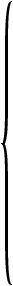 |
Generic:
CommaDelimited1 |
SpaceDelimited |
TabDelimited |
Generic2
Aspex: Kinship3 SibIBD | SibMap | SibPhase | SibTDT | Crimap: Crimap Genehunter: GeneHunter4 | GeneHunterNPL | GeneHunterQTL Linkage Disequilibrium: LDEQMarker | LDEQAffectedSpouse | LDEQTDT Mendel & Fisher: Fisher0 | Fisher1 | Mendel | UserM13 Merlin: Merlin Pedcheck: Pedcheck Relpair: Relpair Sage: FSP0 | FSP | Sage | Sibpal1 | Sibpal2 | Sibpal3 | Sibpal4 Siblink: SiblinkAffectedPairs | SiblinkUnaffectedPairs | SiblinkAllPairs | SiblinkDiscordantPairs Simwalk: Simwalk UserFQTL: UserFQTL | UserFQTLAll | UserFQTLFounders | UserFQTLOffspring |
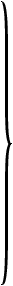 |
format |
| # | Notes |
|---|---|
| 1. | Keywords in blue can only be used for creating pedigree files. |
| 2. | Keywords in orange can only be used for creating locus files. |
| 3. | Keywords in brown produce both a pedigree file as well as an associated control or parameter file which may or may not also contain locus information. |
| 4. | Keywords in black can be used for creating both pedigree and locus files. when used to create pedigree files, these keywords may or may not also produce an associated control or parameter file. |
There are two forms of the write command:
write pedigree filewrite locus fileEach form of the command is described below.
Write pedigree file ... writes the current set of core "C" fields and flagged output
fields (e.g., "Go", "Po" and "Vo" fields) to a pedigree file
in the format specified by the format keyword (genehunter, merlin, simwalk, etc.).
The command "write pedigree file" can be shortened to just "write"; the program assumes you
want to create a pedigree file when a keyword is not otherwise specified.
After a write command, the value of OutputFile will be set to the FileName that you
specified in the write command.
For certain formats, such as the GenehunterNPL and Siblink formats, Madeline will automatically create a parameter or control file at the same time the pedigree file is created. A parameter or control file contains a template for running an analysis, along with other core information required by the specific package, such as number of families or sib pairs in the corresponding pedigree file. Madeline fills in as much information as possible. However, the program generally will not know what sort of analysis is to be conducted, what genetic model to specify, and so on. Thus, the user will generally need to edit the parameter file and customize it to meet his or her specific analysis needs.
For these formats, the value of OutputParameterFile will become the FileName
with an extension of ".par", ".ctl", or something similar added to the end,
depending upon the naming conventions common to that format. Madeline will print a message
informing the user of creation of a complementary .par
or .ctl file.
Some formats, such as the Genehunter and Simwalk formats, incorporate map distance information into either a control file or locus file, and therefore require that a map database be loaded prior to the write command. Madeline will issue an error if you try to write such a file without first loading a map.
For specific formats and usage, see Section 3. Write Formats.
M>write to 'simwalk.ped' in simwalk format
NOTE: Simwalk batch file, "BATCH2.DAT.simwalk.ped", has been created.
Edit this file to change the parameters of your analysis.
NOTE: Simwalk map file "simwalk.ped.map" has been created.
Writing pedigree data to "simwalk.ped"
----------------------------- --------- --------- ---------
Pedigrees and Individuals Included Excluded Total
----------------------------- --------- --------- ---------
Pedigrees ................... 107 18 125
Individuals ................. 901 109 1,010
+ In database .............. 858 81 939
| + Attached .............. 858 79 937
| | + With data .......... 439 0 439
| | + Without data ....... 419 79 498
| | + Marked for exclusion 0 0 0
| + Childless spouses ..... 0 0 0
| + Unattached ............ 0 2 2
+ Not in database .......... 43 28 71
M>
Write locus file ... creates a locus file containing allele frequency information
for the set of "Go" genotype fields flagged for output in the current pedigree table.
Formats such as the Siblink format incorporate locus file information directly into the control file. In these cases, you do not need to create a separate locus file. Other packages, such as Crimap, do not require a locus file at all.
Some formats, such as the Siblink and Genehunter formats, incorporate map distance information into either a control file or locus file, and therefore require that a map database be loaded prior to the write command. Madeline will issue an error if you try to write such a file without first loading a map.
For specific formats and usage, see Section 3. Write Formats.
M>write locus file to 'mendel.loc' in mendel format
Locus file "mendel.loc" has been written.
M>
This section describes all formats currently supported by the write pedigree file ...
and write locus file ... commands.
Format keywords are listed alphabetically within each group. Some keywords can be used for creating both a pedigree file and a locus file, while others cannot. To make these distinctions clear, one of the following codes may appear in parentheses following a heading:
| Code | Description |
|---|---|
| PED | Indicates a keyword that can only be used to create a pedigree file. |
| LOC | Indicates a keyword that can only be used to create a locus file. |
| PED,LOC | Indicates a keyword that can be used to create both pedigree and locus files. |
| PAR/CTL |
Indicates that a complementary parameter or control file is produced when the write pedigree file ...
command is executed.
|
For example, the sibpal3 keyword can only be used to create a pedigree file, while the sage keyword can only be used to create the corresponding locus file, so you will see Sibpal3 (PED) and Sage (LOC) as headings.
Depending upon analysis package, the parameter file may be called a control file or may have some other name. In Madeline, any file containing analysis control or parameter information is referred to as a parameter file. For many formats, the parameter file also contains locus (and sometimes map) information which eliminates the need for writing a locus file in a separate step.
Any one program may contain numerous settable parameters in the parameter file. For those formats that require it, Madeline provides a template parameter file that may be edited to set parameters to pass to an analysis program. Madeline provides default parameters to the extent possible, but these defaults are not necessarily the best choices for any given analysis and, in some cases, they may only be place-holder values which need to be edited by the user.
Used to output a pedigree file as a comma-delimited flat file. Since this is
a generic format, there is no fixed set of required core fields. It is necessary to toggle
output flags on or off and set field order, as required, for core fields as well as
for general phenotype and genotype fields. For readability, fields in the output are
padded with white space so that columns align, just as in the SpaceDelimited
format. Missing numeric values are printed using the value specified in the first cell of
the numeric missing value array, NumericMissingValue[1]. Missing character
values are printed using the value specified in the first cell of the character missing
value array, CharacterMissingValue[1].
M>nmv[1]=-9 M>list nmv NMV has 1 elements: NMV[ 1]= -9 M>list cmv CMV has 5 elements: CMV[ 1]="." CMV[ 2]="/" CMV[ 3]="0/0" CMV[ 4]="0/ 0" CMV[ 5]="0/ 0" M>write pedigree file to 'commadelimited.data' in CommaDelimited format . . . M>
Used to output a pedigree file as a column-aligned, space-delimited flat
file. Since this is a generic format, there is no fixed set of required core fields. It is
necessary to toggle output flags on or off and set field order, as required,
for core fields as well as for general phenotype and genotype fields. Missing numeric
values are printed using the value specified in the first cell of the numeric missing
value array, NumericMissingValue[1]. Missing character values are printed
using the value specified in the first cell of the character missing value array, CharacterMissingValue[1].
M>nmv[1]=-9 M>list nmv NMV has 1 elements: NMV[ 1]= -9 M>list cmv CMV has 5 elements: CMV[ 1]="." CMV[ 2]="/" CMV[ 3]="0/0" CMV[ 4]="0/ 0" CMV[ 5]="0/ 0" M>write pedigree file to 'spacedelimited.data' in SpaceDelimited format . . . M>
Used to output a pedigree file as a tab-delimited flat file. Since this is
a generic format, there is no fixed set of required core fields. It is necessary to toggle
output flags on or off and set field order, as required, for core fields as well as
for general phenotype and genotype fields.
Missing numeric values are printed using the value specified in the first cell of
the numeric missing value array, NumericMissingValue[1]. Missing character
values are printed using the value specified in the first cell of the character missing
value array, CharacterMissingValue[1].
M>nmv[1]=-9 M>list nmv NMV has 1 elements: NMV[ 1]= -9 M>list cmv CMV has 5 elements: CMV[ 1]="." CMV[ 2]="/" CMV[ 3]="0/0" CMV[ 4]="0/ 0" CMV[ 5]="0/ 0" M>write pedigree file to 'tabdelimited.data' in TabDelimited format . . . M>
Used to output a locus file in a generic flat-file format that provides allele frequencies as well as the raw allele counts and allele ranks (see example below). The output file is useful for checking alleles, and for matching up allele ranks (used in formats such as Siblink and Genehunter) against the original allele labels.
D20S103 has 7 alleles: 1. 90 454/ 4296 = 0.1057 2. 92 27/ 4296 = 0.0063 3. 94 909/ 4296 = 0.2116 4. 96 663/ 4296 = 0.3871 5. 98 094/ 4296 = 0.2547 6. 100 44/ 4296 = 0.0102 7. 104 105/ 4296 = 0.0244 D20S117 has 14 alleles: 1. 166 4/ 4198 = 0.0010 2. 168 153/ 4198 = 0.0364 3. 176 658/ 4198 = 0.1567 4. 178 22/ 4198 = 0.0052 5. 183 9/ 4198 = 0.0021 6. 185 132/ 4198 = 0.0314 . . .
Excerpt from a locus file in generic format produced by Madeline.
The programs in Aspex use a single pedigree file format. However, each program requires
a different set of control parameters in the associated .tcl control file. Madeline therefore
provides a format keyword for each program in the package and produces well-commented .tcl
template files containing the default values for all relevant parameters. Two of the
programs, sib_ibd and sib_phase (Madeline's sibibd and sibphase
keywords), require marker information and so a marker map must be loaded prior to issuing
the write command for these formats.
Used to specify the pedigree file format along with the .tcl parameter file
used by the Aspex kinship program. Madeline creates a well-commented .tcl
parameter file at the same time that the pedigree file is created.
Used to specify the pedigree file format along with the .tcl parameter file
used by the Aspex sib_ibd program. Madeline creates a well-commented .tcl
parameter file at the same time that the pedigree file is created. A map must be loaded
prior to issuing the write command for this format.
Used to specify the pedigree file format along with the .tcl parameter file
used by the Aspex sib_map program. Madeline creates a well-commented .tcl
parameter file at the same time that the pedigree file is created.
Used to specify the pedigree file format along with the .tcl parameter file
used by the Aspex sib_phase program. Madeline creates a well-commented .tcl
parameter file at the same time that the pedigree file is created. A map must be loaded
prior to issuing the write command for this format.
Used to specify the pedigree file format along with the .tcl parameter file
used by the Aspex sib_tdt program. Madeline creates a well-commented .tcl
parameter file at the same time that the pedigree file is created.
Used to specify Crimap ".gen" file format. Non-numeric characters in the study IDs
are converted to their ASCII decimal equivalents. For example, "-"
is converted to "45". Although this process lengthens the IDs,
it does maintain the uniqueness of each ID and provides the completely numeric IDs
required by Crimap. Note that the integer value of a converted ID must not exceed the
maximum integer that can be represented within Crimap on your platform (Crimap uses a
signed long int for IDs, the maximum value of which is 2,147,483,647 on
many systems.
Madeline's Crimap routine currently only handles pedigrees with a single pair of founders (the founders may be dummied-in, as is done for FUSION sibship pedigrees). Criteria for including a pedigree are:
These criteria were defined by Dr. Beth Hauser and Dr. Mike Boehnke to prevent biased map lengths that occur when data are available on only a single generation of individuals.
For the Genehunter formats (genehunter, genehunternpl
and genehunterqtl), any pedigrees consisting of just a trio of two parents and
a single offspring are excluded.
When the genehunternpl keyword is used to specify a file for non-parametric
analysis, the following types of pedigrees are also excluded:
Used to specify a Genehunter pedigree file for parametric linkage analysis.
Also used to create a Genehunter locus file. Madeline automatically converts the
allele labels in the pedigree database to ordinals and prints these ordinal labels in both
the locus and pedigree file. For cross-reference purposes, you may find it useful to also
produce a generic locus file -- see GENERIC (LOC). A Genehunter
locus file also contains inter-marker distance information. Be sure to load
a map database prior to generating the locus file.
When used to create a pedigree file, the genehunter keyword instructs Madeline
to exclude pedigrees that do not contribute to a parametric analysis. For a non-parametric
analysis, use the genehunternpl keyword (below).
Used to specify a Genehunter pedigree file for non-parametric linkage
analysis. Pedigrees that cannot be used or do not contribute to a non-parametric analysis
will be excluded. For a parametric linkage analysis, use the genehunter keyword (see above).
To create the corresponding locus file, use the plain genehunter keyword. Read above to
learn about Madeline's exclusion rules for this format.
Used to specify a Genehunter pedigree file for quantitative trait linkage
analysis. Pedigrees are excluded using the same rule as for the parametric case
using the plain "genehunter" keyword.
Using genehunterqtl differs from using the genehunter
keyword in that the complementary control file is customized for a quantitative trait
linkage analysis. To create the corresponding locus file, use the plain genehunter
keyword.
For linkage disequilibrium analyses, Madeline selects a single parent-offspring trio
providing the most genetic information possible from each pedigree. The output file format
is a flat file similar to that produced by the generic SpaceDelimited
format. In addition to toggling the genotype fields required for output, the user must
also designate which core fields are required, and the order in which the core fields are
required, prior to executing the write command. Note that the AffectionStatusField
is required in output. The three options for linkage disequilibrium analyses are presented
below.
For the ldeqmarker format, Madeline selects a trio providing the most
information for a linkage disequilibrium analysis without regard to the affection status
of the three individuals in the trio.
For the ldeqaffectedspouse format, Madeline selects a trio providing the
most information for a linkage disequilibrium analysis with the additional condition that
at least one of the parents must be affected. The status of the other parent and offpsring
can be affected, unaffected, or unknown (missing).
For the ldeqtdt format, Madeline selects a trio providing the most
information for a linkage disequilibrium analysis with the additional condition that the
offspring must be affected. The status of the two parents can be affected, unaffected, or
unknown (missing).
The Mendel and Fisher programs cannot use individuals whose gender is listed as missing and therefore Madeline excludes such individuals. In general, however, it is unlikely you will have genotypes for individuals whose gender is unknown anyway. In addition, in Madeline only terminal individuals without offspring may retain gender status as missing because the program will, when required to do so, infer the gender of all non-terminal individuals from the mother and father fields of the offspring.
Used to specify Fisher file format with no ascertainment correction. Zeros
are written in the header for each pedigree to indicate no proband ascertainment. Use the mendel
keyword to write the corresponding locus file.
Used to specify Fisher file format with ascertainment correction. Ones are
written in the header for each pedigree that has a proband to indicate proband
ascertainment. Under fisher1, at least one non-proband individual in the
pedigree must have sufficient data for the pedigree to be included in output. Use the mendel
keyword to write the corresponding locus file.
Used to specify generic Mendel pedigree and locus file formats. This works for both older and newer versions of Mendel
Used to specify the Mendel UserM13 file format. UserM13 is the non-intuitive name
of the Mendel module used to calculate allele frequencies taking family relationships into account
in old versions of the Mendel suite. Use the mendel keyword to
write corresponding locus file. When userm13 is specified, all non-excluded
genotyped individuals, including childless spouses and unattached
individuals, are included in output.
Used to specify the Merlin file format.
Madeline creates both
the pedigree file as well as the accompanying ".data" file
which serves as an index to the fields in the pedigree table.
The pedcheck keyword produces an output file for use with the Pedcheck
program by Jeff O'Connell of the University of Pittsburgh. The format is essentially the Linkage
program format. Records for all individuals with genotype data are written to output.
Used to specify the Relpair file format. Relpair's locus file format is very similar to the UserFQTL format, while the pedigree file format is identical to generic Mendel format.
The locus file contains map information, and therefore a map database must be loaded prior to the write locus file command.
To run a module in Sage such as Sibpal, you will need to have an FSP family data input file in addition to a Sibpal pedigree file. Be careful to use the same set of exclusions when creating both files. The Sage modules also require parameter files to run. Madeline provides template parameter files that require editing. The parameter files are generated at the same time as the pedigree files.
Note that since the FSP and Sibpal .ped or .par files could easily end up having the
same names, be sure to differentiate the file names somewhere other than just in the file
extension
(Madeline will automatically provide .par as the extension for any of
the Sage package parameter files).
Used to specify the Sage FSP data file format. Madeline creates a
corresponding .par file at the same time that the pedigree file is created. When fsp0
is used, Madeline only outputs the core fields that FSP requires for construction
of the family structure pointer ".lnk" file which is used as one input to
SIBPAL. No genotype fields are output (hence the "0" in the format
name). In order to place genotype fields in an FSP segregation analysis data file
used as input to ASSOC and LODLINK, use the FSP format (below)
instead of FSP0. If your only objective is to obtain a family structure pointer
file to run SIBPAL, then you do not need to include any phenotype or genotype
fields as input to FSP, and FSP0 is the preferred choice.
Used to specify the Sage FSP data file format. Madeline creates a
corresponding .par file at the same time that the pedigree file is created. If you
plan to run SIBPAL, it is more convenient to use the FSP0 format above.
However, if you plan to run ASSOC or LODLINK, you should use the FSP
format here in order to place genotype fields in the FSP segregation analysis data
file.
Used to specify the Sage locus file format.
Used to specify Sage Sibpal quantitative trait linkage format. Be sure to
toggle the covariate and output flags of any covariates.
Madeline creates a corresponding .par file at the same time that the
pedigree file is created.
Used to specify Sage Sibpal binary trait linkage format.
Be sure to
toggle
the covariate and output flags of any covariates.
Madeline creates a corresponding .par file at the same time that the
pedigree file is created.
Used to specify Sage Sibpal binary trait linkage with variable age of onset
format.
Be sure to
toggle
the covariate and output flags of any covariates.
Madeline creates a corresponding .par file at the same time that the
pedigree file is created.
Used to specify Sage Sibpal marker ordering (i.e., mapping) format.
There has been no demand for this format in our labs, and so it has not been thoroughly tested.
Madeline creates a corresponding .par file at the same time that the pedigree
file is created.
In addition to the usual set of core fields, the AffectionStatusField must be
present so that Madeline can choose sib pairs based on affection status. In addition, a
map database must be loaded. Madeline creates a Siblink control file with a .ctl
extension at the same time that the pedigree file is created. The control file contains
locus information, including map distance information.
Madeline automatically converts the allele labels in the source database to ordinals
and prints these ordinal labels in both the locus and pedigree file. For cross-reference
purposes, you may find it useful to also produce a generic locus file -- see
generic.
Used to specify a file in Siblink format containing only affected sib pairs.
Used to specify a file in Siblink format containing only unaffected sib pairs.
Used to specify a file in Siblink format containing all affected and unaffected sib pairs. Siblings whose affection status is missing are excluded.
Used to specify a file in Siblink format containing discordant affected-unaffected sib pairs. Siblings whose affection status is missing are excluded.
Madeline creates files for Simwalk version 2. Version 2.83 is the most recent tested version.
This keyword is used to create Simwalk2 pedigree and locus files.
When creating a pedigree file, Madeline also creates a complementary
(1) map file with a ".map" extension, and (2) a parameter file.
If the pedigree file were called "ped.dat", then the
complementary files would be called:
ped.dat.mapBATCH2.DAT.ped.dat
Finally, Madeline creates "BATCH2.DAT" as a symbolic link
pointing to the uniquely-named parameter file (e.g., BATCH2.DAT.ped.dat).
This is done so that you can set up multiple Simwalk analysis files (for example,
for different chromsomes) in a single directory without clobbering
the BATCH2.DAT file that is required by Simwalk.
The "BATCH2.DAT..." parameter files are set up to perform
non-parametric linkage analyses by default. Manual editing of these
files is required to change the analysis type or specify a number
of other important parameters. At the bare minimum, you will need to specify
the name of the locus file you are using as well as an
informative analysis title.
When creating locus files, Madeline currently assumes that the markers are autosomal. X-linked data would require you to manually edit the locus file.
UserFQTL requires nuclear family blocks for input. Madeline enumerates each nuclear family block by affixing a dot "." followed by a sequential ordinal identifier after the original pedigree identifier. For example, if the pedigree ID is 0123, successive nuclear family blocks up to n will be identified as 0123.1, 0123.2, 0123.3 ... 0123.n in the family record headers of the resulting data file. A nuclear family must have at least one person with phenotype data for the pedigree to be included.
Used to specify UserFQTL locus file format.
Used to specify UserFQTL all nuclear families format. All nuclear families constructed by decomposing a full pedigree will be output.
Used to specify UserFQTL founding nuclear families format. Only nuclear families in the founding generation will be output.
Used to specify UserFQTL offspring nuclear families format. Only nuclear families in the offspring generation will be output.
Madeline has a rich set of operators, including assignment
and increment operators like += and ++.
These are shown in Table 4.1.
The program maintains symbolic names for a number of numeric constants such as
#pi, the base of natural logarithms #e,
and boolean constants such as #true, #false,
#affected and #unaffected.
All numeric constants begin with the pound sign, "#".
Numeric constants are shown in Table 4.2.
The program also maintains a number of system variables whose default values can be modified by the user. These are shown in Table 4.3.
Arrays are containers that can hold lists of values. Madeline has both simple arrays and associative arrays. Values in simple arrays are referenced by positive integer indices, while values in associative arrays are referenced by keys which may be of numeric, character string, or date type. System arrays are shown in Table 4.4.
Individuals have a number of attributes that can be accessed in Madeline.
The program maintains two kinds of attributes about individuals.
The first kind consists of calculated pieces of information about an individual,
such as _NumberOfOffspring. Since the number of offspring cannot
be found by simply looking up the value from the pedigree data table, the program
has to find out whether the individual has mates and then count the children over
possibly multiple matings. Other than the fact that Madeline has performed
extra calculations for you, these attributes can be used in much the same way
that you use the read-only fields of data in a pedigree table.
The second kind of attribute is a pointer to a relative, such as _mother,
_father, or _PaternalGrandfather. Relative-pointing attributes must be
followed by the dot operator and a valid field variable or individual attribute, for example:
_mother.dob or _PaternalGrandfather._NumberOfMates.
Note that relative-pointing attributes can be chained together.
For example, _mother._mother.dob
is equivalent to _MaternalGrandmother.dob and would
return the date of birth of the
referenced individual's maternal grandmother, or missing if unknown.
All individual attributes begin with an underscore character, "_".
Individual attributes and references to relatives are extremely useful
for constructing queries.
Attributes are shown in Table 4.5.
Finally, Table 4.6 lists program state flags.
Flags can be set using the turn or
set command.
Table 4.1. Operators
| Name | Description | Example |
|---|---|---|
| Join Operators | ||
| AND |
Logical AND operator. Returns #true if both operands are #true.
Accepts: numeric (boolean) operands. |
M>// In the relationships data set,
M>// look for consanguinously mated females:
M>view for _IsConsanguinous AND _IsFemale
I-13 in F-01 (rec. no. 12)
1 individual in 1 pedigree matched as follows:
Individuals .............. 1
+ In database ........... 1
| + Attached ........... 1
| + Childless spouses .. 0
| + Unattached ......... 0
+ Not in database ....... 0
M>
|
| OR |
Logical OR operator. Returns #true if at least one of the two operands are #true.
Accepts: numeric (boolean) operands. |
M>// In the relationships data set, find all MZ and DZ twins:
M>view data _IsMonozygoticTwin, _IsDizygoticTwin
for _IsMonozygoticTwin OR _IsDizygoticTwin
F-01 I-14 0 1
F-01 I-15 0 1
F-01 I-16 0 1
F-01 I-22 1 0
F-01 I-23 1 0
5 individuals in 1 pedigree matched as follows:
Individuals .............. 5
+ In database ........... 5
| + Attached ........... 5
| + Childless spouses .. 0
| + Unattached ......... 0
+ Not in database ....... 0
M>
|
| XOR |
Logical exclusive OR operator. Returns #true if exactly one of the two operands is #true.
Accepts: numeric (boolean) operands. |
M>// Find mothers with exactly one affected and one unaffected offspring:
M>view data _Offspring[1]._IsAffected, _Offspring[2]._IsAffected
for _IsFemale and _NumberOfOffspring=2
and (_Offspring[1]._IsAffected XOR _Offspring[2]._IsAffected)
L0033 N00385 1 0
L0151 N00226 1 0
L0295 N00273 1 0
L0337 N00395 1 0
L0347 N00276 0 1
L0407 M05460 0 1
L0703 N00507 1 0
7 individuals in 7 pedigrees matched as follows:
Individuals .............. 7
+ In database ........... 7
| + Attached ........... 7
| + Childless spouses .. 0
| + Unattached ......... 0
+ Not in database ....... 0
M>
|
| Comparison Operators | ||
| < |
Less-than operator. Returns #true if the left-side operand is smaller than the right-side operand.
Accepts: numeric or date operands of the same type. |
M>view for age_dx<45
M05742 in L0006 (rec. no. 25)
M05100 in L0151 (rec. no. 198)
M05336 in L0281 (rec. no. 335)
M05337 in L0281 (rec. no. 336)
M05338 in L0281 (rec. no. 337)
M05743 in L0281 (rec. no. 348)
M05580 in L0479 (rec. no. 572)
M05819 in L0525 (rec. no. 657)
8 individuals in 5 pedigrees matched as follows:
Individuals .............. 8
+ In database ........... 8
| + Attached ........... 8
| + Childless spouses .. 0
| + Unattached ......... 0
+ Not in database ....... 0
M>
|
| > |
Greater-than operator. Returns #true if the left-side operand is larger than the right-side operand.
Accepts: numeric or date operands of the same type. |
M>view data dob for dob>{1955.01.01}
F-01 I-17 1959-09-19
F-01 I-18 1960-08-12
F-01 I-19 1961-05-09
F-01 I-20 1955-11-15
F-01 I-21 1956-03-12
F-01 I-22 1957-12-25
F-01 I-23 1957-12-25
7 individuals in 1 pedigree matched as follows:
Individuals .............. 7
+ In database ........... 7
| + Attached ........... 7
| + Childless spouses .. 0
| + Unattached ......... 0
+ Not in database ....... 0
M>
|
| = |
Exact Equality operator. Returns #true if the left-side operand is equal to the right-side operand.
Accepts: numeric, date, and character string operands of the same type. |
M>exclude for D17S1807="287/287"
Individual M05394 in pedigree L0139 has been marked for exclusion
1 individual in 1 pedigree marked for exclusion as follows:
...
|
| == | Exact Equality operator, identical to = above. |
M>exclude for D17S1807=="287/287"
Individual M05394 in pedigree L0139 has been marked for exclusion
1 individual in 1 pedigree marked for exclusion as follows:
...
|
| != |
NOT EQUALS operator. Returns #true if the left-side operand is not identical to the right-side operand.
Accepts: numeric, date, and character string operands of the same type. |
M>view data sex for sex!="F"
F-01 I-01 M
F-01 I-03 M
F-01 I-06 M
F-01 I-08 M
F-01 I-09 M
F-01 I-10 M
F-01 I-12 M
F-01 I-15 M
F-01 I-17 M
F-01 I-18 .
F-01 I-19 .
F-01 I-22 M
F-01 I-23 M
F-01 I-25 M
14 individuals in 1 pedigree matched as follows:
...
|
| <= |
Less-than-or-equal operator. Returns #true if the left-side operand is smaller than or equal to the right-side operand.
Accepts: numeric or date operands of the same type. |
M>view for age_dx<=40
M05336 in L0289 (rec. no. 335)
M05337 in L0289 (rec. no. 336)
M05338 in L0289 (rec. no. 337)
M05819 in L0527 (rec. no. 657)
4 individuals in 2 pedigrees matched as follows:
...
|
| >= |
Greater-than-or-equal operator. Returns #true if the left-side operand is larger than or equal to the right-side operand.
Accepts: numeric or date operands of the same type. |
M>view for age_dx>=85
M04758 in L0005 (rec. no. 10)
M04613 in L0057 (rec. no. 105)
M06726 in L0057 (rec. no. 107)
M06137 in L0118 (rec. no. 147)
M06394 in L0130 (rec. no. 178)
M06266 in L0196 (rec. no. 237)
M06335 in L0285 (rec. no. 369)
M04377 in L0286 (rec. no. 377)
M03705 in L0289 (rec. no. 381)
M03169 in L0824 (rec. no. 824)
M05266 in L0870 (rec. no. 837)
M05267 in L0870 (rec. no. 838)
12 individuals in 10 pedigrees matched as follows:
...
|
| Term Operators | ||
| + |
Addition operator.
Accepts: numeric or string operands of the same type. A numeric right-side operand (interpreted as days) may also be added to a left-side date operand. |
M>? "FAMILYID = " + FAMID + " ; STUDYID = " + STUDYID
"FAMILYID = F-01 ; STUDYID = I-25"
M>? 25 + 200
225
M>? {2002.06.03}+100
{Wednesday, September 11, 2002}
M>
|
| - |
Subtraction operator.
Accepts: numeric or date operands of the same type. A numeric right-side operand (interpreted as days) may also be subtracted from a left-side date operand. |
M>?dod-dob
8644
M>? #pi-#e
0.423311
M>
|
| Factor Operators | ||
| * |
Multiplication operator.
Accepts: numeric operands. |
M>?cos(2*#pi)
1
|
| / |
Division operator.
Accepts: numeric operands. |
M>sin(#pi/4)
0.707107
|
| Exponent Operators | ||
| ^ |
Exponentiation operator.
Accepts: numeric operands. |
M>?2^0.5
1.41421
|
| Unary Operators | ||
| ! |
Unary NOT operator. Identical to NOT operator below.
Accepts: numeric (boolean) operand. |
M>view for !_IsAffected
I-10 in F-01 (rec. no. 9)
I-12 in F-01 (rec. no. 11)
I-13 in F-01 (rec. no. 12)
I-14 in F-01 (rec. no. 13)
I-15 in F-01 (rec. no. 14)
I-17 in F-01 (rec. no. 16)
I-20 in F-01 (rec. no. 19)
I-22 in F-01 (rec. no. 21)
I-23 in F-01 (rec. no. 22)
9 individuals in 1 pedigree matched as follows:
...
|
| NOT |
Unary NOT operator. Identical to ! operator above.
Accepts: numeric (boolean) operand. |
M>view for not _IsAffected
I-10 in F-01 (rec. no. 9)
I-12 in F-01 (rec. no. 11)
I-13 in F-01 (rec. no. 12)
I-14 in F-01 (rec. no. 13)
I-15 in F-01 (rec. no. 14)
I-17 in F-01 (rec. no. 16)
I-20 in F-01 (rec. no. 19)
I-22 in F-01 (rec. no. 21)
I-23 in F-01 (rec. no. 22)
9 individuals in 1 pedigree matched as follows:
...
|
| - |
Unary negation operator.
Accepts: numeric operand. |
M>?-tan(#pi/4)
-1
|
| Parenthetical Operators | ||
| ( |
Opening parenthesis operator used to create an expression subgroup.
Must be followed by an expression and a closing parenthesis. Parentheses are also used to contain the list of parameters passed to a function. |
M>?(2+1)*5 15 |
| ) |
Closing parenthesis operator used to create an expression subgroup.
Must be preceded by an opening parenthesis followed by an expression. Parentheses are also used to contain the list of parameters passed to a function. |
See example above for "(". |
| [ |
Opening square brackets operator used to contain an array index
expression or an associative array key expression. Must be followed by an expression and a closing square bracket. |
M>?NumericMissingValue[1]
-9999
M>?GenderStatus["F"]
1
|
| ] |
Closing square brackets operator used to contain an array index
expression or an associative array key expression. Must be preceded by an opening square bracket followed by an expression. |
See example above for "[". |
| Assignment Operators | ||
| = |
Assignment operator. Assigns the value on the right side to
the variable or associative container on the left-side. Assignability depends upon the type of values that the variable or associative container can hold. |
M>?a 0 M>a=50 M>?a 50 M> |
| += |
Additive assignment operator. Increases the numeric value already stored in
the variable or associative container on the left side by the value of the expression on the right side. |
M>a+=50
M>?a
100
|
| -= |
Subtractive assignment operator. Decreases the numeric value already stored in
the variable or associative container on the left side by the value of the expression on the right side. |
M>a-=25 M>?a 75 |
| *= |
Multiplicative assignment operator. Multiplies the numeric value already stored in
the variable or associative container on the left side by the value of the expression on the right side. |
M>?a 75 M>a*=4 M>?a 300 |
| /= |
Division assignment operator. Divides the numeric value already stored in
the variable or associative container on the left side by the value of the expression on the right side. |
M>?OffEndDistance 10 M>OffEndDistance/=0.8 M>?OffEndDistance 12.5 |
| ++ |
Postfix increment assignment operator. Increases the numeric value already stored in
the variable or associative container on the left side by exactly 1.0. Madeline does not support a prefix increment assignment operator. |
M>?LegendFontSize 9 M>LegendFontSize++ M>?LegendFontSize 10 |
| -- |
Postfix decrement assignment operator. Decreases the numeric value already stored in
the variable or associative container on the left side by exactly 1.0. Madeline does not support a prefix decrement assignment operator. |
M>?LabelFontSize
7
M>LabelFontSize--
M>?LabelFontSize
6
|
Table 4.2. Numeric Constants
| Name | Value |
|---|---|
| #e | 2.718281828 |
| #pi | 3.1415926 |
| #missing | #missing (Numeric missing value indicator) |
| #female | 1 |
| #male | 0 |
| #true | 1 |
| #false | 0 |
| #affected | 1 |
| #unaffected | 0 |
| #dead | 1 |
| #alive | 0 |
Table 4.3. System Variables
| Name | Description | Default Value |
|---|---|---|
| A | ||
a |
This is a numeric scratch variable. | 0.0 |
AffectionStatusField |
Stores the name of the affection status field.
This is an optional core field. The field can be either
numeric or character.
See also: AffectionStatus[] |
"AFFECTED" |
Allele1Field |
Name of the first allele field/column in a "decomposed" table containing marker data. | "ALLELE1" |
Allele2Field |
Name of the second allele field/column in a "decomposed" table containing marker data. | "ALLELE2" |
AlleleField |
Name of the allele field/column in an
allele frequency table used with the read
or save allele frequencies commands.
|
"ALLELE" |
AllLogFiles |
Stores the base name used to construct the names of
the DetailLogFile, ErrorLogFile,
and general LogFile.
Changing the value of AllLogFiles causes
the base name of the each log file to change.
See also: DetailFile ErrorFile LogFile |
"madeline" |
| B | ||
b |
This is a numeric scratch variable. | 0.0 |
black |
Stores an RGB (red-green-blue) decimal color triplet as a string. | "0 0 0" |
blue |
Stores an RGB decimal color triplet as a string. | "0 0 1" |
brown |
Stores an RGB decimal color triplet as a string. | "0.61 0.40 0.19" |
| C | ||
c |
This is a numeric scratch variable. | 0.0 |
ClassField |
Stores the name assigned to the class field.
See also:
LiabilityClassField |
"CLASS" |
cyan |
Stores an RGB decimal color triplet as a string. | "0 1 1" |
| D | ||
d |
This is a numeric scratch variable. | 0.0 |
DarkGray |
Stores an RGB decimal color triplet as a string. | "0.3 0.3 0.3" |
DatabaseFile |
Stores the name of the most recently opened pedigree table. | "input.dbf" |
DateOfBirthField |
Stores the name of the date of birth field. Must be a date field. | "DOB" |
DateOfDeathField |
Stores the name of the date of death field. Must be a date field. | "DOD" |
DeathStatusField |
Stores the name of the death status field.
This is an optional core field. The field
can be a numeric or character field.
See also: DeathStatus[] |
"DECEASED" |
DetailFile |
Stores the name of the detail log file. | "madeline.dtl" |
DZTwinField |
Stores the name of the dizygotic twin indicator field. Field must be a character field and only the first character is examined. | "DZTWIN" |
| E | ||
e |
This is a numeric scratch variable. | 0.0 |
Editor |
Stores the name of the file editor to be called
when the edit command is issued. |
The default is configured automatically by the
"edith"
|
ErrorFile |
Stores the name of the error log file.
See also: AllLogFiles DetailFile LogFile |
"madeline.err" |
EvaluationInterval |
Stores the desired analysis evaluation interval in centiMorgans. Madeline automatically inserts this value into parameter and control files where appropriate. | 0.50 (centiMorgans) |
| F | ||
f |
This is a numeric scratch variable. | 0.0 |
FamilyIDField |
Stores the name of the family ID field. Must be a character field. This is a required core field. | "FAMID" |
FatherIDField |
Stores the name of the father ID field. Must be a character field. Required core field. | "FATHER" |
ForestGreen |
Stores an RGB decimal color triplet as a string. | "0.0 0.68 0.0" |
FrequencyField |
Stores the name of the frequency field in an allele frequency table. | "FREQUENCY" |
| G | ||
g |
This is a numeric scratch variable. | 0.0 |
GenderField |
Stores the name of the gender field.
This field can be either a character or a numeric field.
Required core field.
See also: CharacterSexValue[] NumericSexValue[] |
"SEX" |
GraphDrawingFile
|
Stores the name of the graph drawing file used
by the graph plot command.
|
"madeline.graph.ps" |
GraphPositionField
|
Stores the name of the position field used for the horizontal
axis on a graph generated by the graph plot command.
This field is normally the chromosomal position in centiMorgans
from the results of a multipoint analysis.
|
"POSITION" |
GraphScoreField |
Stores the name of the score field used for the vertical axis
on a graph generated by the graph plot command.
Values are often in LOD (logarithm of odds) units
from the results of a multipoint analysis.
|
"SCORE" |
GraphTitle |
Stores the title to be used on a graph generated by the
graph plot command.
|
"Multipoint Analysis" |
GraphXAxisLabel |
Stores the label to be used on the horizontal axis of
a graph generated by the graph plot command.
|
"Map Position (cM)" |
GraphXAxisMajorTick |
Graph axes in Madeline are ruled with major ticks subdivided by minor
ticks. This variable stores the major tick interval for the horizontal
axis. The default value is automatically replaced by a reasonable
value after the graph open command has been executed.
|
0.000 |
GraphXAxisMaximum |
Stores the graph horizontal axis maximum.
The default value is automatically replaced by a reasonable
value after the graph open command has been executed.
|
0.000 |
GraphXAxisMinimum |
Stores the graph horizontal axis minimum.
The default value is automatically replaced by a reasonable
value after the graph open command has been executed.
|
0.000 |
GraphXAxisMinorTick |
Graph axes in Madeline are ruled with major ticks subdivided by minor
ticks. This variable stores the minor tick interval for the horizontal
axis. The default value is automatically replaced by a reasonable
value after the graph open command has been executed.
|
0.000 |
GraphYAxisLabel |
Stores the label to be used on the vertical axis of
a graph generated by the graph plot command.
|
"LOD Score" |
GraphYAxisMajorTick |
Graph axes in Madeline are ruled with major ticks subdivided by minor
ticks. This variable stores the major tick interval for the vertical
axis. The default value is automatically replaced by a reasonable
value after the graph open command has been executed.
|
0.000 |
GraphYAxisMaximum |
Stores the graph vertical axis maximum.
The default value is automatically replaced by a reasonable
value after the graph open command has been executed.
|
0.000 |
GraphYAxisMinimum |
Stores the graph vertical axis minimum.
The default value is automatically replaced by a reasonable
value after the graph open command has been executed.
|
0.000 |
GraphYAxisMinorTick |
Graph axes in Madeline are ruled with major ticks subdivided by minor
ticks. This variable stores the minor tick interval for the vertical
axis. The default value is automatically replaced by a reasonable
value after the graph open command has been executed.
|
0.000 |
gray |
Stores an RGB decimal color triplet as a string. | "0.7 0.7 0.7" |
green |
Stores an RGB decimal color triplet as a string. | "0 1 0" |
| H | ||
h |
This is a numeric scratch variable. | 0.0 |
| I | ||
i |
This is a numeric scratch variable. | 0.0 |
IndividualIDField |
Stores the name of the individual ID field. Must be a character field. Required core field. | "STUDYID" |
| J | ||
j |
This is a numeric scratch variable. | 0.0 |
| K | ||
k |
This is a numeric scratch variable. | 0.0 |
| L | ||
l |
This is a numeric scratch variable. | 0.0 |
LabelFontSize |
Stores the size, in points, of the typeface used to print labels on pedigree drawings. | 7 (points) |
LegendFontSize |
Stores the size, in points, of the typeface used to print the legend on pedigree drawings. | 9 (points) |
LiabilityClassField |
Stores the name of the liability class indicator field, an optional core field. This field can be either a numeric or character field. | "LCLASS" |
LightGray
|
Stores an RGB decimal color triplet as a string. | "0.9 0.9 0.9" |
LogFile |
Stores the name of the log file. | "madeline.log" |
| M | ||
m |
This is a numeric scratch variable. | 0.0 |
magenta
|
Stores an RGB decimal color triplet as a string. | "1 0 1" |
MapChromosomeField |
Stores the name of the chromosome field in the map database. This field must be a numeric field. | "CHROMOSOME" |
MapDatabase |
Stores the name of the genetic map table. | "map.dbf" |
MapFemalePositionField |
Stores the name of the female position column in a sex-specific genetic map table. | "POSITION_F" |
MapMalePositionField |
Stores the name of the male position column in a sex-specific genetic map table. | "POSITION_M" |
MapMarkerField |
Stores the name of the marker name field in the genetic map table. This must be a character field. | "MARKERNAME" |
MapOrdinalField |
Stores the name of the marker ordinal field in the genetic map table. This field must be a numeric field. | "ORDINAL" |
MapPositionBPField |
Stores the name of a field that contains the physical position in base pairs in a map table. Madeline defines but does not currently use this field. | "POSITIONBP" |
MapPositionField |
Stores the name of the marker position field in a sex-averaged genetic map table. This field must be a numeric field. | "POSITION" |
MotherIDField |
Stores the name of the mother ID field. Must be a character field. Required core field. | "MOTHER" |
MZTwinField |
Stores the name of the monozygotic twin indicator field. Must be a character field and only the first character in the field is examined. Required core field. | "MZTWIN" |
| N | ||
n |
This is a numeric scratch variable. | 0.0 |
| O | ||
o |
This is a numeric scratch variable. | 0.0 |
OffEndDistancei |
Stores the desired analysis off-end evaluation distance in centiMorgans. Madeline automatically inserts this value into parameter and control files where appropriate. | 10.00 (centiMorgans) |
orange
|
Stores an RGB decimal color triplet as a string. | "1.0 0.75 0.0" |
OutputFile |
Holds the name of the most recent pedigree output file.
The value of this variable is reassigned each time a
write command is executed. |
"output.ped" |
| P | ||
p |
This is a numeric scratch variable. | 0.0 |
ParameterOutputFile |
Holds the name of the most recent parameter output file. This variable is reassigned each time a write command uses a format that requires concurrent writing of a parameter file. | "output.par" |
peach
|
Stores an RGB decimal color triplet as a string. | "1.0 0.8 0.6" |
PedigreeDrawingFile |
Stores the name of the Postscript pedigree drawing file. | "madeline.pedigree.ps" |
PostscriptViewer |
Stores the name of the Postscript viewing application used for viewing pedigree drawings. |
The default viewing application is automatically determined by the
"gv" |
ProbandField |
Stores the name of the proband or index case indicator field. Must be a numeric field coded with 1 for proband, 0 otherwise. | "PROBAND" |
| Q | ||
q |
This is a numeric scratch variable. | 0.0 |
| R | ||
r |
This is a numeric scratch variable. | 0.0 |
red
|
Stores an RGB decimal color triplet as a string. | "1 0 0" |
| S | ||
s |
This is a numeric scratch variable. | 0.0 |
s |
This is a numeric scratch variable. | 0.0 |
| T | ||
t |
This is a numeric scratch variable. | 0.0 |
t |
This is a numeric scratch variable. | 0.0 |
| U | ||
u |
This is a numeric scratch variable. | 0.0 |
| V | ||
v |
This is a numeric scratch variable. | 0.0 |
| W | ||
w |
This is a numeric scratch variable. | 0.0 |
WebAddress |
Stores the URL of the online documentation. This may be a local file or an internet URL. | "eyegene.ophthy.med.umich.edu/madeline/" |
WebBrowser |
Stores the name of the application to use for viewing HTML-based documentation. |
The default web browser is automatically determined by the
"mozilla" |
white
|
Stores an RGB decimal color triplet as a string. | "1 1 1" |
| X | ||
x |
This is a numeric scratch variable. | 0.0 |
| Y | ||
y |
This is a numeric scratch variable. | 0.0 |
yellow
|
Stores an RGB decimal color triplet as a string. | "1 1 0" |
| Z | ||
z |
This is a numeric scratch variable. | 0.0 |
Table 4.4. System Arrays
| Name | Type | Description | Default Values |
|---|---|---|---|
AffectionStatus[]
|
Associative Array |
The AffectionStatus[] array is used to map a list of external character or numeric affection status values in the AffectionStatusField to Madeline's internal affection status attributes, #missing, #affected, or #unaffected. Madeline's default numeric keys are appropriate for mapping LINKAGE formatted data files. Despite its popularity, the LINKAGE data format is not a "human friendly" format. In our experience, numeric codes exacerbate human error issues. We therefore recommend that you code your data using Madeline's default letter codes, or a similar set of letter codes or abbreviations. Letter codes are much easier to remember. Madeline's defaults are equivalent to issuing the following command sequence:
|
M>list AffectionStatus
AFFECTIONSTATUS has 6 elements:
AFFECTIONSTATUS[0]=#MISSING
AFFECTIONSTATUS[1]=0
AFFECTIONSTATUS[2]=1
AFFECTIONSTATUS["A"]=1
AFFECTIONSTATUS["I"]=#MISSING
AFFECTIONSTATUS["U"]=0
M>
|
CharacterMissingValue[]
|
Simple Array | Stores a list of character string values representing missing values used in character fields in the database. Madeline's default values should be appropriate in most situations. |
M>list CharacterMissingValue
CHARACTERMISSINGVALUE has 5 elements:
CHARACTERMISSINGVALUE[ 1]="."
CHARACTERMISSINGVALUE[ 2]="/"
CHARACTERMISSINGVALUE[ 3]="0/0"
CHARACTERMISSINGVALUE[ 4]="0/ 0"
CHARACTERMISSINGVALUE[ 5]="0/ 0"
M>
|
DeathStatus[]
|
Associative Array |
The DeathStatus[] array is used to map a list of external character or numeric death status values in the DeathStatusField to Madeline's internal death status attributes, #dead or #alive. Mappings to #missing are also permissable. Madeline's defaults are equivalent to issuing the following command sequence:
Note: This mapping makes sense for a DeathStatusField called "DECEASED" (the default). However, if you had a field in your database called "ALIVE" with Yes/No codings, you would want to map codes this way instead:
|
M>list DeathStatus
DEATHSTATUS has 4 elements:
DEATHSTATUS[0]=0
DEATHSTATUS[1]=1
DEATHSTATUS["N"]=0
DEATHSTATUS["Y"]=1
M>
|
GenderStatus[]
|
Associative Array |
The GenderStatus[] array is used to map a list of external character or numeric gender status values in the GenderField to Madeline's internal gender attributes, #female or #male. Mappings to #missing are also permissable. Madeline's default numeric keys are appropriate for mapping LINKAGE formatted data files. Despite its popularity, the LINKAGE data format is not a "human friendly" format. In our experience, numeric codes exacerbate human error issues. We therefore recommend that you code your data using Madeline's default letter codes. Letter codes are much easier to remember. Madeline's defaults are equivalent to issuing the following command sequence:
|
M>list GenderStatus
GENDERSTATUS has 6 elements:
GENDERSTATUS[1]=0
GENDERSTATUS[2]=1
GENDERSTATUS["F"]=1
GENDERSTATUS["M"]=0
GENDERSTATUS["♀"]=1
GENDERSTATUS["♂"]=0
M>
|
LiabilityClass[]
|
Associative Array |
The LiabilityClass array is used to map character or numeric values in the LiabilityClassField in the input data set, to a set of numeric output codes that can be interpreted by the analysis software you plan to use. A typical application of this array might be to map age values to integer liability classes:
Madeline provides no default values for this associative array. |
M>list LiabilityClass
LIABILITYCLASS has 0 elements:
|
NumericMissingValue[]
|
Simple Array | Stores a list of numeric values representing missing values used in numeric fields in the database. Madeline supplies a single default value. In most cases, users will need to construct a list of numeric missing values that are appropriate for their data. |
M>list NumericMissingValue
NUMERICMISSINGVALUE has 1 element:
NUMERICMISSINGVALUE[ 1]= -9999
M>
|
ProbandStatus[]
|
Associative Array |
The ProbandStatus[] array is used to map a list of external character or numeric proband status values in the ProbandField to Madeline's internal attributes, #true or #false. Mappings to #missing are also permissable. Madeline's defaults are equivalent to issuing the following command sequence:
|
M>list ProbandStatus
PROBANDSTATUS has 4 elements:
PROBANDSTATUS[0]=0
PROBANDSTATUS[1]=1
PROBANDSTATUS["N"]=0
PROBANDSTATUS["Y"]=1
M>
|
Table 4.5. Individual Attributes and References
| Name | Description | Example |
|---|---|---|
| C | ||
_ChildlessSpouse
|
#True if an individual without ancestors (i.e., a "founder") has married into a family but is without offspring. Note: Currently the program can only detect matings without offspring when FUSION-compatible IDs are used. See also: |
M>?studyid
"N00561"
M>?_NumberOfOffspring
2
M>// A person with offspring can't
M>// be a childless spouse, so
M>// this returns
|
_Complexity
|
Returns the complexity of the pedigree in which the individual is found, defined as follows: complexity=2n-f where:
|
M>//
M>// With the database pointer on one
M>// of the offspring in a pedigree
M>// consisting of a single nuclear
M>// family with three offspring:
M>//
M>?_NumberInPedigree
5
M>?_mother._NumberOfOffspring
3
M>?_complexity
4
|
| E | ||
_EighthChild
|
Refers to an individual's eighth child, if present. If not present, the appropriate missing value is returned.
Equivalent to
See also:
|
See example for _FirstChild.
|
| F | ||
_FamilyID
|
Individual's family ID. Different data sets may use different names for the FamilyIDField:
"
See also:
|
M>exclude for _FamilyID="0300"
|
_father
|
Refers to the father of an individual.
See also: _mother
|
M>view for _father.bmi>=25
|
_FifthChild
|
Refers to an individual's fifth child, if present.
If not present, the appropriate missing value
is returned. Equivalent to _0ffspring[5].
See also: _FirstChild
|
See example for _FirstChild.
|
_FirstChild
|
Refers to an individual's first child, if present. If not present,
the appropriate missing value is returned.
Equivalent to _0ffspring[1].
See also: _offspring
|
M>view for _NumberOfOffspring=2 and
_FirstChild._PercentGenotyped>80 and
_SecondChild._PercentGenotyped>80
...
M>
|
_FourthChild
|
Refers to an individual's fourth child, if present.
If not present, the appropriate missing value is
returned. Equivalent to _0ffspring[4].
See also: _FirstChild
|
See example for _FirstChild.
|
| G | ||
_GenotypeCount
|
Returns the number of markers out of the total number of markers flagged "on" for output
for which the individual is typed. The result may change if a
toggle command
is issued to change the subset of markers toggled
"on" for output.
See also: _PercentGenotyped
|
M>// In a set of data with 12 markers
M>// toggled "on" for output,
M>// identify individuals typed for less
M>// than 50% of the markers:
M>view for _GenotypeCount>0 and _GenotypeCount<6
|
| H | ||
_HadData
|
This attribute is set as the result of a write command.
#True if the individual was categorized as having data when the last
write command was issued. The criteria for "having data" depends
upon which markers have been toggled on and which specific write
format is used.
See also: _WasIncluded |
M>write to 'pedcheck.ped' in pedcheck format ----------------------------- --------- --------- --------- Pedigrees and Individuals Included Excluded Total ----------------------------- --------- --------- --------- Pedigrees ................... 38 74 112 Individuals ................. 354 562 916 + In database .............. 324 554 878 | + Attached .............. 324 553 877 | | + With data .......... 172 0 172 | | + Without data ....... 152 553 705 | | + Marked for exclusion 0 0 0 | + Childless spouses ..... 0 0 0 | + Unattached ............ 0 1 1 + Not in database .......... 30 8 38 M>view for _HadData 172 individuals in 38 pedigrees matched as follows: ... M>view for _WasIncluded 354 individuals in 38 pedigrees matched as follows: ... |
| I | ||
_id
|
Equivalent to _IndividualID. Individual's ID.
See also: _IndividualID
|
M>view record for _id="0125-100"
|
_IndividualID
|
Individual's ID. Different data sets may use different names for the IndividualIDField: "STUDYID",
"PERSONID", "INDV_NUM", etc. _IndividualID allows you to write scripts that can be used across all
data sets without having to worry about the name of the individual column in the pedigree tables.
See also: _id
|
M>view record for _IndividualID="0125-100"
|
_IsAffected
|
#True if the individual has been classified as #affected. Return
value can also be #false or #missing.
See also: #affected
|
M>// These three queries return the same set:
M>view for _IsAffected
M>view for _IsAffected=#affected
M>view for _IsAffected=#true
M>// Likewise, these two queries return the same answer:
M>view for _IsAffected=#unaffected
M>view for _IsAffected=#false
M>// Sometimes it's also useful to query on missing entries:
M>view for _IsAffected=#missing
|
_IsConsanguinous
|
#True if the individual is in a consanguinous mating. |
M>view for _IsConsanguinous
I-08 in F-01 (rec. no. 7)
I-13 in F-01 (rec. no. 12)
2 individuals in 1 pedigree matched as follows:
...
|
_IsDeceased
|
#True if the individual is deceased. |
M>The following two queries return the same result set:
M>view for _IsDeceased
M>view for _IsDeceased=#dead
M>Likewise, the following two queries return the same result set:
M>view for not _IsDeceased
M>view for _IsDeceased=#alive
|
_IsDizygoticTwin
|
#True if the individual is a dizygotic twin.
See also: _IsMonozygoticTwin
|
M>view for _IsDizygoticTwin
I-14 in F-01 (rec. no. 13)
I-15 in F-01 (rec. no. 14)
I-16 in F-01 (rec. no. 15)
3 individuals in 1 pedigree matched as follows: ...
|
_IsFemale
|
#True if the individual is female. |
M>// The following queries return the same result set:
M>view for _IsFemale
M>view for _IsFemale=#female
M>// Likewise, the following queries return the same result set:
M>view for not _IsFemale
M>view for _IsFemale=#false
M>// You can also query for #missing entries:
M>view for _IsFemale=#missing
|
_IsFounder
|
#True if the individual is a founder in the pedigree. |
M>// Query for founders:
M>view for _FamilyID="L0519" and _IsFounder
...
M>// Query for non founders:
M>view for _FamilyID="L0519" and not _IsFounder
...
|
_IsInDatabase
|
#True if the individual has a record in the database: #false for virtual
individuals.
|
M>view for not _IsInDatabase
...
N00590 in L0519 (virtual individual not in pedigree table)
N00135 in L1009 (virtual individual not in pedigree table)
N00136 in L1009 (virtual individual not in pedigree table)
38 individuals in 7 pedigrees matched as follows:
...
|
_IsMendelianInconsistent
|
#True if the individual is a member of a nuclear family which has one or more simple Mendelian
inheritance inconsistencies in the marker data as determined by the
check inheritance command. By default,
check inheritance is run when a new pedigree table is opened.
See also: check
|
M>draw pedigrees for _IsMendelianInconsistent
...
|
_IsMonozygoticTwin
|
#True if the individual is a monozygotic twin.
See also: _IsDizygoticTwin
|
M>view for _IsMonozygoticTwin
I-22 in F-01 (rec. no. 21)
I-23 in F-01 (rec. no. 22)
2 individuals in 1 pedigree matched as follows:
...
|
_IsPrimaryFounder
|
#True if the individual is a primary founder of the pedigree. "Primary founders" are ancestral founders at the very top of the V-shaped pedigree trees. |
M>// Query for primary founders:
M>view for _FamilyID="L0519" and _IsPrimaryFounder
...
|
_IsProband
|
#True if the individual is flagged as the proband. |
M>view for _IsProband
I-11 in F-01 (rec. no. 10)
1 individual in 1 pedigree matched as follows:
...
|
_IsUnattached
|
#True if the individual is not related to any other individual as either an
offspring or spouse. The presence of unattached individuals may indicate that there
are unresolved structural problems in the pedigree data table.
See also: _ChildlessSpouse
|
M>view for _IsUnattached
|
| M | ||
_MarkedForExclusion
|
#True if the individual has been marked for exclusion.
See also: _HadData
_WasIncluded
|
M>// Exclude Consanguinous pairs and M>// all of their offspring and descendants: M>exclude family for _IsConsanguinous ... M>// Now query on the set of individuals M>// marked for exclusion: M>view for _MarkedForExclusion I-08 in F-01 (rec. no. 7) I-13 in F-01 (rec. no. 12) I-24 in F-01 (rec. no. 23) I-25 in F-01 (rec. no. 24) 4 individuals in 1 pedigree matched as follows: ... |
_mate
|
Array of references to the mates of an individual. _mate[1] and _spouse are equivalent.
See also: _offspring _spouse |
M>// Go to record 10 in the relationships data set: M>go 10 M>// Print some basic information about the person: M>?_FamilyID + " : " + _IndividualID + " : " + SEX "F-01 : I-11 : F" M>?_NumberOfMates 2 M>?_NumberOfChildren 10 M>//How many children from each mate? M>?_mate[1]._NumberOfChildren 6 M>?_mate[2]._NumberOfChildren 4 |
_MaternalGrandfather
|
Refers to the maternal grandfather of an individual, if present.
See also: _MaternalGrandmother
_PaternalGrandmother
_PaternalGrandfather
|
M>// In the relationships data set, how many
M>// grandchildren and great-grandchildren
M>// does I-11's maternal grandfather have?
M>// NOTE: Because of a consanguinous loop
M>// in the data set, two of the "grandchildren"
M>// are also "great grandchildren".
M>go 10
M>?studyid
"I-11"
M>?_MaternalGrandfather._OffspringSum(_NumberOfOffspring)
5
M>?_MaternalGrandfather._OffspringSum(_OffspringSum(_NumberOfOffspring))
12
|
_MaternalGrandmother
|
Refers to the maternal grandmother of an individual, if present.
See also: _MaternalGrandfather _PaternalGrandmother _PaternalGrandfather |
M>// In the relationships data set, is
M>// I-11's maternal grandmother affected?
M>go 10
M>?studyid
"I-11"
M>?_MaternalGrandmother._IsAffected
#MISSING
|
_MendelianInconsistencyCount
|
Count of how many markers out of the total number of markers
toggled on are Mendelian inconsistent.
See also: _PercentMendelianInconsistent |
M>// In a data set with nine (9) markers M>// toggled on for output: M>go 205 M>?_IndividualId "M05106" M>?_MendelianInconsistencyCount 1 M>?_PercentMendelianInconsistent 11.11111111 |
_mother
|
Refers to an individual's mother.
See also: _father |
M>// Query for individuals born to very young mothers:
M>view for _mother.age-_self.age<=17
|
| N | ||
_n
|
Abbreviated form of _NumberInPedigree. Returns the total number of individuals
in the individual's pedigree.
See also: _NumberInPedigree |
See example for _NumberInPedigree. |
_nff
|
Number of founding fathers in this individual's pedigree.
See also: _nfm |
M>view for _nff>1
|
_nfm
|
Number of founding mothers in this individual's pedigree.
See also: _nff |
M>view for _nfm>1
|
_NinthChild
|
Refers to an individual's ninth child, if present. If not present,
the appropriate missing value is returned. Equivalent to _0ffspring[9].
See also: _FirstChild |
See example for _FirstChild.
|
_nmates
|
Abbreviated form of _NumberOfMates. Number of mates of an individual.
See also: _NumberOfMates |
See example for _NumberOfMates. |
_noffspring
|
Abbreviated form of _NumberOfOffspring.
See also: _NumberOfOffspring |
See example for _NumberOfOffspring. |
_NumberAffected
|
Count of how many individuals are affected in this individual's pedigree. |
M>?_NumberAffected
3
|
_NumberInPedigree
|
Total number of individuals in this individual's pedigree.
See also: _n |
M>?_IndividualID
"G00158"
M>?_NumberInPedigree
35
M>
|
_NumberOfAffectedPairs
|
Count of how many affected pairs are available in this individual's pedigree. |
M>go 9
M>?_IndividualId
"M02453"
M>?_NumberInPedigree
8
M>?_NumberAffected
2
M>?_NumberOfAffectedPairs
1
|
_NumberOfFounders
|
Number of founders in this individual's pedigree.
See also: _NumberOfNonFounders _Complexity |
M>go 9
M>?_IndividualId
"M02453"
M>?_NumberInPedigree
8
M>?_NumberOfFounders
3
M>?_NumberOfNonFounders
5
M>?_Complexity
7
M>
|
_NumberOfMates
|
Number of mates of an individual.
See also: _nmates |
M>view for _NumberOfMates>=2
I-11 in F-01 (rec. no. 10)
1 individual in 1 pedigree matched as follows:
...
|
_NumberOfNonFounders
|
Number of non-founders in this individual's pedigree.
See also: _NumberOfFounders _Complexity |
M>go 9
M>?_IndividualId
"M02453"
M>?_NumberInPedigree
8
M>?_NumberOfFounders
3
M>?_NumberOfNonFounders
5
M>?_Complexity
7
M>
|
_NumberOfOffspring
|
Number of offspring of an individual.
See also: _noffspring |
M>// In the relationships data set, find M>// mothers with 4 or more offspring. M>// For matching individuals, report total number M>// of offspring, number of affected offspring, M>// number of unaffected offspring, and number M>// of affection status indeterminate offspring: M>view data _NumberOfOffspring, _OffspringCountTrue(_IsAffected), _OffspringCountFalse(_IsAffected), _OffspringCountMissing(_IsAffected) for _IsFemale and _NumberOfOffspring>=2 F-01 I-02 2 1 0 1 F-01 I-04 2 0 0 2 F-01 I-07 3 1 1 1 F-01 I-11 10 2 6 2 F-01 I-13 2 2 0 0 5 individuals in 1 pedigree matched as follows: Individuals .............. 5 + In database ........... 5 | + Attached ........... 5 | + Childless spouses .. 0 | + Unattached ......... 0 + Not in database ....... 0 |
| O | ||
_offspring
|
Array for dereferencing the offspring of an individual.
See also: _mates |
M>// In the relationships data set, how M>// many mothers have between 1-4 children? M>// For each matching mother, report the M>//total number of her children M>// and the STUDYIDs of each child: M>view data _NumberOfOffspring, _Offspring[1].studyid, _Offspring[2].studyid, _Offspring[3].studyid, _Offspring[4].studyid for _IsFemale and _NumberOfOffspring>0 and _NumberOfOffspring<=4 F-01 I-02 2 I-05 I-06 . . F-01 I-04 2 I-07 I-08 . . F-01 I-07 3 I-09 I-11 I-13 . F-01 I-13 2 I-24 I-25 . . 4 individuals in 1 pedigree matched as follows: Individuals .............. 4 + In database ........... 4 | + Attached ........... 4 | + Childless spouses .. 0 | + Unattached ......... 0 + Not in database ....... 0 |
| P | ||
_PaternalGrandather
|
Refers to the paternal grandfather of an individual, if present.
See also: _PaternalGrandmother _MaternalGrandfather _MaternalGrandmother |
M>// In the relationships data set, M>// go to the proband (record 10): M>go 10 M>?_IsProband 1 M>// Are both paternal grandparents deceased? M>?_PaternalGrandfather._IsDeceased and _PaternalGrandmother._IsDeceased 1 M> |
_PaternalGrandmother
|
Refers to the paternal grandmother of an individual, if present.
See also: _PaternalGrandfather _MaternalGrandmother _MaternalGrandfather |
See example for _PaternalGrandfather. |
_PercentGenotyped
|
Returns the percentage of markers genotyped for an individual based on the total number of markers
toggled "on" for output (which by default is all markers). _PercentGenotyped can change
if a toggle command is issued to change the number of markers flagged "on"
for output.
See also: _GenotypeCount |
M>// In a data set with 332 individuals in 27 M>// pedigrees and over 400 markers, M>// how many individuals in how many pedigrees M>// are typed for at least M>// 80% of all markers? Report percentages M>// for matching individuals: M>view data _PercentGenotyped for _PercentGenotyped>=80 F0001 G00158 83.1325 F0001 G00164 80.9237 F0001 G00165 82.1285 F0001 G00166 81.1245 F0001 G00169 81.5261 F0001 G00170 81.9277 . . . 41 individuals in 7 pedigrees matched as follows: Individuals .............. 41 + In database ........... 41 | + Attached ........... 36 | + Childless spouses .. 0 | + Unattached ......... 5 + Not in database ....... 0 |
_PercentMendelianInconsistent
|
Percentage of markers toggled on for output that
are Mendelian inconsistent.
See also: _MendelianInconsistencyCount
|
28 INHERITANCE INCONSISTENCIES M> M>// In a data set with M>// inconsistencies, let's first M>// find the most problematic M>// cases: M>view data _PercentMendelianInconsistent for _PercentMendelianInconsistent>=10 L0519 M05790 19.0476 L0519 M05791 19.0476 L0519 M05806 19.0476 L0519 M05852 19.0476 L0519 N00138 19.0476 5 individuals in 1 pedigree matched as follows: Individuals .............. 5 + In database ........... 5 | + Attached ........... 5 | + Childless spouses .. 0 | + Unattached ......... 0 + Not in database ....... 0 28 INHERITANCE INCONSISTENCIES M> |
| R | ||
_record
|
Returns an individual's database record number or #MISSING for virtual individuals.
See also: _IsInDatabase |
M>view for _record=#missing
H0240K in F0240 (virtual individual not in pedigree table)
1 individual in 1 pedigree matched as follows:
...
|
| S | ||
_SecondChild
|
Refers to an individual's second
child, if present. If not present,
the appropriate missing value is
returned. Equivalent to
_0ffspring[2].
See also: _FirstChild |
See example for _FirstChild.
|
_self
|
Refers to the individual himself. This reference is not strictly required but does enhance the clarity of query statements. |
M>// Here's a query in the relationships data M>// set to detect young mothers (age<=17) M>// calculated from birth dates. M>// The |
_SeventhChild
|
Refers to an individual's seventh child, if present. If not present, the appropriate missing value is returned. Equivalent to _0ffspring[7].
See also: _FirstChild |
See example for _FirstChild.
|
_SixthChild
|
Refers to an individual's sixth child, if present. If not present, the appropriate missing value is returned. Equivalent to _0ffspring[6].
See also: _FirstChild |
See example for _FirstChild.
|
_spouse
|
Refers to the first mate of an individual. Equivalent to _mate[1].
See also: _mate _NumberOfMates |
M>?_IndividualID
"I-10"
M>?_spouse._IndividualID
"I-11"
M>?_mate[1]._IndividualID
"I-11"
M>
|
| T | ||
_TenthChild
|
Refers to an individual's tenth child, if present. If not present, the appropriate missing value is returned. Equivalent to _0ffspring[10].
See also: _FirstChild |
See example for _FirstChild.
|
_ThirdChild
|
Refers to an individual's third child, if present. If not present, the appropriate missing value is returned. Equivalent to _Offspring[3].
See also: _FirstChild |
See example for _FirstChild.
|
| W | ||
_WasIncluded
|
This attribute is set as the result of a write command.
#True if the individual was included in output when the last
write command was issued.
See also: _HasData |
See example for _HadData
|
Table 4.6. State Flags
| Boolean Flag | Default | Explanation |
|---|---|---|
| AutoExclude | ON |
ON: When executing
OFF: Program doesn't evaluate whether pedigrees have sufficient data
when executing |
| AutoCheckInheritance | ON |
ON: Pedigree tables are automatically checked for Mendelian
inheritance errors when opened using the
OFF: Pedigree tables are not checked for Mendelian
inheritance errors when opened using the
|
| Color | ON |
ON: Print pedigrees in color. OFF: Print pedigrees in black-and-white. |
| ConsoleHighlights | ON |
ON: Use bold and color highlighting for warnings and other selected information displayed by Madeline. OFF: Warnings and other selected information are printed to the console normally without special text attributes. |
| DividedPages | ON |
ON: Print subtrees originating from distinct ancestral founding groups on separate drawing pages.
OFF: Sorry, THIS FEATURE IS NOT IMPLEMENTED
in v. 0.936. Setting |
| FusionSupport | OFF |
ON: A special subset of functionality originally required by the FUSION study is turned on. This feature is only relevant to the FUSION study. OFF: Special FUSION functionality is turned off. |
| HaplotypeDisplay | OFF |
ON: Genotypes on pedigree drawings are delimited by "|". OFF: Genotypes on pedigree drawings are delimited by "/". |
| HighlightRows | ON |
ON: Every other group of five rows of labels on pedigree drawings are highlighted in a light color to aid readability.
OFF: Labels on pedigree drawings are not highlighted.
This feature is NOT IMPLEMENTED in v. 0.936. Setting
|
| LabelCreatedIndividuals | ON |
ON: "Virtual" individuals created by Madeline in order to complete the pedigree structure are labeled with the IndividualIDs assigned by Madeline.
OFF: Icons of "Virtual" individuals are shown but not labeled
with IDs.
This feature is NOT IMPLEMENTED in v. 0.936. Setting
|
| MapDetails | OFF |
ON: Recombination frequencies and inter-marker distances
are shown in addition to cumulative distance on genetic
maps displayed by the
OFF: Only cumulative distances are shown on genetic
maps displayed by the |
| ReverseShading | OFF |
ON: When printing pedigree drawings in black-and-white, the shading of levels proceeds from white through shades of gray to black, instead of from black to white. OFF: When printing pedigree drawings in black-and-white, the shading of levels proceeds from black through shades of gray to white. |
Table 4.7 Numeric Functions
| Function Name | Description | Example |
|---|---|---|
abs()
|
Take the absolute value of a real number. |
M>?abs(-15.434)
15.434
|
acos()
|
Take the arc cosine of a real number. |
M>?acos(0.5)
1.0472
M>
|
asin()
|
Take the arc sine of a real number. |
M>?asin(1)
1.5708
M>
|
atan()
|
Take the arc tangent of a real number. |
M>?atan(0.5)
0.463648
M>
|
ceiling()
|
Takes the ceiling of a real number (rounds up to the nearest whole number). |
M>?ceiling (4.2)
5
M>
|
cos()
|
Take the cosine of a real number. |
M>?cos(#pi)
-1
M>
|
cosh()
|
Takes the hyberbolic cosine of a real number. |
M>?cosh(1)
1.54308
M>
|
exp()
|
Calculates base e raised to the supplied power n |
M>exp(1)
2.71828
|
floor()
|
Take the floor of a real number (round down to the nearest whole number. |
M>?floor(3.9845)
3
M>
|
HaldaneToTheta()
|
Converts a genetic map distance expressed in Haldane centiMorgans to a recombination fraction, theta. Recombination fractions are related to Haldane genetic distances by: 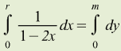 This leads to the following two formulae for converting between the two: 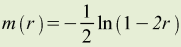 (eq.1)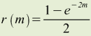 (eq.2)
Madeline implements eq. 1 in |
M>?HaldaneToTheta(3.375)
0.0??????
M>
|
inv();
|
Calculates the inverse of a non-zero real number. |
M>?inv(8)
0.125
M>
|
KosambiToTheta()
|
Converts a genetic map distance expressed in Kosambi centiMorgans to a recombination fraction, theta. Recombination fractions are related to Kosambi genetic distances by: 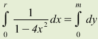 This leads to the following two formulae for converting between the two: 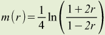 (eq.1)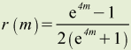 (eq.2)
Madeline implements eq. 1 in |
M>?KosambiToTheta(3.375)
0.0336988
M>
|
lod()
|
Calculates the negative logarithm base 10, i.e., the LOD, of a p-value. |
M>?lod(0.5)
0.30103
M>
|
log()
|
Take the natural logarithm of a real number. |
M>?log(#e)
1
M>
|
log10()
|
Take the logarithm to the base 10 of a real number. |
M>?log10(1000)
3
M>
|
round()
|
Rounds a number up or down to the next whole number. |
M>?round(49.35)
49
M>?round(49.85)
50
M>
|
sin()
|
Take the sine of a real number. |
M>?sin(3*#pi/2)
-1
M>
|
sinh()
|
Take the hyberbolic sine of a real number. |
M>?sinh(1)
1.1752
M>
|
sqrt()
|
Take the square root of a real number. |
M>?sqrt(144)
12
M>
|
tan()
|
Take the tangent of a real number. |
M>?tan(#pi/4)
1
M>
|
tanh()
|
Take the hyberbolic tangent of a real number. |
M>?tanh(1)
0.761594
M>
|
ThetaToHaldane()
|
Converts a recombination fraction, theta, into a genetic map distance expressed in Haldane centiMorgans.
See description above for |
M>?HaldaneToKosambi(0.0???)
3.37???
M>
|
ThetaToKosambi()
|
Converts a recombination fraction, theta, into a genetic map distance expressed in Kosambi centiMorgans.
See description above for |
M>?ThetaToKosambi(0.0337)
3.37512
M>
|
Table 4.8. Aggregate Functions.
| Function Name | Description | Example |
|---|---|---|
_OffspringCount(Expressionlogical)
|
Returns the count of the number of times
the expression evaluates to non-missing
(i.e., either #true or #false
but not #missing)
among the offspring of an individual.
|
// // Find the subset of // mothers for // whom the affection // status of all of // their children is known // (i.e., non-missing): // M>view for _IsFemale and _NumberOfOffspring>=1 and _OffspringCount(AFFECTED)=_NumberOfOffspring ... 167 individuals in 113 pedigrees matched as follows: ... |
_OffspringCountFalse(Expressionlogical)
|
Returns the count of the number of times the
expression evaluates to #false
among the offspring of an individual.
|
// // Find the subset of mothers // with at least two unaffected // offspring: // M>view for _IsFemale and _OffspringCountFalse(_IsAffected)>=2 ... 26 individuals in 11 pedigrees matched as follows: ... |
_OffspringCountMissing(Expressionlogical)
|
Returns the count of the number of times the expression
evaluates to #missing among the offspring of an
individual.
|
// // Find the subset of mothers // for whom one or more offspring // lack a glucose measurement: // M>view for _IsFemale and _OffspringCountMissing(GLUCOSE)>=1 ... 12 individuals in 5 pedigrees matched as follows: ... |
_OffspringCountPairsTrue(Expressionlogical)
|
Returns the count of the number of pairs of offspring that satisfy the query criteria. |
// // Create a table showing // the number of offspring, // affected offspring, and // affected offspring pairs // for all mothers with four // or more children: // M>view data _NumberOfOffspring, _OffspringCountTrue(_IsAffected), _OffspringCountPairsTrue(_IsAffected) for _IsFemale and _NumberOfOffspring>=4 ... L0122 N00315 4 2 1 L0173 N00326 6 4 6 L0220 N00177 4 4 6 L0261 N00355 4 3 3 L0267 N00154 5 5 10 L0314 N00369 6 4 6 L0329 N00102 7 7 21 ... 39 individuals in 31 pedigrees matched as follows: ... M> |
_OffspringCountTrue(Expressionlogical)
|
Returns the count of the number of times the expression
evaluates to #true among the offspring
of an individual.
|
// // Find the subset of mothers // with exactly two affected // and two unaffected offspring // M>view for _IsFemale and _NumberOfOffspring=4 and _OffspringCountTrue(_IsAffected) == _OffspringCountFalse(_IsAffected) ... 3 individuals in 3 pedigrees matched as follows: ... |
_OffspringMaximum(Expressionnumeric)
|
Returns the maximum value of the expression among the set of offspring of an individual. |
// // Query sibship maximum // age of diagnosis (AGE_DX): // M>?_FamilyId + " : " + _IndividualId "L0919 : N00556" M>?_NumberOfOffspring 4 M>show _OffspringMaximum(AGE_DX) 76 M> |
_OffspringMean(Expressionnumeric)
|
Returns the mean offspring value of the expression. |
// // Query sibship mean // body mass index (BMI) // and age of diagnosis (AGE_DX): // M>show studyid "0470-701" M>show sex "F" M>show bmi 22.975 M>show _NumberOfOffspring 6 M>show _OffspringMean(BMI) 26.3063 M>show _OffspringMean(AGE_DX) 68.75 M> |
_OffspringMinimum(Expressionnumeric)
|
Returns the minimum value of the expression among the set of offspring of an individual. |
// // Query sibship minimum // age of diagnosis (AGE_DX): // M>?_FamilyId + " : " + _IndividualId "L0919 : N00556" M>?_NumberOfOffspring 4 M>show _OffspringMinimum(AGE_DX) 63 M> |
_OffspringStandardDeviation(Expressionnumeric)
|
Returns the standard deviation of the expression evaluated on each of the offspring of an individual. |
M>? "Pedigree: " + _FamilyID + " Indv: " + _Id "Pedigree: L0913 Indv: N00267" M>? _OffspringMinimum(AGE_DX) 58 M>? _OffspringMaximum(AGE_DX) 82 M>? _OffspringStandardDeviation(AGE_DX) 8.100558476 |
_OffspringStdDev(Expressionnumeric)
|
Returns the standard deviation of the expression
evaluated on each of the offspring of an individual.
Equivalent to
_OffspringStandardDeviation() (See above).
|
See example for _OffspringStandardDeviation() above.
|
_OffspringSum(Expressionnumeric)
|
Returns the sum of the expression evaluated on the offspring of the individual. |
// // find grandmothers with 10 // or more grandchildren // M>view data _OffspringSum( _NumberOfOffspring ) for _IsFemale and _OffspringSum( _NumberOfOffspring ) >= 20 L0519 N00150 20 L0653 N00487 11 2 individuals in 2 pedigrees matched as follows: ... |
_OffspringVariance(Expressionnumeric)
|
Returns the variance of the expression evaluated on the offspring of an individual |
M>show studyid "0009-500" M>show _NumberOfOffspring 4 M>show _OffspringVariance(BMI) 140.682 M>show _OffspringMean(BMI) 34.5261 M> |
Table 4.9. String Functions
End of Document